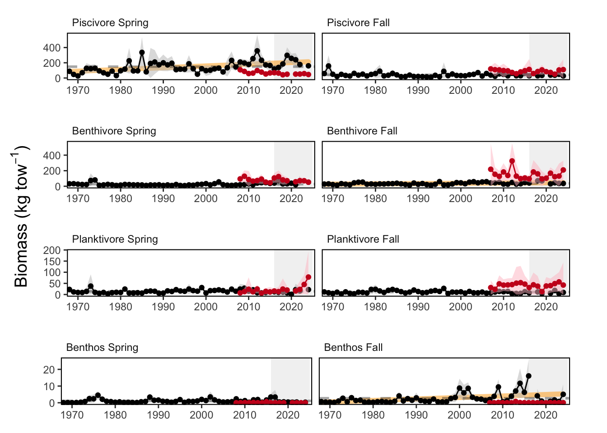
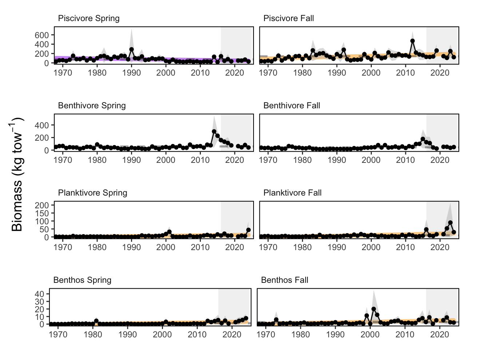
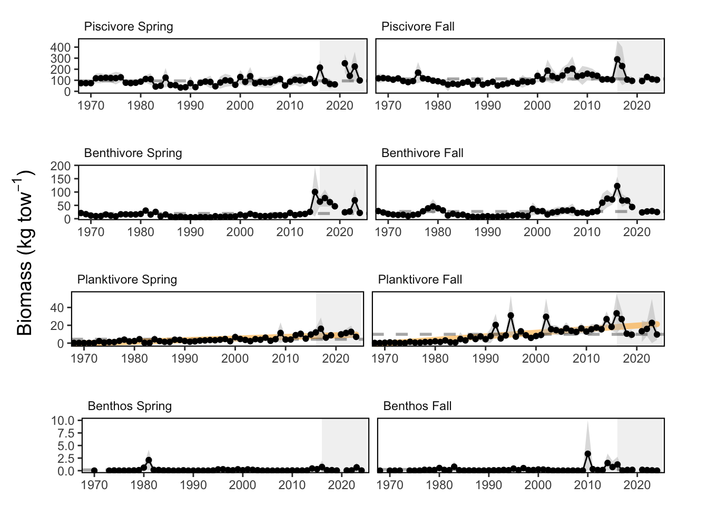

SMART Indicator Report: Aggregate Survey Biomass
2 Indicator name
Aggregate Survey Biomass
Includes variable(s): Apex Predator Fall Biomass Index, Apex Predator Fall Biomass Index - inshore, Apex Predator Fall Biomass Index - offshore, Apex Predator Fall Biomass Standard Error, Apex Predator Fall Biomass Standard Error - inshore, Apex Predator Fall Biomass Standard Error - offshore, Apex Predator NA managed species - Fall Biomass Index, Apex Predator NA managed species - Fall Biomass Index - inshore, Apex Predator NA managed species - Fall Biomass Index - offshore, Apex Predator NA managed species - Fall Biomass Standard Error, Apex Predator NA managed species - Fall Biomass Standard Error - inshore, Apex Predator NA managed species - Fall Biomass Standard Error - offshore, Apex Predator NA managed species - Spring Biomass Index, Apex Predator NA managed species - Spring Biomass Index - inshore, Apex Predator NA managed species - Spring Biomass Index - offshore, Apex Predator NA managed species - Spring Biomass Standard Error, Apex Predator NA managed species - Spring Biomass Standard Error - inshore, Apex Predator NA managed species - Spring Biomass Standard Error - offshore, Apex Predator Spring Biomass Index, Apex Predator Spring Biomass Index - inshore, Apex Predator Spring Biomass Index - offshore, Apex Predator Spring Biomass Standard Error, Apex Predator Spring Biomass Standard Error - inshore, Apex Predator Spring Biomass Standard Error - offshore, Benthivore Fall Biomass Index, Benthivore Fall Biomass Index - inshore, Benthivore Fall Biomass Index - offshore, Benthivore Fall Biomass Standard Error, Benthivore Fall Biomass Standard Error - inshore, Benthivore Fall Biomass Standard Error - offshore, Benthivore MAFMC managed species - Fall Biomass Index, Benthivore MAFMC managed species - Fall Biomass Index - inshore, Benthivore MAFMC managed species - Fall Biomass Index - offshore, Benthivore MAFMC managed species - Fall Biomass Standard Error, Benthivore MAFMC managed species - Fall Biomass Standard Error - inshore, Benthivore MAFMC managed species - Fall Biomass Standard Error - offshore, Benthivore MAFMC managed species - Spring Biomass Index, Benthivore MAFMC managed species - Spring Biomass Index - inshore, Benthivore MAFMC managed species - Spring Biomass Index - offshore, Benthivore MAFMC managed species - Spring Biomass Standard Error, Benthivore MAFMC managed species - Spring Biomass Standard Error - inshore, Benthivore MAFMC managed species - Spring Biomass Standard Error - offshore, Benthivore NA managed species - Fall Biomass Index, Benthivore NA managed species - Fall Biomass Index - inshore, Benthivore NA managed species - Fall Biomass Index - offshore, Benthivore NA managed species - Fall Biomass Standard Error, Benthivore NA managed species - Fall Biomass Standard Error - inshore, Benthivore NA managed species - Fall Biomass Standard Error - offshore, Benthivore NA managed species - Spring Biomass Index, Benthivore NA managed species - Spring Biomass Index - inshore, Benthivore NA managed species - Spring Biomass Index - offshore, Benthivore NA managed species - Spring Biomass Standard Error, Benthivore NA managed species - Spring Biomass Standard Error - inshore, Benthivore NA managed species - Spring Biomass Standard Error - offshore, Benthivore NEFMC managed species - Fall Biomass Index, Benthivore NEFMC managed species - Fall Biomass Index - inshore, Benthivore NEFMC managed species - Fall Biomass Index - offshore, Benthivore NEFMC managed species - Fall Biomass Standard Error, Benthivore NEFMC managed species - Fall Biomass Standard Error - inshore, Benthivore NEFMC managed species - Fall Biomass Standard Error - offshore, Benthivore NEFMC managed species - Spring Biomass Index, Benthivore NEFMC managed species - Spring Biomass Index - inshore, Benthivore NEFMC managed species - Spring Biomass Index - offshore, Benthivore NEFMC managed species - Spring Biomass Standard Error, Benthivore NEFMC managed species - Spring Biomass Standard Error - inshore, Benthivore NEFMC managed species - Spring Biomass Standard Error - offshore, Benthivore Spring Biomass Index, Benthivore Spring Biomass Index - inshore, Benthivore Spring Biomass Index - offshore, Benthivore Spring Biomass Standard Error, Benthivore Spring Biomass Standard Error - inshore, Benthivore Spring Biomass Standard Error - offshore, Benthos Fall Biomass Index, Benthos Fall Biomass Index - inshore, Benthos Fall Biomass Index - offshore, Benthos Fall Biomass Standard Error, Benthos Fall Biomass Standard Error - inshore, Benthos Fall Biomass Standard Error - offshore, Benthos MAFMC managed species - Fall Biomass Index, Benthos MAFMC managed species - Fall Biomass Index - inshore, Benthos MAFMC managed species - Fall Biomass Index - offshore, Benthos MAFMC managed species - Fall Biomass Standard Error, Benthos MAFMC managed species - Fall Biomass Standard Error - inshore, Benthos MAFMC managed species - Fall Biomass Standard Error - offshore, Benthos MAFMC managed species - Spring Biomass Index, Benthos MAFMC managed species - Spring Biomass Index - inshore, Benthos MAFMC managed species - Spring Biomass Index - offshore, Benthos MAFMC managed species - Spring Biomass Standard Error, Benthos MAFMC managed species - Spring Biomass Standard Error - inshore, Benthos MAFMC managed species - Spring Biomass Standard Error - offshore, Benthos NA managed species - Fall Biomass Index, Benthos NA managed species - Fall Biomass Index - offshore, Benthos NA managed species - Fall Biomass Standard Error, Benthos NA managed species - Fall Biomass Standard Error - offshore, Benthos NEFMC managed species - Fall Biomass Index, Benthos NEFMC managed species - Fall Biomass Index - inshore, Benthos NEFMC managed species - Fall Biomass Index - offshore, Benthos NEFMC managed species - Fall Biomass Standard Error, Benthos NEFMC managed species - Fall Biomass Standard Error - inshore, Benthos NEFMC managed species - Fall Biomass Standard Error - offshore, Benthos NEFMC managed species - Spring Biomass Index, Benthos NEFMC managed species - Spring Biomass Index - inshore, Benthos NEFMC managed species - Spring Biomass Index - offshore, Benthos NEFMC managed species - Spring Biomass Standard Error, Benthos NEFMC managed species - Spring Biomass Standard Error - inshore, Benthos NEFMC managed species - Spring Biomass Standard Error - offshore, Benthos Spring Biomass Index, Benthos Spring Biomass Index - inshore, Benthos Spring Biomass Index - offshore, Benthos Spring Biomass Standard Error, Benthos Spring Biomass Standard Error - inshore, Benthos Spring Biomass Standard Error - offshore, NA Fall Biomass Index, NA Fall Biomass Index - inshore, NA Fall Biomass Index - offshore, NA Fall Biomass Standard Error, NA Fall Biomass Standard Error - inshore, NA Fall Biomass Standard Error - offshore, NA NA managed species - Fall Biomass Index, NA NA managed species - Fall Biomass Index - inshore, NA NA managed species - Fall Biomass Index - offshore, NA NA managed species - Fall Biomass Standard Error, NA NA managed species - Fall Biomass Standard Error - inshore, NA NA managed species - Fall Biomass Standard Error - offshore, NA NA managed species - Spring Biomass Index, NA NA managed species - Spring Biomass Index - inshore, NA NA managed species - Spring Biomass Index - offshore, NA NA managed species - Spring Biomass Standard Error, NA NA managed species - Spring Biomass Standard Error - inshore, NA NA managed species - Spring Biomass Standard Error - offshore, NA Spring Biomass Index, NA Spring Biomass Index - inshore, NA Spring Biomass Index - offshore, NA Spring Biomass Standard Error, NA Spring Biomass Standard Error - inshore, NA Spring Biomass Standard Error - offshore, Other Fall Biomass Index, Other Fall Biomass Index - inshore, Other Fall Biomass Index - offshore, Other Fall Biomass Standard Error, Other Fall Biomass Standard Error - inshore, Other Fall Biomass Standard Error - offshore, Other MAFMC managed species - Fall Biomass Index, Other MAFMC managed species - Fall Biomass Index - inshore, Other MAFMC managed species - Fall Biomass Index - offshore, Other MAFMC managed species - Fall Biomass Standard Error, Other MAFMC managed species - Fall Biomass Standard Error - inshore, Other MAFMC managed species - Fall Biomass Standard Error - offshore, Other MAFMC managed species - Spring Biomass Index, Other MAFMC managed species - Spring Biomass Index - inshore, Other MAFMC managed species - Spring Biomass Index - offshore, Other MAFMC managed species - Spring Biomass Standard Error, Other MAFMC managed species - Spring Biomass Standard Error - inshore, Other MAFMC managed species - Spring Biomass Standard Error - offshore, Other NA managed species - Fall Biomass Index, Other NA managed species - Fall Biomass Index - inshore, Other NA managed species - Fall Biomass Index - offshore, Other NA managed species - Fall Biomass Standard Error, Other NA managed species - Fall Biomass Standard Error - inshore, Other NA managed species - Fall Biomass Standard Error - offshore, Other NA managed species - Spring Biomass Index, Other NA managed species - Spring Biomass Index - inshore, Other NA managed species - Spring Biomass Index - offshore, Other NA managed species - Spring Biomass Standard Error, Other NA managed species - Spring Biomass Standard Error - inshore, Other NA managed species - Spring Biomass Standard Error - offshore, Other NEFMC managed species - Fall Biomass Index, Other NEFMC managed species - Fall Biomass Index - offshore, Other NEFMC managed species - Fall Biomass Standard Error, Other NEFMC managed species - Fall Biomass Standard Error - offshore, Other Spring Biomass Index, Other Spring Biomass Index - inshore, Other Spring Biomass Index - offshore, Other Spring Biomass Standard Error, Other Spring Biomass Standard Error - inshore, Other Spring Biomass Standard Error - offshore, Piscivore Fall Biomass Index, Piscivore Fall Biomass Index - inshore, Piscivore Fall Biomass Index - offshore, Piscivore Fall Biomass Standard Error, Piscivore Fall Biomass Standard Error - inshore, Piscivore Fall Biomass Standard Error - offshore, Piscivore JOINT managed species - Fall Biomass Index, Piscivore JOINT managed species - Fall Biomass Index - inshore, Piscivore JOINT managed species - Fall Biomass Index - offshore, Piscivore JOINT managed species - Fall Biomass Standard Error, Piscivore JOINT managed species - Fall Biomass Standard Error - inshore, Piscivore JOINT managed species - Fall Biomass Standard Error - offshore, Piscivore JOINT managed species - Spring Biomass Index, Piscivore JOINT managed species - Spring Biomass Index - inshore, Piscivore JOINT managed species - Spring Biomass Index - offshore, Piscivore JOINT managed species - Spring Biomass Standard Error, Piscivore JOINT managed species - Spring Biomass Standard Error - inshore, Piscivore JOINT managed species - Spring Biomass Standard Error - offshore, Piscivore MAFMC managed species - Fall Biomass Index, Piscivore MAFMC managed species - Fall Biomass Index - inshore, Piscivore MAFMC managed species - Fall Biomass Index - offshore, Piscivore MAFMC managed species - Fall Biomass Standard Error, Piscivore MAFMC managed species - Fall Biomass Standard Error - inshore, Piscivore MAFMC managed species - Fall Biomass Standard Error - offshore, Piscivore MAFMC managed species - Spring Biomass Index, Piscivore MAFMC managed species - Spring Biomass Index - inshore, Piscivore MAFMC managed species - Spring Biomass Index - offshore, Piscivore MAFMC managed species - Spring Biomass Standard Error, Piscivore MAFMC managed species - Spring Biomass Standard Error - inshore, Piscivore MAFMC managed species - Spring Biomass Standard Error - offshore, Piscivore NA managed species - Fall Biomass Index, Piscivore NA managed species - Fall Biomass Index - inshore, Piscivore NA managed species - Fall Biomass Index - offshore, Piscivore NA managed species - Fall Biomass Standard Error, Piscivore NA managed species - Fall Biomass Standard Error - inshore, Piscivore NA managed species - Fall Biomass Standard Error - offshore, Piscivore NA managed species - Spring Biomass Index, Piscivore NA managed species - Spring Biomass Index - inshore, Piscivore NA managed species - Spring Biomass Index - offshore, Piscivore NA managed species - Spring Biomass Standard Error, Piscivore NA managed species - Spring Biomass Standard Error - inshore, Piscivore NA managed species - Spring Biomass Standard Error - offshore, Piscivore NEFMC managed species - Fall Biomass Index, Piscivore NEFMC managed species - Fall Biomass Index - inshore, Piscivore NEFMC managed species - Fall Biomass Index - offshore, Piscivore NEFMC managed species - Fall Biomass Standard Error, Piscivore NEFMC managed species - Fall Biomass Standard Error - inshore, Piscivore NEFMC managed species - Fall Biomass Standard Error - offshore, Piscivore NEFMC managed species - Spring Biomass Index, Piscivore NEFMC managed species - Spring Biomass Index - inshore, Piscivore NEFMC managed species - Spring Biomass Index - offshore, Piscivore NEFMC managed species - Spring Biomass Standard Error, Piscivore NEFMC managed species - Spring Biomass Standard Error - inshore, Piscivore NEFMC managed species - Spring Biomass Standard Error - offshore, Piscivore Spring Biomass Index, Piscivore Spring Biomass Index - inshore, Piscivore Spring Biomass Index - offshore, Piscivore Spring Biomass Standard Error, Piscivore Spring Biomass Standard Error - inshore, Piscivore Spring Biomass Standard Error - offshore, Planktivore Fall Biomass Index, Planktivore Fall Biomass Index - inshore, Planktivore Fall Biomass Index - offshore, Planktivore Fall Biomass Standard Error, Planktivore Fall Biomass Standard Error - inshore, Planktivore Fall Biomass Standard Error - offshore, Planktivore MAFMC managed species - Fall Biomass Index, Planktivore MAFMC managed species - Fall Biomass Index - inshore, Planktivore MAFMC managed species - Fall Biomass Index - offshore, Planktivore MAFMC managed species - Fall Biomass Standard Error, Planktivore MAFMC managed species - Fall Biomass Standard Error - inshore, Planktivore MAFMC managed species - Fall Biomass Standard Error - offshore, Planktivore MAFMC managed species - Spring Biomass Index, Planktivore MAFMC managed species - Spring Biomass Index - inshore, Planktivore MAFMC managed species - Spring Biomass Index - offshore, Planktivore MAFMC managed species - Spring Biomass Standard Error, Planktivore MAFMC managed species - Spring Biomass Standard Error - inshore, Planktivore MAFMC managed species - Spring Biomass Standard Error - offshore, Planktivore NA managed species - Fall Biomass Index, Planktivore NA managed species - Fall Biomass Index - inshore, Planktivore NA managed species - Fall Biomass Index - offshore, Planktivore NA managed species - Fall Biomass Standard Error, Planktivore NA managed species - Fall Biomass Standard Error - inshore, Planktivore NA managed species - Fall Biomass Standard Error - offshore, Planktivore NA managed species - Spring Biomass Index, Planktivore NA managed species - Spring Biomass Index - inshore, Planktivore NA managed species - Spring Biomass Index - offshore, Planktivore NA managed species - Spring Biomass Standard Error, Planktivore NA managed species - Spring Biomass Standard Error - inshore, Planktivore NA managed species - Spring Biomass Standard Error - offshore, Planktivore NEFMC managed species - Fall Biomass Index, Planktivore NEFMC managed species - Fall Biomass Index - inshore, Planktivore NEFMC managed species - Fall Biomass Index - offshore, Planktivore NEFMC managed species - Fall Biomass Standard Error, Planktivore NEFMC managed species - Fall Biomass Standard Error - inshore, Planktivore NEFMC managed species - Fall Biomass Standard Error - offshore, Planktivore NEFMC managed species - Spring Biomass Index, Planktivore NEFMC managed species - Spring Biomass Index - inshore, Planktivore NEFMC managed species - Spring Biomass Index - offshore, Planktivore NEFMC managed species - Spring Biomass Standard Error, Planktivore NEFMC managed species - Spring Biomass Standard Error - inshore, Planktivore NEFMC managed species - Spring Biomass Standard Error - offshore, Planktivore Spring Biomass Index, Planktivore Spring Biomass Index - inshore, Planktivore Spring Biomass Index - offshore, Planktivore Spring Biomass Standard Error, Planktivore Spring Biomass Standard Error - inshore, Planktivore Spring Biomass Standard Error - offshore
3 Indicator brief description
Aggregate biomass from Northeast Fisheries Science Center (NEFSC) bottom trawl survey.
4 Indicator visualization
Aggregate biomass levels have been relatively stable over time. Black points represent data from the Northeast Fisheries Science Center (NEFSC) bottom trawl survey. Red points represent data from the NEAMAP inshore survey.

5 Indicator documentation
5.1 Are indicators available for others to use (data downloadable)?
Yes
5.1.1 Where can indicators be found?
Data: https://noaa-edab.github.io/ecodata/index.html
Description: https://noaa-edab.github.io/catalog/aggregate_biomass.html
Technical documentation: https://noaa-edab.github.io/tech-doc/aggregate_biomass.html
5.1.2 How often are they updated? Are future updates likely?
[need sequential look at datasets for update frequency. Future requires judgement]
5.1.3 Who is the contact?
Andrew Beet (Andrew.Beet@NOAA.gov)
5.2 Gather indicator statistics
5.2.1 Units
Indicator | Units |
|---|---|
Apex Predator Fall Biomass Index | kg tow^-1 |
Apex Predator Fall Biomass Index - inshore | kg tow^-1 |
Apex Predator Fall Biomass Index - offshore | kg tow^-1 |
Apex Predator Fall Biomass Standard Error | kg tow^-1 |
Apex Predator Fall Biomass Standard Error - inshore | kg tow^-1 |
Apex Predator Fall Biomass Standard Error - offshore | kg tow^-1 |
Apex Predator NA managed species - Fall Biomass Index | kg tow^-1 |
Apex Predator NA managed species - Fall Biomass Index - inshore | kg tow^-1 |
Apex Predator NA managed species - Fall Biomass Index - offshore | kg tow^-1 |
Apex Predator NA managed species - Fall Biomass Standard Error | kg tow^-1 |
Apex Predator NA managed species - Fall Biomass Standard Error - inshore | kg tow^-1 |
Apex Predator NA managed species - Fall Biomass Standard Error - offshore | kg tow^-1 |
Apex Predator NA managed species - Spring Biomass Index | kg tow^-1 |
Apex Predator NA managed species - Spring Biomass Index - inshore | kg tow^-1 |
Apex Predator NA managed species - Spring Biomass Index - offshore | kg tow^-1 |
Apex Predator NA managed species - Spring Biomass Standard Error | kg tow^-1 |
Apex Predator NA managed species - Spring Biomass Standard Error - inshore | kg tow^-1 |
Apex Predator NA managed species - Spring Biomass Standard Error - offshore | kg tow^-1 |
Apex Predator Spring Biomass Index | kg tow^-1 |
Apex Predator Spring Biomass Index - inshore | kg tow^-1 |
Apex Predator Spring Biomass Index - offshore | kg tow^-1 |
Apex Predator Spring Biomass Standard Error | kg tow^-1 |
Apex Predator Spring Biomass Standard Error - inshore | kg tow^-1 |
Apex Predator Spring Biomass Standard Error - offshore | kg tow^-1 |
Benthivore Fall Biomass Index | kg tow^-1 |
Benthivore Fall Biomass Index - inshore | kg tow^-1 |
Benthivore Fall Biomass Index - offshore | kg tow^-1 |
Benthivore Fall Biomass Standard Error | kg tow^-1 |
Benthivore Fall Biomass Standard Error - inshore | kg tow^-1 |
Benthivore Fall Biomass Standard Error - offshore | kg tow^-1 |
Benthivore MAFMC managed species - Fall Biomass Index | kg tow^-1 |
Benthivore MAFMC managed species - Fall Biomass Index - inshore | kg tow^-1 |
Benthivore MAFMC managed species - Fall Biomass Index - offshore | kg tow^-1 |
Benthivore MAFMC managed species - Fall Biomass Standard Error | kg tow^-1 |
Benthivore MAFMC managed species - Fall Biomass Standard Error - inshore | kg tow^-1 |
Benthivore MAFMC managed species - Fall Biomass Standard Error - offshore | kg tow^-1 |
Benthivore MAFMC managed species - Spring Biomass Index | kg tow^-1 |
Benthivore MAFMC managed species - Spring Biomass Index - inshore | kg tow^-1 |
Benthivore MAFMC managed species - Spring Biomass Index - offshore | kg tow^-1 |
Benthivore MAFMC managed species - Spring Biomass Standard Error | kg tow^-1 |
Benthivore MAFMC managed species - Spring Biomass Standard Error - inshore | kg tow^-1 |
Benthivore MAFMC managed species - Spring Biomass Standard Error - offshore | kg tow^-1 |
Benthivore NA managed species - Fall Biomass Index | kg tow^-1 |
Benthivore NA managed species - Fall Biomass Index - inshore | kg tow^-1 |
Benthivore NA managed species - Fall Biomass Index - offshore | kg tow^-1 |
Benthivore NA managed species - Fall Biomass Standard Error | kg tow^-1 |
Benthivore NA managed species - Fall Biomass Standard Error - inshore | kg tow^-1 |
Benthivore NA managed species - Fall Biomass Standard Error - offshore | kg tow^-1 |
Benthivore NA managed species - Spring Biomass Index | kg tow^-1 |
Benthivore NA managed species - Spring Biomass Index - inshore | kg tow^-1 |
Benthivore NA managed species - Spring Biomass Index - offshore | kg tow^-1 |
Benthivore NA managed species - Spring Biomass Standard Error | kg tow^-1 |
Benthivore NA managed species - Spring Biomass Standard Error - inshore | kg tow^-1 |
Benthivore NA managed species - Spring Biomass Standard Error - offshore | kg tow^-1 |
Benthivore NEFMC managed species - Fall Biomass Index | kg tow^-1 |
Benthivore NEFMC managed species - Fall Biomass Index - inshore | kg tow^-1 |
Benthivore NEFMC managed species - Fall Biomass Index - offshore | kg tow^-1 |
Benthivore NEFMC managed species - Fall Biomass Standard Error | kg tow^-1 |
Benthivore NEFMC managed species - Fall Biomass Standard Error - inshore | kg tow^-1 |
Benthivore NEFMC managed species - Fall Biomass Standard Error - offshore | kg tow^-1 |
Benthivore NEFMC managed species - Spring Biomass Index | kg tow^-1 |
Benthivore NEFMC managed species - Spring Biomass Index - inshore | kg tow^-1 |
Benthivore NEFMC managed species - Spring Biomass Index - offshore | kg tow^-1 |
Benthivore NEFMC managed species - Spring Biomass Standard Error | kg tow^-1 |
Benthivore NEFMC managed species - Spring Biomass Standard Error - inshore | kg tow^-1 |
Benthivore NEFMC managed species - Spring Biomass Standard Error - offshore | kg tow^-1 |
Benthivore Spring Biomass Index | kg tow^-1 |
Benthivore Spring Biomass Index - inshore | kg tow^-1 |
Benthivore Spring Biomass Index - offshore | kg tow^-1 |
Benthivore Spring Biomass Standard Error | kg tow^-1 |
Benthivore Spring Biomass Standard Error - inshore | kg tow^-1 |
Benthivore Spring Biomass Standard Error - offshore | kg tow^-1 |
Benthos Fall Biomass Index | kg tow^-1 |
Benthos Fall Biomass Index - inshore | kg tow^-1 |
Benthos Fall Biomass Index - offshore | kg tow^-1 |
Benthos Fall Biomass Standard Error | kg tow^-1 |
Benthos Fall Biomass Standard Error - inshore | kg tow^-1 |
Benthos Fall Biomass Standard Error - offshore | kg tow^-1 |
Benthos MAFMC managed species - Fall Biomass Index | kg tow^-1 |
Benthos MAFMC managed species - Fall Biomass Index - inshore | kg tow^-1 |
Benthos MAFMC managed species - Fall Biomass Index - offshore | kg tow^-1 |
Benthos MAFMC managed species - Fall Biomass Standard Error | kg tow^-1 |
Benthos MAFMC managed species - Fall Biomass Standard Error - inshore | kg tow^-1 |
Benthos MAFMC managed species - Fall Biomass Standard Error - offshore | kg tow^-1 |
Benthos MAFMC managed species - Spring Biomass Index | kg tow^-1 |
Benthos MAFMC managed species - Spring Biomass Index - inshore | kg tow^-1 |
Benthos MAFMC managed species - Spring Biomass Index - offshore | kg tow^-1 |
Benthos MAFMC managed species - Spring Biomass Standard Error | kg tow^-1 |
Benthos MAFMC managed species - Spring Biomass Standard Error - inshore | kg tow^-1 |
Benthos MAFMC managed species - Spring Biomass Standard Error - offshore | kg tow^-1 |
Benthos NA managed species - Fall Biomass Index | kg tow^-1 |
Benthos NA managed species - Fall Biomass Index - offshore | kg tow^-1 |
Benthos NA managed species - Fall Biomass Standard Error | kg tow^-1 |
Benthos NA managed species - Fall Biomass Standard Error - offshore | kg tow^-1 |
Benthos NEFMC managed species - Fall Biomass Index | kg tow^-1 |
Benthos NEFMC managed species - Fall Biomass Index - inshore | kg tow^-1 |
Benthos NEFMC managed species - Fall Biomass Index - offshore | kg tow^-1 |
Benthos NEFMC managed species - Fall Biomass Standard Error | kg tow^-1 |
Benthos NEFMC managed species - Fall Biomass Standard Error - inshore | kg tow^-1 |
Benthos NEFMC managed species - Fall Biomass Standard Error - offshore | kg tow^-1 |
Benthos NEFMC managed species - Spring Biomass Index | kg tow^-1 |
Benthos NEFMC managed species - Spring Biomass Index - inshore | kg tow^-1 |
Benthos NEFMC managed species - Spring Biomass Index - offshore | kg tow^-1 |
Benthos NEFMC managed species - Spring Biomass Standard Error | kg tow^-1 |
Benthos NEFMC managed species - Spring Biomass Standard Error - inshore | kg tow^-1 |
Benthos NEFMC managed species - Spring Biomass Standard Error - offshore | kg tow^-1 |
Benthos Spring Biomass Index | kg tow^-1 |
Benthos Spring Biomass Index - inshore | kg tow^-1 |
Benthos Spring Biomass Index - offshore | kg tow^-1 |
Benthos Spring Biomass Standard Error | kg tow^-1 |
Benthos Spring Biomass Standard Error - inshore | kg tow^-1 |
Benthos Spring Biomass Standard Error - offshore | kg tow^-1 |
NA Fall Biomass Index | kg tow^-1 |
NA Fall Biomass Index - inshore | kg tow^-1 |
NA Fall Biomass Index - offshore | kg tow^-1 |
NA Fall Biomass Standard Error | kg tow^-1 |
NA Fall Biomass Standard Error - inshore | kg tow^-1 |
NA Fall Biomass Standard Error - offshore | kg tow^-1 |
NA NA managed species - Fall Biomass Index | kg tow^-1 |
NA NA managed species - Fall Biomass Index - inshore | kg tow^-1 |
NA NA managed species - Fall Biomass Index - offshore | kg tow^-1 |
NA NA managed species - Fall Biomass Standard Error | kg tow^-1 |
NA NA managed species - Fall Biomass Standard Error - inshore | kg tow^-1 |
NA NA managed species - Fall Biomass Standard Error - offshore | kg tow^-1 |
NA NA managed species - Spring Biomass Index | kg tow^-1 |
NA NA managed species - Spring Biomass Index - inshore | kg tow^-1 |
NA NA managed species - Spring Biomass Index - offshore | kg tow^-1 |
NA NA managed species - Spring Biomass Standard Error | kg tow^-1 |
NA NA managed species - Spring Biomass Standard Error - inshore | kg tow^-1 |
NA NA managed species - Spring Biomass Standard Error - offshore | kg tow^-1 |
NA Spring Biomass Index | kg tow^-1 |
NA Spring Biomass Index - inshore | kg tow^-1 |
NA Spring Biomass Index - offshore | kg tow^-1 |
NA Spring Biomass Standard Error | kg tow^-1 |
NA Spring Biomass Standard Error - inshore | kg tow^-1 |
NA Spring Biomass Standard Error - offshore | kg tow^-1 |
Other Fall Biomass Index | kg tow^-1 |
Other Fall Biomass Index - inshore | kg tow^-1 |
Other Fall Biomass Index - offshore | kg tow^-1 |
Other Fall Biomass Standard Error | kg tow^-1 |
Other Fall Biomass Standard Error - inshore | kg tow^-1 |
Other Fall Biomass Standard Error - offshore | kg tow^-1 |
Other MAFMC managed species - Fall Biomass Index | kg tow^-1 |
Other MAFMC managed species - Fall Biomass Index - inshore | kg tow^-1 |
Other MAFMC managed species - Fall Biomass Index - offshore | kg tow^-1 |
Other MAFMC managed species - Fall Biomass Standard Error | kg tow^-1 |
Other MAFMC managed species - Fall Biomass Standard Error - inshore | kg tow^-1 |
Other MAFMC managed species - Fall Biomass Standard Error - offshore | kg tow^-1 |
Other MAFMC managed species - Spring Biomass Index | kg tow^-1 |
Other MAFMC managed species - Spring Biomass Index - inshore | kg tow^-1 |
Other MAFMC managed species - Spring Biomass Index - offshore | kg tow^-1 |
Other MAFMC managed species - Spring Biomass Standard Error | kg tow^-1 |
Other MAFMC managed species - Spring Biomass Standard Error - inshore | kg tow^-1 |
Other MAFMC managed species - Spring Biomass Standard Error - offshore | kg tow^-1 |
Other NA managed species - Fall Biomass Index | kg tow^-1 |
Other NA managed species - Fall Biomass Index - inshore | kg tow^-1 |
Other NA managed species - Fall Biomass Index - offshore | kg tow^-1 |
Other NA managed species - Fall Biomass Standard Error | kg tow^-1 |
Other NA managed species - Fall Biomass Standard Error - inshore | kg tow^-1 |
Other NA managed species - Fall Biomass Standard Error - offshore | kg tow^-1 |
Other NA managed species - Spring Biomass Index | kg tow^-1 |
Other NA managed species - Spring Biomass Index - inshore | kg tow^-1 |
Other NA managed species - Spring Biomass Index - offshore | kg tow^-1 |
Other NA managed species - Spring Biomass Standard Error | kg tow^-1 |
Other NA managed species - Spring Biomass Standard Error - inshore | kg tow^-1 |
Other NA managed species - Spring Biomass Standard Error - offshore | kg tow^-1 |
Other NEFMC managed species - Fall Biomass Index | kg tow^-1 |
Other NEFMC managed species - Fall Biomass Index - offshore | kg tow^-1 |
Other NEFMC managed species - Fall Biomass Standard Error | kg tow^-1 |
Other NEFMC managed species - Fall Biomass Standard Error - offshore | kg tow^-1 |
Other Spring Biomass Index | kg tow^-1 |
Other Spring Biomass Index - inshore | kg tow^-1 |
Other Spring Biomass Index - offshore | kg tow^-1 |
Other Spring Biomass Standard Error | kg tow^-1 |
Other Spring Biomass Standard Error - inshore | kg tow^-1 |
Other Spring Biomass Standard Error - offshore | kg tow^-1 |
Piscivore Fall Biomass Index | kg tow^-1 |
Piscivore Fall Biomass Index - inshore | kg tow^-1 |
Piscivore Fall Biomass Index - offshore | kg tow^-1 |
Piscivore Fall Biomass Standard Error | kg tow^-1 |
Piscivore Fall Biomass Standard Error - inshore | kg tow^-1 |
Piscivore Fall Biomass Standard Error - offshore | kg tow^-1 |
Piscivore JOINT managed species - Fall Biomass Index | kg tow^-1 |
Piscivore JOINT managed species - Fall Biomass Index - inshore | kg tow^-1 |
Piscivore JOINT managed species - Fall Biomass Index - offshore | kg tow^-1 |
Piscivore JOINT managed species - Fall Biomass Standard Error | kg tow^-1 |
Piscivore JOINT managed species - Fall Biomass Standard Error - inshore | kg tow^-1 |
Piscivore JOINT managed species - Fall Biomass Standard Error - offshore | kg tow^-1 |
Piscivore JOINT managed species - Spring Biomass Index | kg tow^-1 |
Piscivore JOINT managed species - Spring Biomass Index - inshore | kg tow^-1 |
Piscivore JOINT managed species - Spring Biomass Index - offshore | kg tow^-1 |
Piscivore JOINT managed species - Spring Biomass Standard Error | kg tow^-1 |
Piscivore JOINT managed species - Spring Biomass Standard Error - inshore | kg tow^-1 |
Piscivore JOINT managed species - Spring Biomass Standard Error - offshore | kg tow^-1 |
Piscivore MAFMC managed species - Fall Biomass Index | kg tow^-1 |
Piscivore MAFMC managed species - Fall Biomass Index - inshore | kg tow^-1 |
Piscivore MAFMC managed species - Fall Biomass Index - offshore | kg tow^-1 |
Piscivore MAFMC managed species - Fall Biomass Standard Error | kg tow^-1 |
Piscivore MAFMC managed species - Fall Biomass Standard Error - inshore | kg tow^-1 |
Piscivore MAFMC managed species - Fall Biomass Standard Error - offshore | kg tow^-1 |
Piscivore MAFMC managed species - Spring Biomass Index | kg tow^-1 |
Piscivore MAFMC managed species - Spring Biomass Index - inshore | kg tow^-1 |
Piscivore MAFMC managed species - Spring Biomass Index - offshore | kg tow^-1 |
Piscivore MAFMC managed species - Spring Biomass Standard Error | kg tow^-1 |
Piscivore MAFMC managed species - Spring Biomass Standard Error - inshore | kg tow^-1 |
Piscivore MAFMC managed species - Spring Biomass Standard Error - offshore | kg tow^-1 |
Piscivore NA managed species - Fall Biomass Index | kg tow^-1 |
Piscivore NA managed species - Fall Biomass Index - inshore | kg tow^-1 |
Piscivore NA managed species - Fall Biomass Index - offshore | kg tow^-1 |
Piscivore NA managed species - Fall Biomass Standard Error | kg tow^-1 |
Piscivore NA managed species - Fall Biomass Standard Error - inshore | kg tow^-1 |
Piscivore NA managed species - Fall Biomass Standard Error - offshore | kg tow^-1 |
Piscivore NA managed species - Spring Biomass Index | kg tow^-1 |
Piscivore NA managed species - Spring Biomass Index - inshore | kg tow^-1 |
Piscivore NA managed species - Spring Biomass Index - offshore | kg tow^-1 |
Piscivore NA managed species - Spring Biomass Standard Error | kg tow^-1 |
Piscivore NA managed species - Spring Biomass Standard Error - inshore | kg tow^-1 |
Piscivore NA managed species - Spring Biomass Standard Error - offshore | kg tow^-1 |
Piscivore NEFMC managed species - Fall Biomass Index | kg tow^-1 |
Piscivore NEFMC managed species - Fall Biomass Index - inshore | kg tow^-1 |
Piscivore NEFMC managed species - Fall Biomass Index - offshore | kg tow^-1 |
Piscivore NEFMC managed species - Fall Biomass Standard Error | kg tow^-1 |
Piscivore NEFMC managed species - Fall Biomass Standard Error - inshore | kg tow^-1 |
Piscivore NEFMC managed species - Fall Biomass Standard Error - offshore | kg tow^-1 |
Piscivore NEFMC managed species - Spring Biomass Index | kg tow^-1 |
Piscivore NEFMC managed species - Spring Biomass Index - inshore | kg tow^-1 |
Piscivore NEFMC managed species - Spring Biomass Index - offshore | kg tow^-1 |
Piscivore NEFMC managed species - Spring Biomass Standard Error | kg tow^-1 |
Piscivore NEFMC managed species - Spring Biomass Standard Error - inshore | kg tow^-1 |
Piscivore NEFMC managed species - Spring Biomass Standard Error - offshore | kg tow^-1 |
Piscivore Spring Biomass Index | kg tow^-1 |
Piscivore Spring Biomass Index - inshore | kg tow^-1 |
Piscivore Spring Biomass Index - offshore | kg tow^-1 |
Piscivore Spring Biomass Standard Error | kg tow^-1 |
Piscivore Spring Biomass Standard Error - inshore | kg tow^-1 |
Piscivore Spring Biomass Standard Error - offshore | kg tow^-1 |
Planktivore Fall Biomass Index | kg tow^-1 |
Planktivore Fall Biomass Index - inshore | kg tow^-1 |
Planktivore Fall Biomass Index - offshore | kg tow^-1 |
Planktivore Fall Biomass Standard Error | kg tow^-1 |
Planktivore Fall Biomass Standard Error - inshore | kg tow^-1 |
Planktivore Fall Biomass Standard Error - offshore | kg tow^-1 |
Planktivore MAFMC managed species - Fall Biomass Index | kg tow^-1 |
Planktivore MAFMC managed species - Fall Biomass Index - inshore | kg tow^-1 |
Planktivore MAFMC managed species - Fall Biomass Index - offshore | kg tow^-1 |
Planktivore MAFMC managed species - Fall Biomass Standard Error | kg tow^-1 |
Planktivore MAFMC managed species - Fall Biomass Standard Error - inshore | kg tow^-1 |
Planktivore MAFMC managed species - Fall Biomass Standard Error - offshore | kg tow^-1 |
Planktivore MAFMC managed species - Spring Biomass Index | kg tow^-1 |
Planktivore MAFMC managed species - Spring Biomass Index - inshore | kg tow^-1 |
Planktivore MAFMC managed species - Spring Biomass Index - offshore | kg tow^-1 |
Planktivore MAFMC managed species - Spring Biomass Standard Error | kg tow^-1 |
Planktivore MAFMC managed species - Spring Biomass Standard Error - inshore | kg tow^-1 |
Planktivore MAFMC managed species - Spring Biomass Standard Error - offshore | kg tow^-1 |
Planktivore NA managed species - Fall Biomass Index | kg tow^-1 |
Planktivore NA managed species - Fall Biomass Index - inshore | kg tow^-1 |
Planktivore NA managed species - Fall Biomass Index - offshore | kg tow^-1 |
Planktivore NA managed species - Fall Biomass Standard Error | kg tow^-1 |
Planktivore NA managed species - Fall Biomass Standard Error - inshore | kg tow^-1 |
Planktivore NA managed species - Fall Biomass Standard Error - offshore | kg tow^-1 |
Planktivore NA managed species - Spring Biomass Index | kg tow^-1 |
Planktivore NA managed species - Spring Biomass Index - inshore | kg tow^-1 |
Planktivore NA managed species - Spring Biomass Index - offshore | kg tow^-1 |
Planktivore NA managed species - Spring Biomass Standard Error | kg tow^-1 |
Planktivore NA managed species - Spring Biomass Standard Error - inshore | kg tow^-1 |
Planktivore NA managed species - Spring Biomass Standard Error - offshore | kg tow^-1 |
Planktivore NEFMC managed species - Fall Biomass Index | kg tow^-1 |
Planktivore NEFMC managed species - Fall Biomass Index - inshore | kg tow^-1 |
Planktivore NEFMC managed species - Fall Biomass Index - offshore | kg tow^-1 |
Planktivore NEFMC managed species - Fall Biomass Standard Error | kg tow^-1 |
Planktivore NEFMC managed species - Fall Biomass Standard Error - inshore | kg tow^-1 |
Planktivore NEFMC managed species - Fall Biomass Standard Error - offshore | kg tow^-1 |
Planktivore NEFMC managed species - Spring Biomass Index | kg tow^-1 |
Planktivore NEFMC managed species - Spring Biomass Index - inshore | kg tow^-1 |
Planktivore NEFMC managed species - Spring Biomass Index - offshore | kg tow^-1 |
Planktivore NEFMC managed species - Spring Biomass Standard Error | kg tow^-1 |
Planktivore NEFMC managed species - Spring Biomass Standard Error - inshore | kg tow^-1 |
Planktivore NEFMC managed species - Spring Biomass Standard Error - offshore | kg tow^-1 |
Planktivore Spring Biomass Index | kg tow^-1 |
Planktivore Spring Biomass Index - inshore | kg tow^-1 |
Planktivore Spring Biomass Index - offshore | kg tow^-1 |
Planktivore Spring Biomass Standard Error | kg tow^-1 |
Planktivore Spring Biomass Standard Error - inshore | kg tow^-1 |
Planktivore Spring Biomass Standard Error - offshore | kg tow^-1 |
5.2.2 Length of time series, start and end date, periodicity
General overview: Spring (March-May) and Fall (September-November)
Indicator specifics:
Indicator | EPU | StartYear | EndYear | NumYears | MissingYears |
|---|---|---|---|---|---|
Apex Predator Fall Biomass Index | All | 1968 | 2021 | 13 | 41 |
Apex Predator Fall Biomass Index | GB | 2021 | 2021 | 1 | 0 |
Apex Predator Fall Biomass Index | MAB | 1968 | 2009 | 10 | 32 |
Apex Predator Fall Biomass Index - inshore | All | 1994 | 2016 | 2 | 21 |
Apex Predator Fall Biomass Index - offshore | All | 1968 | 2021 | 12 | 42 |
Apex Predator Fall Biomass Index - offshore | GB | 2021 | 2021 | 1 | 0 |
Apex Predator Fall Biomass Index - offshore | MAB | 1968 | 2009 | 10 | 32 |
Apex Predator Fall Biomass Standard Error | All | 1968 | 2021 | 13 | 41 |
Apex Predator Fall Biomass Standard Error | GB | 2021 | 2021 | 1 | 0 |
Apex Predator Fall Biomass Standard Error | MAB | 1968 | 2009 | 10 | 32 |
Apex Predator Fall Biomass Standard Error - inshore | All | 1994 | 2016 | 2 | 21 |
Apex Predator Fall Biomass Standard Error - offshore | All | 1968 | 2021 | 12 | 42 |
Apex Predator Fall Biomass Standard Error - offshore | GB | 2021 | 2021 | 1 | 0 |
Apex Predator Fall Biomass Standard Error - offshore | MAB | 1968 | 2009 | 10 | 32 |
Apex Predator NA managed species - Fall Biomass Index | All | 1968 | 2021 | 13 | 41 |
Apex Predator NA managed species - Fall Biomass Index | GB | 2021 | 2021 | 1 | 0 |
Apex Predator NA managed species - Fall Biomass Index | MAB | 1968 | 2009 | 10 | 32 |
Apex Predator NA managed species - Fall Biomass Index - inshore | All | 1994 | 2016 | 2 | 21 |
Apex Predator NA managed species - Fall Biomass Index - offshore | All | 1968 | 2021 | 12 | 42 |
Apex Predator NA managed species - Fall Biomass Index - offshore | GB | 2021 | 2021 | 1 | 0 |
Apex Predator NA managed species - Fall Biomass Index - offshore | MAB | 1968 | 2009 | 10 | 32 |
Apex Predator NA managed species - Fall Biomass Standard Error | All | 1968 | 2021 | 13 | 41 |
Apex Predator NA managed species - Fall Biomass Standard Error | GB | 2021 | 2021 | 1 | 0 |
Apex Predator NA managed species - Fall Biomass Standard Error | MAB | 1968 | 2009 | 10 | 32 |
Apex Predator NA managed species - Fall Biomass Standard Error - inshore | All | 1994 | 2016 | 2 | 21 |
Apex Predator NA managed species - Fall Biomass Standard Error - offshore | All | 1968 | 2021 | 12 | 42 |
Apex Predator NA managed species - Fall Biomass Standard Error - offshore | GB | 2021 | 2021 | 1 | 0 |
Apex Predator NA managed species - Fall Biomass Standard Error - offshore | MAB | 1968 | 2009 | 10 | 32 |
Apex Predator NA managed species - Spring Biomass Index | All | 1981 | 2011 | 6 | 25 |
Apex Predator NA managed species - Spring Biomass Index | MAB | 1982 | 2011 | 5 | 25 |
Apex Predator NA managed species - Spring Biomass Index - inshore | All | 1981 | 1981 | 1 | 0 |
Apex Predator NA managed species - Spring Biomass Index - offshore | All | 1982 | 2011 | 5 | 25 |
Apex Predator NA managed species - Spring Biomass Index - offshore | MAB | 1982 | 2011 | 5 | 25 |
Apex Predator NA managed species - Spring Biomass Standard Error | All | 1981 | 2011 | 6 | 25 |
Apex Predator NA managed species - Spring Biomass Standard Error | MAB | 1982 | 2011 | 5 | 25 |
Apex Predator NA managed species - Spring Biomass Standard Error - inshore | All | 1981 | 1981 | 1 | 0 |
Apex Predator NA managed species - Spring Biomass Standard Error - offshore | All | 1982 | 2011 | 5 | 25 |
Apex Predator NA managed species - Spring Biomass Standard Error - offshore | MAB | 1982 | 2011 | 5 | 25 |
Apex Predator Spring Biomass Index | All | 1981 | 2011 | 6 | 25 |
Apex Predator Spring Biomass Index | MAB | 1982 | 2011 | 5 | 25 |
Apex Predator Spring Biomass Index - inshore | All | 1981 | 1981 | 1 | 0 |
Apex Predator Spring Biomass Index - offshore | All | 1982 | 2011 | 5 | 25 |
Apex Predator Spring Biomass Index - offshore | MAB | 1982 | 2011 | 5 | 25 |
Apex Predator Spring Biomass Standard Error | All | 1981 | 2011 | 6 | 25 |
Apex Predator Spring Biomass Standard Error | MAB | 1982 | 2011 | 5 | 25 |
Apex Predator Spring Biomass Standard Error - inshore | All | 1981 | 1981 | 1 | 0 |
Apex Predator Spring Biomass Standard Error - offshore | All | 1982 | 2011 | 5 | 25 |
Apex Predator Spring Biomass Standard Error - offshore | MAB | 1982 | 2011 | 5 | 25 |
Benthivore Fall Biomass Index | All | 1963 | 2024 | 61 | 1 |
Benthivore Fall Biomass Index | GB | 1963 | 2024 | 61 | 1 |
Benthivore Fall Biomass Index | GOM | 1963 | 2024 | 61 | 1 |
Benthivore Fall Biomass Index | MAB | 1963 | 2024 | 60 | 2 |
Benthivore Fall Biomass Index | SS | 1963 | 2024 | 60 | 2 |
Benthivore Fall Biomass Index - inshore | All | 1970 | 2024 | 54 | 1 |
Benthivore Fall Biomass Index - inshore | GB | 1977 | 2024 | 46 | 2 |
Benthivore Fall Biomass Index - inshore | GOM | 1979 | 2024 | 45 | 1 |
Benthivore Fall Biomass Index - inshore | MAB | 1972 | 2024 | 51 | 2 |
Benthivore Fall Biomass Index - inshore | SS | 1973 | 1999 | 3 | 24 |
Benthivore Fall Biomass Index - offshore | All | 1963 | 2024 | 61 | 1 |
Benthivore Fall Biomass Index - offshore | GB | 1963 | 2024 | 61 | 1 |
Benthivore Fall Biomass Index - offshore | GOM | 1963 | 2024 | 61 | 1 |
Benthivore Fall Biomass Index - offshore | MAB | 1963 | 2024 | 60 | 2 |
Benthivore Fall Biomass Index - offshore | SS | 1963 | 2024 | 60 | 2 |
Benthivore Fall Biomass Standard Error | All | 1963 | 2024 | 61 | 1 |
Benthivore Fall Biomass Standard Error | GB | 1963 | 2024 | 61 | 1 |
Benthivore Fall Biomass Standard Error | GOM | 1963 | 2024 | 61 | 1 |
Benthivore Fall Biomass Standard Error | MAB | 1963 | 2024 | 60 | 2 |
Benthivore Fall Biomass Standard Error | SS | 1963 | 2024 | 60 | 2 |
Benthivore Fall Biomass Standard Error - inshore | All | 1970 | 2024 | 54 | 1 |
Benthivore Fall Biomass Standard Error - inshore | GB | 1977 | 2024 | 46 | 2 |
Benthivore Fall Biomass Standard Error - inshore | GOM | 1979 | 2024 | 45 | 1 |
Benthivore Fall Biomass Standard Error - inshore | MAB | 1972 | 2024 | 51 | 2 |
Benthivore Fall Biomass Standard Error - inshore | SS | 1973 | 1999 | 3 | 24 |
Benthivore Fall Biomass Standard Error - offshore | All | 1963 | 2024 | 61 | 1 |
Benthivore Fall Biomass Standard Error - offshore | GB | 1963 | 2024 | 61 | 1 |
Benthivore Fall Biomass Standard Error - offshore | GOM | 1963 | 2024 | 61 | 1 |
Benthivore Fall Biomass Standard Error - offshore | MAB | 1963 | 2024 | 60 | 2 |
Benthivore Fall Biomass Standard Error - offshore | SS | 1963 | 2024 | 60 | 2 |
Benthivore MAFMC managed species - Fall Biomass Index | All | 1963 | 2024 | 61 | 1 |
Benthivore MAFMC managed species - Fall Biomass Index | GB | 1964 | 2024 | 60 | 1 |
Benthivore MAFMC managed species - Fall Biomass Index | GOM | 1963 | 2024 | 47 | 15 |
Benthivore MAFMC managed species - Fall Biomass Index | MAB | 1963 | 2024 | 60 | 2 |
Benthivore MAFMC managed species - Fall Biomass Index | SS | 1973 | 1999 | 2 | 25 |
Benthivore MAFMC managed species - Fall Biomass Index - inshore | All | 1972 | 2024 | 52 | 1 |
Benthivore MAFMC managed species - Fall Biomass Index - inshore | GB | 1977 | 2024 | 46 | 2 |
Benthivore MAFMC managed species - Fall Biomass Index - inshore | GOM | 1979 | 2024 | 42 | 4 |
Benthivore MAFMC managed species - Fall Biomass Index - inshore | MAB | 1972 | 2024 | 51 | 2 |
Benthivore MAFMC managed species - Fall Biomass Index - inshore | SS | 1973 | 1999 | 2 | 25 |
Benthivore MAFMC managed species - Fall Biomass Index - offshore | All | 1963 | 2024 | 61 | 1 |
Benthivore MAFMC managed species - Fall Biomass Index - offshore | GB | 1964 | 2024 | 58 | 3 |
Benthivore MAFMC managed species - Fall Biomass Index - offshore | GOM | 1963 | 2024 | 29 | 33 |
Benthivore MAFMC managed species - Fall Biomass Index - offshore | MAB | 1963 | 2024 | 60 | 2 |
Benthivore MAFMC managed species - Fall Biomass Standard Error | All | 1963 | 2024 | 61 | 1 |
Benthivore MAFMC managed species - Fall Biomass Standard Error | GB | 1964 | 2024 | 60 | 1 |
Benthivore MAFMC managed species - Fall Biomass Standard Error | GOM | 1963 | 2024 | 47 | 15 |
Benthivore MAFMC managed species - Fall Biomass Standard Error | MAB | 1963 | 2024 | 60 | 2 |
Benthivore MAFMC managed species - Fall Biomass Standard Error | SS | 1973 | 1999 | 2 | 25 |
Benthivore MAFMC managed species - Fall Biomass Standard Error - inshore | All | 1972 | 2024 | 52 | 1 |
Benthivore MAFMC managed species - Fall Biomass Standard Error - inshore | GB | 1977 | 2024 | 46 | 2 |
Benthivore MAFMC managed species - Fall Biomass Standard Error - inshore | GOM | 1979 | 2024 | 42 | 4 |
Benthivore MAFMC managed species - Fall Biomass Standard Error - inshore | MAB | 1972 | 2024 | 51 | 2 |
Benthivore MAFMC managed species - Fall Biomass Standard Error - inshore | SS | 1973 | 1999 | 2 | 25 |
Benthivore MAFMC managed species - Fall Biomass Standard Error - offshore | All | 1963 | 2024 | 61 | 1 |
Benthivore MAFMC managed species - Fall Biomass Standard Error - offshore | GB | 1964 | 2024 | 58 | 3 |
Benthivore MAFMC managed species - Fall Biomass Standard Error - offshore | GOM | 1963 | 2024 | 29 | 33 |
Benthivore MAFMC managed species - Fall Biomass Standard Error - offshore | MAB | 1963 | 2024 | 60 | 2 |
Benthivore MAFMC managed species - Spring Biomass Index | All | 1968 | 2024 | 57 | 0 |
Benthivore MAFMC managed species - Spring Biomass Index | GB | 1970 | 2024 | 20 | 35 |
Benthivore MAFMC managed species - Spring Biomass Index | GOM | 1981 | 2024 | 12 | 32 |
Benthivore MAFMC managed species - Spring Biomass Index | MAB | 1968 | 2024 | 56 | 1 |
Benthivore MAFMC managed species - Spring Biomass Index | SS | 1973 | 1973 | 1 | 0 |
Benthivore MAFMC managed species - Spring Biomass Index - inshore | All | 1973 | 2024 | 49 | 3 |
Benthivore MAFMC managed species - Spring Biomass Index - inshore | GB | 1974 | 2024 | 9 | 42 |
Benthivore MAFMC managed species - Spring Biomass Index - inshore | GOM | 1981 | 2024 | 9 | 35 |
Benthivore MAFMC managed species - Spring Biomass Index - inshore | MAB | 1973 | 2024 | 42 | 10 |
Benthivore MAFMC managed species - Spring Biomass Index - inshore | SS | 1973 | 1973 | 1 | 0 |
Benthivore MAFMC managed species - Spring Biomass Index - offshore | All | 1968 | 2024 | 57 | 0 |
Benthivore MAFMC managed species - Spring Biomass Index - offshore | GB | 1970 | 2024 | 19 | 36 |
Benthivore MAFMC managed species - Spring Biomass Index - offshore | GOM | 1991 | 2024 | 6 | 28 |
Benthivore MAFMC managed species - Spring Biomass Index - offshore | MAB | 1968 | 2024 | 56 | 1 |
Benthivore MAFMC managed species - Spring Biomass Standard Error | All | 1968 | 2024 | 57 | 0 |
Benthivore MAFMC managed species - Spring Biomass Standard Error | GB | 1970 | 2024 | 20 | 35 |
Benthivore MAFMC managed species - Spring Biomass Standard Error | GOM | 1981 | 2024 | 12 | 32 |
Benthivore MAFMC managed species - Spring Biomass Standard Error | MAB | 1968 | 2024 | 56 | 1 |
Benthivore MAFMC managed species - Spring Biomass Standard Error | SS | 1973 | 1973 | 1 | 0 |
Benthivore MAFMC managed species - Spring Biomass Standard Error - inshore | All | 1973 | 2024 | 49 | 3 |
Benthivore MAFMC managed species - Spring Biomass Standard Error - inshore | GB | 1974 | 2024 | 9 | 42 |
Benthivore MAFMC managed species - Spring Biomass Standard Error - inshore | GOM | 1981 | 2024 | 9 | 35 |
Benthivore MAFMC managed species - Spring Biomass Standard Error - inshore | MAB | 1973 | 2024 | 42 | 10 |
Benthivore MAFMC managed species - Spring Biomass Standard Error - inshore | SS | 1973 | 1973 | 1 | 0 |
Benthivore MAFMC managed species - Spring Biomass Standard Error - offshore | All | 1968 | 2024 | 57 | 0 |
Benthivore MAFMC managed species - Spring Biomass Standard Error - offshore | GB | 1970 | 2024 | 19 | 36 |
Benthivore MAFMC managed species - Spring Biomass Standard Error - offshore | GOM | 1991 | 2024 | 6 | 28 |
Benthivore MAFMC managed species - Spring Biomass Standard Error - offshore | MAB | 1968 | 2024 | 56 | 1 |
Benthivore NA managed species - Fall Biomass Index | All | 1963 | 2024 | 61 | 1 |
Benthivore NA managed species - Fall Biomass Index | GB | 1963 | 2024 | 61 | 1 |
Benthivore NA managed species - Fall Biomass Index | GOM | 1963 | 2024 | 61 | 1 |
Benthivore NA managed species - Fall Biomass Index | MAB | 1963 | 2024 | 60 | 2 |
Benthivore NA managed species - Fall Biomass Index | SS | 1963 | 2024 | 60 | 2 |
Benthivore NA managed species - Fall Biomass Index - inshore | All | 1970 | 2024 | 54 | 1 |
Benthivore NA managed species - Fall Biomass Index - inshore | GB | 1977 | 2024 | 46 | 2 |
Benthivore NA managed species - Fall Biomass Index - inshore | GOM | 1979 | 2024 | 45 | 1 |
Benthivore NA managed species - Fall Biomass Index - inshore | MAB | 1972 | 2024 | 51 | 2 |
Benthivore NA managed species - Fall Biomass Index - inshore | SS | 1973 | 1999 | 3 | 24 |
Benthivore NA managed species - Fall Biomass Index - offshore | All | 1963 | 2024 | 61 | 1 |
Benthivore NA managed species - Fall Biomass Index - offshore | GB | 1963 | 2024 | 61 | 1 |
Benthivore NA managed species - Fall Biomass Index - offshore | GOM | 1963 | 2024 | 61 | 1 |
Benthivore NA managed species - Fall Biomass Index - offshore | MAB | 1963 | 2024 | 60 | 2 |
Benthivore NA managed species - Fall Biomass Index - offshore | SS | 1963 | 2024 | 60 | 2 |
Benthivore NA managed species - Fall Biomass Standard Error | All | 1963 | 2024 | 61 | 1 |
Benthivore NA managed species - Fall Biomass Standard Error | GB | 1963 | 2024 | 61 | 1 |
Benthivore NA managed species - Fall Biomass Standard Error | GOM | 1963 | 2024 | 61 | 1 |
Benthivore NA managed species - Fall Biomass Standard Error | MAB | 1963 | 2024 | 60 | 2 |
Benthivore NA managed species - Fall Biomass Standard Error | SS | 1963 | 2024 | 60 | 2 |
Benthivore NA managed species - Fall Biomass Standard Error - inshore | All | 1970 | 2024 | 54 | 1 |
Benthivore NA managed species - Fall Biomass Standard Error - inshore | GB | 1977 | 2024 | 46 | 2 |
Benthivore NA managed species - Fall Biomass Standard Error - inshore | GOM | 1979 | 2024 | 45 | 1 |
Benthivore NA managed species - Fall Biomass Standard Error - inshore | MAB | 1972 | 2024 | 51 | 2 |
Benthivore NA managed species - Fall Biomass Standard Error - inshore | SS | 1973 | 1999 | 3 | 24 |
Benthivore NA managed species - Fall Biomass Standard Error - offshore | All | 1963 | 2024 | 61 | 1 |
Benthivore NA managed species - Fall Biomass Standard Error - offshore | GB | 1963 | 2024 | 61 | 1 |
Benthivore NA managed species - Fall Biomass Standard Error - offshore | GOM | 1963 | 2024 | 61 | 1 |
Benthivore NA managed species - Fall Biomass Standard Error - offshore | MAB | 1963 | 2024 | 60 | 2 |
Benthivore NA managed species - Fall Biomass Standard Error - offshore | SS | 1963 | 2024 | 60 | 2 |
Benthivore NA managed species - Spring Biomass Index | All | 1968 | 2024 | 57 | 0 |
Benthivore NA managed species - Spring Biomass Index | GB | 1968 | 2024 | 56 | 1 |
Benthivore NA managed species - Spring Biomass Index | GOM | 1968 | 2024 | 56 | 1 |
Benthivore NA managed species - Spring Biomass Index | MAB | 1968 | 2024 | 56 | 1 |
Benthivore NA managed species - Spring Biomass Index | SS | 1968 | 2024 | 55 | 2 |
Benthivore NA managed species - Spring Biomass Index - inshore | All | 1971 | 2024 | 53 | 1 |
Benthivore NA managed species - Spring Biomass Index - inshore | GB | 1974 | 2024 | 47 | 4 |
Benthivore NA managed species - Spring Biomass Index - inshore | GOM | 1979 | 2024 | 43 | 3 |
Benthivore NA managed species - Spring Biomass Index - inshore | MAB | 1973 | 2024 | 51 | 1 |
Benthivore NA managed species - Spring Biomass Index - inshore | SS | 1973 | 1973 | 1 | 0 |
Benthivore NA managed species - Spring Biomass Index - offshore | All | 1968 | 2024 | 57 | 0 |
Benthivore NA managed species - Spring Biomass Index - offshore | GB | 1968 | 2024 | 56 | 1 |
Benthivore NA managed species - Spring Biomass Index - offshore | GOM | 1968 | 2024 | 56 | 1 |
Benthivore NA managed species - Spring Biomass Index - offshore | MAB | 1968 | 2024 | 56 | 1 |
Benthivore NA managed species - Spring Biomass Index - offshore | SS | 1968 | 2024 | 55 | 2 |
Benthivore NA managed species - Spring Biomass Standard Error | All | 1968 | 2024 | 57 | 0 |
Benthivore NA managed species - Spring Biomass Standard Error | GB | 1968 | 2024 | 56 | 1 |
Benthivore NA managed species - Spring Biomass Standard Error | GOM | 1968 | 2024 | 56 | 1 |
Benthivore NA managed species - Spring Biomass Standard Error | MAB | 1968 | 2024 | 56 | 1 |
Benthivore NA managed species - Spring Biomass Standard Error | SS | 1968 | 2024 | 55 | 2 |
Benthivore NA managed species - Spring Biomass Standard Error - inshore | All | 1971 | 2024 | 53 | 1 |
Benthivore NA managed species - Spring Biomass Standard Error - inshore | GB | 1974 | 2024 | 47 | 4 |
Benthivore NA managed species - Spring Biomass Standard Error - inshore | GOM | 1979 | 2024 | 43 | 3 |
Benthivore NA managed species - Spring Biomass Standard Error - inshore | MAB | 1973 | 2024 | 51 | 1 |
Benthivore NA managed species - Spring Biomass Standard Error - inshore | SS | 1973 | 1973 | 1 | 0 |
Benthivore NA managed species - Spring Biomass Standard Error - offshore | All | 1968 | 2024 | 57 | 0 |
Benthivore NA managed species - Spring Biomass Standard Error - offshore | GB | 1968 | 2024 | 56 | 1 |
Benthivore NA managed species - Spring Biomass Standard Error - offshore | GOM | 1968 | 2024 | 56 | 1 |
Benthivore NA managed species - Spring Biomass Standard Error - offshore | MAB | 1968 | 2024 | 56 | 1 |
Benthivore NA managed species - Spring Biomass Standard Error - offshore | SS | 1968 | 2024 | 55 | 2 |
Benthivore NEFMC managed species - Fall Biomass Index | All | 1963 | 2024 | 61 | 1 |
Benthivore NEFMC managed species - Fall Biomass Index | GB | 1963 | 2024 | 61 | 1 |
Benthivore NEFMC managed species - Fall Biomass Index | GOM | 1963 | 2024 | 61 | 1 |
Benthivore NEFMC managed species - Fall Biomass Index | MAB | 1963 | 2024 | 60 | 2 |
Benthivore NEFMC managed species - Fall Biomass Index | SS | 1963 | 2024 | 60 | 2 |
Benthivore NEFMC managed species - Fall Biomass Index - inshore | All | 1970 | 2024 | 54 | 1 |
Benthivore NEFMC managed species - Fall Biomass Index - inshore | GB | 1977 | 2024 | 46 | 2 |
Benthivore NEFMC managed species - Fall Biomass Index - inshore | GOM | 1979 | 2024 | 45 | 1 |
Benthivore NEFMC managed species - Fall Biomass Index - inshore | MAB | 1972 | 2024 | 51 | 2 |
Benthivore NEFMC managed species - Fall Biomass Index - inshore | SS | 1973 | 1999 | 3 | 24 |
Benthivore NEFMC managed species - Fall Biomass Index - offshore | All | 1963 | 2024 | 61 | 1 |
Benthivore NEFMC managed species - Fall Biomass Index - offshore | GB | 1963 | 2024 | 61 | 1 |
Benthivore NEFMC managed species - Fall Biomass Index - offshore | GOM | 1963 | 2024 | 61 | 1 |
Benthivore NEFMC managed species - Fall Biomass Index - offshore | MAB | 1963 | 2024 | 60 | 2 |
Benthivore NEFMC managed species - Fall Biomass Index - offshore | SS | 1963 | 2024 | 60 | 2 |
Benthivore NEFMC managed species - Fall Biomass Standard Error | All | 1963 | 2024 | 61 | 1 |
Benthivore NEFMC managed species - Fall Biomass Standard Error | GB | 1963 | 2024 | 61 | 1 |
Benthivore NEFMC managed species - Fall Biomass Standard Error | GOM | 1963 | 2024 | 61 | 1 |
Benthivore NEFMC managed species - Fall Biomass Standard Error | MAB | 1963 | 2024 | 60 | 2 |
Benthivore NEFMC managed species - Fall Biomass Standard Error | SS | 1963 | 2024 | 60 | 2 |
Benthivore NEFMC managed species - Fall Biomass Standard Error - inshore | All | 1970 | 2024 | 54 | 1 |
Benthivore NEFMC managed species - Fall Biomass Standard Error - inshore | GB | 1977 | 2024 | 46 | 2 |
Benthivore NEFMC managed species - Fall Biomass Standard Error - inshore | GOM | 1979 | 2024 | 45 | 1 |
Benthivore NEFMC managed species - Fall Biomass Standard Error - inshore | MAB | 1972 | 2024 | 51 | 2 |
Benthivore NEFMC managed species - Fall Biomass Standard Error - inshore | SS | 1973 | 1999 | 3 | 24 |
Benthivore NEFMC managed species - Fall Biomass Standard Error - offshore | All | 1963 | 2024 | 61 | 1 |
Benthivore NEFMC managed species - Fall Biomass Standard Error - offshore | GB | 1963 | 2024 | 61 | 1 |
Benthivore NEFMC managed species - Fall Biomass Standard Error - offshore | GOM | 1963 | 2024 | 61 | 1 |
Benthivore NEFMC managed species - Fall Biomass Standard Error - offshore | MAB | 1963 | 2024 | 60 | 2 |
Benthivore NEFMC managed species - Fall Biomass Standard Error - offshore | SS | 1963 | 2024 | 60 | 2 |
Benthivore NEFMC managed species - Spring Biomass Index | All | 1968 | 2024 | 57 | 0 |
Benthivore NEFMC managed species - Spring Biomass Index | GB | 1968 | 2024 | 56 | 1 |
Benthivore NEFMC managed species - Spring Biomass Index | GOM | 1968 | 2024 | 56 | 1 |
Benthivore NEFMC managed species - Spring Biomass Index | MAB | 1968 | 2024 | 56 | 1 |
Benthivore NEFMC managed species - Spring Biomass Index | SS | 1968 | 2024 | 55 | 2 |
Benthivore NEFMC managed species - Spring Biomass Index - inshore | All | 1971 | 2024 | 53 | 1 |
Benthivore NEFMC managed species - Spring Biomass Index - inshore | GB | 1974 | 2024 | 47 | 4 |
Benthivore NEFMC managed species - Spring Biomass Index - inshore | GOM | 1979 | 2024 | 43 | 3 |
Benthivore NEFMC managed species - Spring Biomass Index - inshore | MAB | 1973 | 2024 | 51 | 1 |
Benthivore NEFMC managed species - Spring Biomass Index - inshore | SS | 1973 | 1973 | 1 | 0 |
Benthivore NEFMC managed species - Spring Biomass Index - offshore | All | 1968 | 2024 | 57 | 0 |
Benthivore NEFMC managed species - Spring Biomass Index - offshore | GB | 1968 | 2024 | 56 | 1 |
Benthivore NEFMC managed species - Spring Biomass Index - offshore | GOM | 1968 | 2024 | 56 | 1 |
Benthivore NEFMC managed species - Spring Biomass Index - offshore | MAB | 1968 | 2024 | 56 | 1 |
Benthivore NEFMC managed species - Spring Biomass Index - offshore | SS | 1968 | 2024 | 55 | 2 |
Benthivore NEFMC managed species - Spring Biomass Standard Error | All | 1968 | 2024 | 57 | 0 |
Benthivore NEFMC managed species - Spring Biomass Standard Error | GB | 1968 | 2024 | 56 | 1 |
Benthivore NEFMC managed species - Spring Biomass Standard Error | GOM | 1968 | 2024 | 56 | 1 |
Benthivore NEFMC managed species - Spring Biomass Standard Error | MAB | 1968 | 2024 | 56 | 1 |
Benthivore NEFMC managed species - Spring Biomass Standard Error | SS | 1968 | 2024 | 55 | 2 |
Benthivore NEFMC managed species - Spring Biomass Standard Error - inshore | All | 1971 | 2024 | 53 | 1 |
Benthivore NEFMC managed species - Spring Biomass Standard Error - inshore | GB | 1974 | 2024 | 47 | 4 |
Benthivore NEFMC managed species - Spring Biomass Standard Error - inshore | GOM | 1979 | 2024 | 43 | 3 |
Benthivore NEFMC managed species - Spring Biomass Standard Error - inshore | MAB | 1973 | 2024 | 51 | 1 |
Benthivore NEFMC managed species - Spring Biomass Standard Error - inshore | SS | 1973 | 1973 | 1 | 0 |
Benthivore NEFMC managed species - Spring Biomass Standard Error - offshore | All | 1968 | 2024 | 57 | 0 |
Benthivore NEFMC managed species - Spring Biomass Standard Error - offshore | GB | 1968 | 2024 | 56 | 1 |
Benthivore NEFMC managed species - Spring Biomass Standard Error - offshore | GOM | 1968 | 2024 | 56 | 1 |
Benthivore NEFMC managed species - Spring Biomass Standard Error - offshore | MAB | 1968 | 2024 | 56 | 1 |
Benthivore NEFMC managed species - Spring Biomass Standard Error - offshore | SS | 1968 | 2024 | 55 | 2 |
Benthivore Spring Biomass Index | All | 1968 | 2024 | 57 | 0 |
Benthivore Spring Biomass Index | GB | 1968 | 2024 | 56 | 1 |
Benthivore Spring Biomass Index | GOM | 1968 | 2024 | 56 | 1 |
Benthivore Spring Biomass Index | MAB | 1968 | 2024 | 56 | 1 |
Benthivore Spring Biomass Index | SS | 1968 | 2024 | 55 | 2 |
Benthivore Spring Biomass Index - inshore | All | 1971 | 2024 | 53 | 1 |
Benthivore Spring Biomass Index - inshore | GB | 1974 | 2024 | 47 | 4 |
Benthivore Spring Biomass Index - inshore | GOM | 1979 | 2024 | 43 | 3 |
Benthivore Spring Biomass Index - inshore | MAB | 1973 | 2024 | 51 | 1 |
Benthivore Spring Biomass Index - inshore | SS | 1973 | 1973 | 1 | 0 |
Benthivore Spring Biomass Index - offshore | All | 1968 | 2024 | 57 | 0 |
Benthivore Spring Biomass Index - offshore | GB | 1968 | 2024 | 56 | 1 |
Benthivore Spring Biomass Index - offshore | GOM | 1968 | 2024 | 56 | 1 |
Benthivore Spring Biomass Index - offshore | MAB | 1968 | 2024 | 56 | 1 |
Benthivore Spring Biomass Index - offshore | SS | 1968 | 2024 | 55 | 2 |
Benthivore Spring Biomass Standard Error | All | 1968 | 2024 | 57 | 0 |
Benthivore Spring Biomass Standard Error | GB | 1968 | 2024 | 56 | 1 |
Benthivore Spring Biomass Standard Error | GOM | 1968 | 2024 | 56 | 1 |
Benthivore Spring Biomass Standard Error | MAB | 1968 | 2024 | 56 | 1 |
Benthivore Spring Biomass Standard Error | SS | 1968 | 2024 | 55 | 2 |
Benthivore Spring Biomass Standard Error - inshore | All | 1971 | 2024 | 53 | 1 |
Benthivore Spring Biomass Standard Error - inshore | GB | 1974 | 2024 | 47 | 4 |
Benthivore Spring Biomass Standard Error - inshore | GOM | 1979 | 2024 | 43 | 3 |
Benthivore Spring Biomass Standard Error - inshore | MAB | 1973 | 2024 | 51 | 1 |
Benthivore Spring Biomass Standard Error - inshore | SS | 1973 | 1973 | 1 | 0 |
Benthivore Spring Biomass Standard Error - offshore | All | 1968 | 2024 | 57 | 0 |
Benthivore Spring Biomass Standard Error - offshore | GB | 1968 | 2024 | 56 | 1 |
Benthivore Spring Biomass Standard Error - offshore | GOM | 1968 | 2024 | 56 | 1 |
Benthivore Spring Biomass Standard Error - offshore | MAB | 1968 | 2024 | 56 | 1 |
Benthivore Spring Biomass Standard Error - offshore | SS | 1968 | 2024 | 55 | 2 |
Benthos Fall Biomass Index | All | 1963 | 2024 | 61 | 1 |
Benthos Fall Biomass Index | GB | 1963 | 2024 | 61 | 1 |
Benthos Fall Biomass Index | GOM | 1963 | 2024 | 57 | 5 |
Benthos Fall Biomass Index | MAB | 1963 | 2024 | 60 | 2 |
Benthos Fall Biomass Index | SS | 1963 | 2024 | 41 | 21 |
Benthos Fall Biomass Index - inshore | All | 1975 | 2024 | 44 | 6 |
Benthos Fall Biomass Index - inshore | GB | 1985 | 2008 | 2 | 22 |
Benthos Fall Biomass Index - inshore | GOM | 1979 | 2024 | 38 | 8 |
Benthos Fall Biomass Index - inshore | MAB | 1975 | 2024 | 34 | 16 |
Benthos Fall Biomass Index - inshore | SS | 1985 | 1985 | 1 | 0 |
Benthos Fall Biomass Index - offshore | All | 1963 | 2024 | 61 | 1 |
Benthos Fall Biomass Index - offshore | GB | 1963 | 2024 | 61 | 1 |
Benthos Fall Biomass Index - offshore | GOM | 1963 | 2024 | 57 | 5 |
Benthos Fall Biomass Index - offshore | MAB | 1963 | 2024 | 60 | 2 |
Benthos Fall Biomass Index - offshore | SS | 1963 | 2024 | 40 | 22 |
Benthos Fall Biomass Standard Error | All | 1963 | 2024 | 61 | 1 |
Benthos Fall Biomass Standard Error | GB | 1963 | 2024 | 61 | 1 |
Benthos Fall Biomass Standard Error | GOM | 1963 | 2024 | 57 | 5 |
Benthos Fall Biomass Standard Error | MAB | 1963 | 2024 | 60 | 2 |
Benthos Fall Biomass Standard Error | SS | 1963 | 2024 | 41 | 21 |
Benthos Fall Biomass Standard Error - inshore | All | 1975 | 2024 | 44 | 6 |
Benthos Fall Biomass Standard Error - inshore | GB | 1985 | 2008 | 2 | 22 |
Benthos Fall Biomass Standard Error - inshore | GOM | 1979 | 2024 | 38 | 8 |
Benthos Fall Biomass Standard Error - inshore | MAB | 1975 | 2024 | 34 | 16 |
Benthos Fall Biomass Standard Error - inshore | SS | 1985 | 1985 | 1 | 0 |
Benthos Fall Biomass Standard Error - offshore | All | 1963 | 2024 | 61 | 1 |
Benthos Fall Biomass Standard Error - offshore | GB | 1963 | 2024 | 61 | 1 |
Benthos Fall Biomass Standard Error - offshore | GOM | 1963 | 2024 | 57 | 5 |
Benthos Fall Biomass Standard Error - offshore | MAB | 1963 | 2024 | 60 | 2 |
Benthos Fall Biomass Standard Error - offshore | SS | 1963 | 2024 | 40 | 22 |
Benthos MAFMC managed species - Fall Biomass Index | All | 1979 | 2024 | 14 | 32 |
Benthos MAFMC managed species - Fall Biomass Index | GB | 1990 | 2024 | 10 | 25 |
Benthos MAFMC managed species - Fall Biomass Index | GOM | 2011 | 2022 | 4 | 8 |
Benthos MAFMC managed species - Fall Biomass Index | MAB | 1979 | 2022 | 8 | 36 |
Benthos MAFMC managed species - Fall Biomass Index - inshore | All | 1979 | 2022 | 6 | 38 |
Benthos MAFMC managed species - Fall Biomass Index - inshore | GOM | 2021 | 2022 | 2 | 0 |
Benthos MAFMC managed species - Fall Biomass Index - inshore | MAB | 1979 | 2022 | 5 | 39 |
Benthos MAFMC managed species - Fall Biomass Index - offshore | All | 1985 | 2024 | 13 | 27 |
Benthos MAFMC managed species - Fall Biomass Index - offshore | GB | 1990 | 2024 | 10 | 25 |
Benthos MAFMC managed species - Fall Biomass Index - offshore | GOM | 2011 | 2019 | 2 | 7 |
Benthos MAFMC managed species - Fall Biomass Index - offshore | MAB | 1985 | 2022 | 6 | 32 |
Benthos MAFMC managed species - Fall Biomass Standard Error | All | 1979 | 2024 | 14 | 32 |
Benthos MAFMC managed species - Fall Biomass Standard Error | GB | 1990 | 2024 | 10 | 25 |
Benthos MAFMC managed species - Fall Biomass Standard Error | GOM | 2011 | 2022 | 4 | 8 |
Benthos MAFMC managed species - Fall Biomass Standard Error | MAB | 1979 | 2022 | 8 | 36 |
Benthos MAFMC managed species - Fall Biomass Standard Error - inshore | All | 1979 | 2022 | 6 | 38 |
Benthos MAFMC managed species - Fall Biomass Standard Error - inshore | GOM | 2021 | 2022 | 2 | 0 |
Benthos MAFMC managed species - Fall Biomass Standard Error - inshore | MAB | 1979 | 2022 | 5 | 39 |
Benthos MAFMC managed species - Fall Biomass Standard Error - offshore | All | 1985 | 2024 | 13 | 27 |
Benthos MAFMC managed species - Fall Biomass Standard Error - offshore | GB | 1990 | 2024 | 10 | 25 |
Benthos MAFMC managed species - Fall Biomass Standard Error - offshore | GOM | 2011 | 2019 | 2 | 7 |
Benthos MAFMC managed species - Fall Biomass Standard Error - offshore | MAB | 1985 | 2022 | 6 | 32 |
Benthos MAFMC managed species - Spring Biomass Index | All | 1977 | 2024 | 19 | 29 |
Benthos MAFMC managed species - Spring Biomass Index | GB | 1979 | 2024 | 14 | 32 |
Benthos MAFMC managed species - Spring Biomass Index | GOM | 2015 | 2022 | 3 | 5 |
Benthos MAFMC managed species - Spring Biomass Index | MAB | 1977 | 2022 | 12 | 34 |
Benthos MAFMC managed species - Spring Biomass Index - inshore | All | 1977 | 2022 | 11 | 35 |
Benthos MAFMC managed species - Spring Biomass Index - inshore | GB | 2013 | 2013 | 1 | 0 |
Benthos MAFMC managed species - Spring Biomass Index - inshore | GOM | 2022 | 2022 | 1 | 0 |
Benthos MAFMC managed species - Spring Biomass Index - inshore | MAB | 1977 | 2022 | 11 | 35 |
Benthos MAFMC managed species - Spring Biomass Index - offshore | All | 1977 | 2024 | 18 | 30 |
Benthos MAFMC managed species - Spring Biomass Index - offshore | GB | 1979 | 2024 | 14 | 32 |
Benthos MAFMC managed species - Spring Biomass Index - offshore | GOM | 2015 | 2016 | 2 | 0 |
Benthos MAFMC managed species - Spring Biomass Index - offshore | MAB | 1977 | 2021 | 8 | 37 |
Benthos MAFMC managed species - Spring Biomass Standard Error | All | 1977 | 2024 | 19 | 29 |
Benthos MAFMC managed species - Spring Biomass Standard Error | GB | 1979 | 2024 | 14 | 32 |
Benthos MAFMC managed species - Spring Biomass Standard Error | GOM | 2015 | 2022 | 3 | 5 |
Benthos MAFMC managed species - Spring Biomass Standard Error | MAB | 1977 | 2022 | 12 | 34 |
Benthos MAFMC managed species - Spring Biomass Standard Error - inshore | All | 1977 | 2022 | 11 | 35 |
Benthos MAFMC managed species - Spring Biomass Standard Error - inshore | GB | 2013 | 2013 | 1 | 0 |
Benthos MAFMC managed species - Spring Biomass Standard Error - inshore | GOM | 2022 | 2022 | 1 | 0 |
Benthos MAFMC managed species - Spring Biomass Standard Error - inshore | MAB | 1977 | 2022 | 11 | 35 |
Benthos MAFMC managed species - Spring Biomass Standard Error - offshore | All | 1977 | 2024 | 18 | 30 |
Benthos MAFMC managed species - Spring Biomass Standard Error - offshore | GB | 1979 | 2024 | 14 | 32 |
Benthos MAFMC managed species - Spring Biomass Standard Error - offshore | GOM | 2015 | 2016 | 2 | 0 |
Benthos MAFMC managed species - Spring Biomass Standard Error - offshore | MAB | 1977 | 2021 | 8 | 37 |
Benthos NA managed species - Fall Biomass Index | All | 1978 | 1978 | 1 | 0 |
Benthos NA managed species - Fall Biomass Index | GB | 1978 | 1978 | 1 | 0 |
Benthos NA managed species - Fall Biomass Index - offshore | All | 1978 | 1978 | 1 | 0 |
Benthos NA managed species - Fall Biomass Index - offshore | GB | 1978 | 1978 | 1 | 0 |
Benthos NA managed species - Fall Biomass Standard Error | All | 1978 | 1978 | 1 | 0 |
Benthos NA managed species - Fall Biomass Standard Error | GB | 1978 | 1978 | 1 | 0 |
Benthos NA managed species - Fall Biomass Standard Error - offshore | All | 1978 | 1978 | 1 | 0 |
Benthos NA managed species - Fall Biomass Standard Error - offshore | GB | 1978 | 1978 | 1 | 0 |
Benthos NEFMC managed species - Fall Biomass Index | All | 1963 | 2024 | 61 | 1 |
Benthos NEFMC managed species - Fall Biomass Index | GB | 1963 | 2024 | 61 | 1 |
Benthos NEFMC managed species - Fall Biomass Index | GOM | 1963 | 2024 | 57 | 5 |
Benthos NEFMC managed species - Fall Biomass Index | MAB | 1963 | 2024 | 60 | 2 |
Benthos NEFMC managed species - Fall Biomass Index | SS | 1963 | 2024 | 41 | 21 |
Benthos NEFMC managed species - Fall Biomass Index - inshore | All | 1975 | 2024 | 44 | 6 |
Benthos NEFMC managed species - Fall Biomass Index - inshore | GB | 1985 | 2008 | 2 | 22 |
Benthos NEFMC managed species - Fall Biomass Index - inshore | GOM | 1979 | 2024 | 38 | 8 |
Benthos NEFMC managed species - Fall Biomass Index - inshore | MAB | 1975 | 2024 | 32 | 18 |
Benthos NEFMC managed species - Fall Biomass Index - inshore | SS | 1985 | 1985 | 1 | 0 |
Benthos NEFMC managed species - Fall Biomass Index - offshore | All | 1963 | 2024 | 61 | 1 |
Benthos NEFMC managed species - Fall Biomass Index - offshore | GB | 1963 | 2024 | 61 | 1 |
Benthos NEFMC managed species - Fall Biomass Index - offshore | GOM | 1963 | 2024 | 57 | 5 |
Benthos NEFMC managed species - Fall Biomass Index - offshore | MAB | 1963 | 2024 | 60 | 2 |
Benthos NEFMC managed species - Fall Biomass Index - offshore | SS | 1963 | 2024 | 40 | 22 |
Benthos NEFMC managed species - Fall Biomass Standard Error | All | 1963 | 2024 | 61 | 1 |
Benthos NEFMC managed species - Fall Biomass Standard Error | GB | 1963 | 2024 | 61 | 1 |
Benthos NEFMC managed species - Fall Biomass Standard Error | GOM | 1963 | 2024 | 57 | 5 |
Benthos NEFMC managed species - Fall Biomass Standard Error | MAB | 1963 | 2024 | 60 | 2 |
Benthos NEFMC managed species - Fall Biomass Standard Error | SS | 1963 | 2024 | 41 | 21 |
Benthos NEFMC managed species - Fall Biomass Standard Error - inshore | All | 1975 | 2024 | 44 | 6 |
Benthos NEFMC managed species - Fall Biomass Standard Error - inshore | GB | 1985 | 2008 | 2 | 22 |
Benthos NEFMC managed species - Fall Biomass Standard Error - inshore | GOM | 1979 | 2024 | 38 | 8 |
Benthos NEFMC managed species - Fall Biomass Standard Error - inshore | MAB | 1975 | 2024 | 32 | 18 |
Benthos NEFMC managed species - Fall Biomass Standard Error - inshore | SS | 1985 | 1985 | 1 | 0 |
Benthos NEFMC managed species - Fall Biomass Standard Error - offshore | All | 1963 | 2024 | 61 | 1 |
Benthos NEFMC managed species - Fall Biomass Standard Error - offshore | GB | 1963 | 2024 | 61 | 1 |
Benthos NEFMC managed species - Fall Biomass Standard Error - offshore | GOM | 1963 | 2024 | 57 | 5 |
Benthos NEFMC managed species - Fall Biomass Standard Error - offshore | MAB | 1963 | 2024 | 60 | 2 |
Benthos NEFMC managed species - Fall Biomass Standard Error - offshore | SS | 1963 | 2024 | 40 | 22 |
Benthos NEFMC managed species - Spring Biomass Index | All | 1968 | 2024 | 57 | 0 |
Benthos NEFMC managed species - Spring Biomass Index | GB | 1968 | 2024 | 56 | 1 |
Benthos NEFMC managed species - Spring Biomass Index | GOM | 1970 | 2024 | 52 | 3 |
Benthos NEFMC managed species - Spring Biomass Index | MAB | 1968 | 2024 | 56 | 1 |
Benthos NEFMC managed species - Spring Biomass Index | SS | 1973 | 2024 | 32 | 20 |
Benthos NEFMC managed species - Spring Biomass Index - inshore | All | 1979 | 2024 | 41 | 5 |
Benthos NEFMC managed species - Spring Biomass Index - inshore | GB | 2000 | 2021 | 5 | 17 |
Benthos NEFMC managed species - Spring Biomass Index - inshore | GOM | 1979 | 2024 | 37 | 9 |
Benthos NEFMC managed species - Spring Biomass Index - inshore | MAB | 1980 | 2024 | 27 | 18 |
Benthos NEFMC managed species - Spring Biomass Index - offshore | All | 1968 | 2024 | 57 | 0 |
Benthos NEFMC managed species - Spring Biomass Index - offshore | GB | 1968 | 2024 | 56 | 1 |
Benthos NEFMC managed species - Spring Biomass Index - offshore | GOM | 1970 | 2024 | 52 | 3 |
Benthos NEFMC managed species - Spring Biomass Index - offshore | MAB | 1968 | 2024 | 56 | 1 |
Benthos NEFMC managed species - Spring Biomass Index - offshore | SS | 1973 | 2024 | 32 | 20 |
Benthos NEFMC managed species - Spring Biomass Standard Error | All | 1968 | 2024 | 57 | 0 |
Benthos NEFMC managed species - Spring Biomass Standard Error | GB | 1968 | 2024 | 56 | 1 |
Benthos NEFMC managed species - Spring Biomass Standard Error | GOM | 1970 | 2024 | 52 | 3 |
Benthos NEFMC managed species - Spring Biomass Standard Error | MAB | 1968 | 2024 | 56 | 1 |
Benthos NEFMC managed species - Spring Biomass Standard Error | SS | 1973 | 2024 | 32 | 20 |
Benthos NEFMC managed species - Spring Biomass Standard Error - inshore | All | 1979 | 2024 | 41 | 5 |
Benthos NEFMC managed species - Spring Biomass Standard Error - inshore | GB | 2000 | 2021 | 5 | 17 |
Benthos NEFMC managed species - Spring Biomass Standard Error - inshore | GOM | 1979 | 2024 | 37 | 9 |
Benthos NEFMC managed species - Spring Biomass Standard Error - inshore | MAB | 1980 | 2024 | 27 | 18 |
Benthos NEFMC managed species - Spring Biomass Standard Error - offshore | All | 1968 | 2024 | 57 | 0 |
Benthos NEFMC managed species - Spring Biomass Standard Error - offshore | GB | 1968 | 2024 | 56 | 1 |
Benthos NEFMC managed species - Spring Biomass Standard Error - offshore | GOM | 1970 | 2024 | 52 | 3 |
Benthos NEFMC managed species - Spring Biomass Standard Error - offshore | MAB | 1968 | 2024 | 56 | 1 |
Benthos NEFMC managed species - Spring Biomass Standard Error - offshore | SS | 1973 | 2024 | 32 | 20 |
Benthos Spring Biomass Index | All | 1968 | 2024 | 57 | 0 |
Benthos Spring Biomass Index | GB | 1968 | 2024 | 56 | 1 |
Benthos Spring Biomass Index | GOM | 1970 | 2024 | 52 | 3 |
Benthos Spring Biomass Index | MAB | 1968 | 2024 | 56 | 1 |
Benthos Spring Biomass Index | SS | 1973 | 2024 | 32 | 20 |
Benthos Spring Biomass Index - inshore | All | 1977 | 2024 | 43 | 5 |
Benthos Spring Biomass Index - inshore | GB | 2000 | 2021 | 6 | 16 |
Benthos Spring Biomass Index - inshore | GOM | 1979 | 2024 | 37 | 9 |
Benthos Spring Biomass Index - inshore | MAB | 1977 | 2024 | 30 | 18 |
Benthos Spring Biomass Index - offshore | All | 1968 | 2024 | 57 | 0 |
Benthos Spring Biomass Index - offshore | GB | 1968 | 2024 | 56 | 1 |
Benthos Spring Biomass Index - offshore | GOM | 1970 | 2024 | 52 | 3 |
Benthos Spring Biomass Index - offshore | MAB | 1968 | 2024 | 56 | 1 |
Benthos Spring Biomass Index - offshore | SS | 1973 | 2024 | 32 | 20 |
Benthos Spring Biomass Standard Error | All | 1968 | 2024 | 57 | 0 |
Benthos Spring Biomass Standard Error | GB | 1968 | 2024 | 56 | 1 |
Benthos Spring Biomass Standard Error | GOM | 1970 | 2024 | 52 | 3 |
Benthos Spring Biomass Standard Error | MAB | 1968 | 2024 | 56 | 1 |
Benthos Spring Biomass Standard Error | SS | 1973 | 2024 | 32 | 20 |
Benthos Spring Biomass Standard Error - inshore | All | 1977 | 2024 | 43 | 5 |
Benthos Spring Biomass Standard Error - inshore | GB | 2000 | 2021 | 6 | 16 |
Benthos Spring Biomass Standard Error - inshore | GOM | 1979 | 2024 | 37 | 9 |
Benthos Spring Biomass Standard Error - inshore | MAB | 1977 | 2024 | 30 | 18 |
Benthos Spring Biomass Standard Error - offshore | All | 1968 | 2024 | 57 | 0 |
Benthos Spring Biomass Standard Error - offshore | GB | 1968 | 2024 | 56 | 1 |
Benthos Spring Biomass Standard Error - offshore | GOM | 1970 | 2024 | 52 | 3 |
Benthos Spring Biomass Standard Error - offshore | MAB | 1968 | 2024 | 56 | 1 |
Benthos Spring Biomass Standard Error - offshore | SS | 1973 | 2024 | 32 | 20 |
NA Fall Biomass Index | All | 1972 | 2021 | 29 | 21 |
NA Fall Biomass Index | GB | 1972 | 2010 | 16 | 23 |
NA Fall Biomass Index | GOM | 1972 | 2010 | 11 | 28 |
NA Fall Biomass Index | MAB | 1972 | 2021 | 28 | 22 |
NA Fall Biomass Index | SS | 1972 | 2010 | 6 | 33 |
NA Fall Biomass Index - inshore | All | 1972 | 2021 | 26 | 24 |
NA Fall Biomass Index - inshore | GB | 2007 | 2009 | 2 | 1 |
NA Fall Biomass Index - inshore | GOM | 2006 | 2006 | 1 | 0 |
NA Fall Biomass Index - inshore | MAB | 1973 | 2021 | 24 | 25 |
NA Fall Biomass Index - offshore | All | 1972 | 2012 | 25 | 16 |
NA Fall Biomass Index - offshore | GB | 1972 | 2010 | 16 | 23 |
NA Fall Biomass Index - offshore | GOM | 1972 | 2010 | 11 | 28 |
NA Fall Biomass Index - offshore | MAB | 1972 | 2012 | 24 | 17 |
NA Fall Biomass Index - offshore | SS | 1972 | 2010 | 6 | 33 |
NA Fall Biomass Standard Error | All | 1972 | 2021 | 29 | 21 |
NA Fall Biomass Standard Error | GB | 1972 | 2010 | 16 | 23 |
NA Fall Biomass Standard Error | GOM | 1972 | 2010 | 11 | 28 |
NA Fall Biomass Standard Error | MAB | 1972 | 2021 | 28 | 22 |
NA Fall Biomass Standard Error | SS | 1972 | 2010 | 6 | 33 |
NA Fall Biomass Standard Error - inshore | All | 1972 | 2021 | 26 | 24 |
NA Fall Biomass Standard Error - inshore | GB | 2007 | 2009 | 2 | 1 |
NA Fall Biomass Standard Error - inshore | GOM | 2006 | 2006 | 1 | 0 |
NA Fall Biomass Standard Error - inshore | MAB | 1973 | 2021 | 24 | 25 |
NA Fall Biomass Standard Error - offshore | All | 1972 | 2012 | 25 | 16 |
NA Fall Biomass Standard Error - offshore | GB | 1972 | 2010 | 16 | 23 |
NA Fall Biomass Standard Error - offshore | GOM | 1972 | 2010 | 11 | 28 |
NA Fall Biomass Standard Error - offshore | MAB | 1972 | 2012 | 24 | 17 |
NA Fall Biomass Standard Error - offshore | SS | 1972 | 2010 | 6 | 33 |
NA NA managed species - Fall Biomass Index | All | 1972 | 2021 | 29 | 21 |
NA NA managed species - Fall Biomass Index | GB | 1972 | 2010 | 16 | 23 |
NA NA managed species - Fall Biomass Index | GOM | 1972 | 2010 | 11 | 28 |
NA NA managed species - Fall Biomass Index | MAB | 1972 | 2021 | 28 | 22 |
NA NA managed species - Fall Biomass Index | SS | 1972 | 2010 | 6 | 33 |
NA NA managed species - Fall Biomass Index - inshore | All | 1972 | 2021 | 26 | 24 |
NA NA managed species - Fall Biomass Index - inshore | GB | 2007 | 2009 | 2 | 1 |
NA NA managed species - Fall Biomass Index - inshore | GOM | 2006 | 2006 | 1 | 0 |
NA NA managed species - Fall Biomass Index - inshore | MAB | 1973 | 2021 | 24 | 25 |
NA NA managed species - Fall Biomass Index - offshore | All | 1972 | 2012 | 25 | 16 |
NA NA managed species - Fall Biomass Index - offshore | GB | 1972 | 2010 | 16 | 23 |
NA NA managed species - Fall Biomass Index - offshore | GOM | 1972 | 2010 | 11 | 28 |
NA NA managed species - Fall Biomass Index - offshore | MAB | 1972 | 2012 | 24 | 17 |
NA NA managed species - Fall Biomass Index - offshore | SS | 1972 | 2010 | 6 | 33 |
NA NA managed species - Fall Biomass Standard Error | All | 1972 | 2021 | 29 | 21 |
NA NA managed species - Fall Biomass Standard Error | GB | 1972 | 2010 | 16 | 23 |
NA NA managed species - Fall Biomass Standard Error | GOM | 1972 | 2010 | 11 | 28 |
NA NA managed species - Fall Biomass Standard Error | MAB | 1972 | 2021 | 28 | 22 |
NA NA managed species - Fall Biomass Standard Error | SS | 1972 | 2010 | 6 | 33 |
NA NA managed species - Fall Biomass Standard Error - inshore | All | 1972 | 2021 | 26 | 24 |
NA NA managed species - Fall Biomass Standard Error - inshore | GB | 2007 | 2009 | 2 | 1 |
NA NA managed species - Fall Biomass Standard Error - inshore | GOM | 2006 | 2006 | 1 | 0 |
NA NA managed species - Fall Biomass Standard Error - inshore | MAB | 1973 | 2021 | 24 | 25 |
NA NA managed species - Fall Biomass Standard Error - offshore | All | 1972 | 2012 | 25 | 16 |
NA NA managed species - Fall Biomass Standard Error - offshore | GB | 1972 | 2010 | 16 | 23 |
NA NA managed species - Fall Biomass Standard Error - offshore | GOM | 1972 | 2010 | 11 | 28 |
NA NA managed species - Fall Biomass Standard Error - offshore | MAB | 1972 | 2012 | 24 | 17 |
NA NA managed species - Fall Biomass Standard Error - offshore | SS | 1972 | 2010 | 6 | 33 |
NA NA managed species - Spring Biomass Index | All | 1970 | 2021 | 32 | 20 |
NA NA managed species - Spring Biomass Index | GB | 1973 | 2012 | 15 | 25 |
NA NA managed species - Spring Biomass Index | GOM | 1970 | 2021 | 15 | 37 |
NA NA managed species - Spring Biomass Index | MAB | 1972 | 2015 | 27 | 17 |
NA NA managed species - Spring Biomass Index | SS | 1973 | 2010 | 9 | 29 |
NA NA managed species - Spring Biomass Index - inshore | All | 1974 | 2021 | 20 | 28 |
NA NA managed species - Spring Biomass Index - inshore | GB | 1978 | 2009 | 6 | 26 |
NA NA managed species - Spring Biomass Index - inshore | GOM | 2003 | 2021 | 5 | 14 |
NA NA managed species - Spring Biomass Index - inshore | MAB | 2001 | 2010 | 10 | 0 |
NA NA managed species - Spring Biomass Index - offshore | All | 1970 | 2015 | 30 | 16 |
NA NA managed species - Spring Biomass Index - offshore | GB | 1973 | 2012 | 14 | 26 |
NA NA managed species - Spring Biomass Index - offshore | GOM | 1970 | 2012 | 13 | 30 |
NA NA managed species - Spring Biomass Index - offshore | MAB | 1972 | 2015 | 27 | 17 |
NA NA managed species - Spring Biomass Index - offshore | SS | 1973 | 2010 | 9 | 29 |
NA NA managed species - Spring Biomass Standard Error | All | 1970 | 2021 | 32 | 20 |
NA NA managed species - Spring Biomass Standard Error | GB | 1973 | 2012 | 15 | 25 |
NA NA managed species - Spring Biomass Standard Error | GOM | 1970 | 2021 | 15 | 37 |
NA NA managed species - Spring Biomass Standard Error | MAB | 1972 | 2015 | 27 | 17 |
NA NA managed species - Spring Biomass Standard Error | SS | 1973 | 2010 | 9 | 29 |
NA NA managed species - Spring Biomass Standard Error - inshore | All | 1974 | 2021 | 20 | 28 |
NA NA managed species - Spring Biomass Standard Error - inshore | GB | 1978 | 2009 | 6 | 26 |
NA NA managed species - Spring Biomass Standard Error - inshore | GOM | 2003 | 2021 | 5 | 14 |
NA NA managed species - Spring Biomass Standard Error - inshore | MAB | 2001 | 2010 | 10 | 0 |
NA NA managed species - Spring Biomass Standard Error - offshore | All | 1970 | 2015 | 30 | 16 |
NA NA managed species - Spring Biomass Standard Error - offshore | GB | 1973 | 2012 | 14 | 26 |
NA NA managed species - Spring Biomass Standard Error - offshore | GOM | 1970 | 2012 | 13 | 30 |
NA NA managed species - Spring Biomass Standard Error - offshore | MAB | 1972 | 2015 | 27 | 17 |
NA NA managed species - Spring Biomass Standard Error - offshore | SS | 1973 | 2010 | 9 | 29 |
NA Spring Biomass Index | All | 1970 | 2021 | 32 | 20 |
NA Spring Biomass Index | GB | 1973 | 2012 | 15 | 25 |
NA Spring Biomass Index | GOM | 1970 | 2021 | 15 | 37 |
NA Spring Biomass Index | MAB | 1972 | 2015 | 27 | 17 |
NA Spring Biomass Index | SS | 1973 | 2010 | 9 | 29 |
NA Spring Biomass Index - inshore | All | 1974 | 2021 | 20 | 28 |
NA Spring Biomass Index - inshore | GB | 1978 | 2009 | 6 | 26 |
NA Spring Biomass Index - inshore | GOM | 2003 | 2021 | 5 | 14 |
NA Spring Biomass Index - inshore | MAB | 2001 | 2010 | 10 | 0 |
NA Spring Biomass Index - offshore | All | 1970 | 2015 | 30 | 16 |
NA Spring Biomass Index - offshore | GB | 1973 | 2012 | 14 | 26 |
NA Spring Biomass Index - offshore | GOM | 1970 | 2012 | 13 | 30 |
NA Spring Biomass Index - offshore | MAB | 1972 | 2015 | 27 | 17 |
NA Spring Biomass Index - offshore | SS | 1973 | 2010 | 9 | 29 |
NA Spring Biomass Standard Error | All | 1970 | 2021 | 32 | 20 |
NA Spring Biomass Standard Error | GB | 1973 | 2012 | 15 | 25 |
NA Spring Biomass Standard Error | GOM | 1970 | 2021 | 15 | 37 |
NA Spring Biomass Standard Error | MAB | 1972 | 2015 | 27 | 17 |
NA Spring Biomass Standard Error | SS | 1973 | 2010 | 9 | 29 |
NA Spring Biomass Standard Error - inshore | All | 1974 | 2021 | 20 | 28 |
NA Spring Biomass Standard Error - inshore | GB | 1978 | 2009 | 6 | 26 |
NA Spring Biomass Standard Error - inshore | GOM | 2003 | 2021 | 5 | 14 |
NA Spring Biomass Standard Error - inshore | MAB | 2001 | 2010 | 10 | 0 |
NA Spring Biomass Standard Error - offshore | All | 1970 | 2015 | 30 | 16 |
NA Spring Biomass Standard Error - offshore | GB | 1973 | 2012 | 14 | 26 |
NA Spring Biomass Standard Error - offshore | GOM | 1970 | 2012 | 13 | 30 |
NA Spring Biomass Standard Error - offshore | MAB | 1972 | 2015 | 27 | 17 |
NA Spring Biomass Standard Error - offshore | SS | 1973 | 2010 | 9 | 29 |
Other Fall Biomass Index | All | 1963 | 2024 | 61 | 1 |
Other Fall Biomass Index | GB | 1963 | 2024 | 61 | 1 |
Other Fall Biomass Index | GOM | 1963 | 2024 | 61 | 1 |
Other Fall Biomass Index | MAB | 1963 | 2024 | 60 | 2 |
Other Fall Biomass Index | SS | 1963 | 2024 | 60 | 2 |
Other Fall Biomass Index - inshore | All | 1970 | 2024 | 54 | 1 |
Other Fall Biomass Index - inshore | GB | 1977 | 2024 | 29 | 19 |
Other Fall Biomass Index - inshore | GOM | 1979 | 2024 | 40 | 6 |
Other Fall Biomass Index - inshore | MAB | 1972 | 2024 | 51 | 2 |
Other Fall Biomass Index - inshore | SS | 1973 | 1999 | 2 | 25 |
Other Fall Biomass Index - offshore | All | 1963 | 2024 | 61 | 1 |
Other Fall Biomass Index - offshore | GB | 1963 | 2024 | 61 | 1 |
Other Fall Biomass Index - offshore | GOM | 1963 | 2024 | 61 | 1 |
Other Fall Biomass Index - offshore | MAB | 1963 | 2024 | 60 | 2 |
Other Fall Biomass Index - offshore | SS | 1963 | 2024 | 60 | 2 |
Other Fall Biomass Standard Error | All | 1963 | 2024 | 61 | 1 |
Other Fall Biomass Standard Error | GB | 1963 | 2024 | 61 | 1 |
Other Fall Biomass Standard Error | GOM | 1963 | 2024 | 61 | 1 |
Other Fall Biomass Standard Error | MAB | 1963 | 2024 | 60 | 2 |
Other Fall Biomass Standard Error | SS | 1963 | 2024 | 60 | 2 |
Other Fall Biomass Standard Error - inshore | All | 1970 | 2024 | 54 | 1 |
Other Fall Biomass Standard Error - inshore | GB | 1977 | 2024 | 29 | 19 |
Other Fall Biomass Standard Error - inshore | GOM | 1979 | 2024 | 40 | 6 |
Other Fall Biomass Standard Error - inshore | MAB | 1972 | 2024 | 51 | 2 |
Other Fall Biomass Standard Error - inshore | SS | 1973 | 1999 | 2 | 25 |
Other Fall Biomass Standard Error - offshore | All | 1963 | 2024 | 61 | 1 |
Other Fall Biomass Standard Error - offshore | GB | 1963 | 2024 | 61 | 1 |
Other Fall Biomass Standard Error - offshore | GOM | 1963 | 2024 | 61 | 1 |
Other Fall Biomass Standard Error - offshore | MAB | 1963 | 2024 | 60 | 2 |
Other Fall Biomass Standard Error - offshore | SS | 1963 | 2024 | 60 | 2 |
Other MAFMC managed species - Fall Biomass Index | All | 1991 | 2024 | 15 | 19 |
Other MAFMC managed species - Fall Biomass Index | GB | 2014 | 2014 | 1 | 0 |
Other MAFMC managed species - Fall Biomass Index | MAB | 1991 | 2024 | 14 | 20 |
Other MAFMC managed species - Fall Biomass Index - inshore | All | 1994 | 1994 | 1 | 0 |
Other MAFMC managed species - Fall Biomass Index - offshore | All | 1991 | 2024 | 14 | 20 |
Other MAFMC managed species - Fall Biomass Index - offshore | GB | 2014 | 2014 | 1 | 0 |
Other MAFMC managed species - Fall Biomass Index - offshore | MAB | 1991 | 2024 | 14 | 20 |
Other MAFMC managed species - Fall Biomass Standard Error | All | 1991 | 2024 | 15 | 19 |
Other MAFMC managed species - Fall Biomass Standard Error | GB | 2014 | 2014 | 1 | 0 |
Other MAFMC managed species - Fall Biomass Standard Error | MAB | 1991 | 2024 | 14 | 20 |
Other MAFMC managed species - Fall Biomass Standard Error - inshore | All | 1994 | 1994 | 1 | 0 |
Other MAFMC managed species - Fall Biomass Standard Error - offshore | All | 1991 | 2024 | 14 | 20 |
Other MAFMC managed species - Fall Biomass Standard Error - offshore | GB | 2014 | 2014 | 1 | 0 |
Other MAFMC managed species - Fall Biomass Standard Error - offshore | MAB | 1991 | 2024 | 14 | 20 |
Other MAFMC managed species - Spring Biomass Index | All | 1982 | 2022 | 11 | 30 |
Other MAFMC managed species - Spring Biomass Index | MAB | 1996 | 2022 | 10 | 17 |
Other MAFMC managed species - Spring Biomass Index - inshore | All | 1982 | 1982 | 1 | 0 |
Other MAFMC managed species - Spring Biomass Index - offshore | All | 1996 | 2022 | 10 | 17 |
Other MAFMC managed species - Spring Biomass Index - offshore | MAB | 1996 | 2022 | 10 | 17 |
Other MAFMC managed species - Spring Biomass Standard Error | All | 1982 | 2022 | 11 | 30 |
Other MAFMC managed species - Spring Biomass Standard Error | MAB | 1996 | 2022 | 10 | 17 |
Other MAFMC managed species - Spring Biomass Standard Error - inshore | All | 1982 | 1982 | 1 | 0 |
Other MAFMC managed species - Spring Biomass Standard Error - offshore | All | 1996 | 2022 | 10 | 17 |
Other MAFMC managed species - Spring Biomass Standard Error - offshore | MAB | 1996 | 2022 | 10 | 17 |
Other NA managed species - Fall Biomass Index | All | 1963 | 2024 | 61 | 1 |
Other NA managed species - Fall Biomass Index | GB | 1963 | 2024 | 61 | 1 |
Other NA managed species - Fall Biomass Index | GOM | 1963 | 2024 | 61 | 1 |
Other NA managed species - Fall Biomass Index | MAB | 1963 | 2024 | 60 | 2 |
Other NA managed species - Fall Biomass Index | SS | 1963 | 2024 | 60 | 2 |
Other NA managed species - Fall Biomass Index - inshore | All | 1970 | 2024 | 54 | 1 |
Other NA managed species - Fall Biomass Index - inshore | GB | 1977 | 2024 | 29 | 19 |
Other NA managed species - Fall Biomass Index - inshore | GOM | 1979 | 2024 | 40 | 6 |
Other NA managed species - Fall Biomass Index - inshore | MAB | 1972 | 2024 | 51 | 2 |
Other NA managed species - Fall Biomass Index - inshore | SS | 1973 | 1999 | 2 | 25 |
Other NA managed species - Fall Biomass Index - offshore | All | 1963 | 2024 | 61 | 1 |
Other NA managed species - Fall Biomass Index - offshore | GB | 1963 | 2024 | 61 | 1 |
Other NA managed species - Fall Biomass Index - offshore | GOM | 1963 | 2024 | 61 | 1 |
Other NA managed species - Fall Biomass Index - offshore | MAB | 1963 | 2024 | 60 | 2 |
Other NA managed species - Fall Biomass Index - offshore | SS | 1963 | 2024 | 60 | 2 |
Other NA managed species - Fall Biomass Standard Error | All | 1963 | 2024 | 61 | 1 |
Other NA managed species - Fall Biomass Standard Error | GB | 1963 | 2024 | 61 | 1 |
Other NA managed species - Fall Biomass Standard Error | GOM | 1963 | 2024 | 61 | 1 |
Other NA managed species - Fall Biomass Standard Error | MAB | 1963 | 2024 | 60 | 2 |
Other NA managed species - Fall Biomass Standard Error | SS | 1963 | 2024 | 60 | 2 |
Other NA managed species - Fall Biomass Standard Error - inshore | All | 1970 | 2024 | 54 | 1 |
Other NA managed species - Fall Biomass Standard Error - inshore | GB | 1977 | 2024 | 29 | 19 |
Other NA managed species - Fall Biomass Standard Error - inshore | GOM | 1979 | 2024 | 40 | 6 |
Other NA managed species - Fall Biomass Standard Error - inshore | MAB | 1972 | 2024 | 51 | 2 |
Other NA managed species - Fall Biomass Standard Error - inshore | SS | 1973 | 1999 | 2 | 25 |
Other NA managed species - Fall Biomass Standard Error - offshore | All | 1963 | 2024 | 61 | 1 |
Other NA managed species - Fall Biomass Standard Error - offshore | GB | 1963 | 2024 | 61 | 1 |
Other NA managed species - Fall Biomass Standard Error - offshore | GOM | 1963 | 2024 | 61 | 1 |
Other NA managed species - Fall Biomass Standard Error - offshore | MAB | 1963 | 2024 | 60 | 2 |
Other NA managed species - Fall Biomass Standard Error - offshore | SS | 1963 | 2024 | 60 | 2 |
Other NA managed species - Spring Biomass Index | All | 1968 | 2024 | 57 | 0 |
Other NA managed species - Spring Biomass Index | GB | 1968 | 2024 | 56 | 1 |
Other NA managed species - Spring Biomass Index | GOM | 1968 | 2024 | 56 | 1 |
Other NA managed species - Spring Biomass Index | MAB | 1968 | 2024 | 56 | 1 |
Other NA managed species - Spring Biomass Index | SS | 1968 | 2024 | 54 | 3 |
Other NA managed species - Spring Biomass Index - inshore | All | 1971 | 2024 | 52 | 2 |
Other NA managed species - Spring Biomass Index - inshore | GB | 1982 | 2024 | 27 | 16 |
Other NA managed species - Spring Biomass Index - inshore | GOM | 1979 | 2024 | 40 | 6 |
Other NA managed species - Spring Biomass Index - inshore | MAB | 1973 | 2024 | 51 | 1 |
Other NA managed species - Spring Biomass Index - offshore | All | 1968 | 2024 | 57 | 0 |
Other NA managed species - Spring Biomass Index - offshore | GB | 1968 | 2024 | 56 | 1 |
Other NA managed species - Spring Biomass Index - offshore | GOM | 1968 | 2024 | 56 | 1 |
Other NA managed species - Spring Biomass Index - offshore | MAB | 1968 | 2024 | 56 | 1 |
Other NA managed species - Spring Biomass Index - offshore | SS | 1968 | 2024 | 54 | 3 |
Other NA managed species - Spring Biomass Standard Error | All | 1968 | 2024 | 57 | 0 |
Other NA managed species - Spring Biomass Standard Error | GB | 1968 | 2024 | 56 | 1 |
Other NA managed species - Spring Biomass Standard Error | GOM | 1968 | 2024 | 56 | 1 |
Other NA managed species - Spring Biomass Standard Error | MAB | 1968 | 2024 | 56 | 1 |
Other NA managed species - Spring Biomass Standard Error | SS | 1968 | 2024 | 54 | 3 |
Other NA managed species - Spring Biomass Standard Error - inshore | All | 1971 | 2024 | 52 | 2 |
Other NA managed species - Spring Biomass Standard Error - inshore | GB | 1982 | 2024 | 27 | 16 |
Other NA managed species - Spring Biomass Standard Error - inshore | GOM | 1979 | 2024 | 40 | 6 |
Other NA managed species - Spring Biomass Standard Error - inshore | MAB | 1973 | 2024 | 51 | 1 |
Other NA managed species - Spring Biomass Standard Error - offshore | All | 1968 | 2024 | 57 | 0 |
Other NA managed species - Spring Biomass Standard Error - offshore | GB | 1968 | 2024 | 56 | 1 |
Other NA managed species - Spring Biomass Standard Error - offshore | GOM | 1968 | 2024 | 56 | 1 |
Other NA managed species - Spring Biomass Standard Error - offshore | MAB | 1968 | 2024 | 56 | 1 |
Other NA managed species - Spring Biomass Standard Error - offshore | SS | 1968 | 2024 | 54 | 3 |
Other NEFMC managed species - Fall Biomass Index | All | 1977 | 1977 | 1 | 0 |
Other NEFMC managed species - Fall Biomass Index | GOM | 1977 | 1977 | 1 | 0 |
Other NEFMC managed species - Fall Biomass Index - offshore | All | 1977 | 1977 | 1 | 0 |
Other NEFMC managed species - Fall Biomass Index - offshore | GOM | 1977 | 1977 | 1 | 0 |
Other NEFMC managed species - Fall Biomass Standard Error | All | 1977 | 1977 | 1 | 0 |
Other NEFMC managed species - Fall Biomass Standard Error | GOM | 1977 | 1977 | 1 | 0 |
Other NEFMC managed species - Fall Biomass Standard Error - offshore | All | 1977 | 1977 | 1 | 0 |
Other NEFMC managed species - Fall Biomass Standard Error - offshore | GOM | 1977 | 1977 | 1 | 0 |
Other Spring Biomass Index | All | 1968 | 2024 | 57 | 0 |
Other Spring Biomass Index | GB | 1968 | 2024 | 56 | 1 |
Other Spring Biomass Index | GOM | 1968 | 2024 | 56 | 1 |
Other Spring Biomass Index | MAB | 1968 | 2024 | 56 | 1 |
Other Spring Biomass Index | SS | 1968 | 2024 | 54 | 3 |
Other Spring Biomass Index - inshore | All | 1971 | 2024 | 52 | 2 |
Other Spring Biomass Index - inshore | GB | 1982 | 2024 | 27 | 16 |
Other Spring Biomass Index - inshore | GOM | 1979 | 2024 | 40 | 6 |
Other Spring Biomass Index - inshore | MAB | 1973 | 2024 | 51 | 1 |
Other Spring Biomass Index - offshore | All | 1968 | 2024 | 57 | 0 |
Other Spring Biomass Index - offshore | GB | 1968 | 2024 | 56 | 1 |
Other Spring Biomass Index - offshore | GOM | 1968 | 2024 | 56 | 1 |
Other Spring Biomass Index - offshore | MAB | 1968 | 2024 | 56 | 1 |
Other Spring Biomass Index - offshore | SS | 1968 | 2024 | 54 | 3 |
Other Spring Biomass Standard Error | All | 1968 | 2024 | 57 | 0 |
Other Spring Biomass Standard Error | GB | 1968 | 2024 | 56 | 1 |
Other Spring Biomass Standard Error | GOM | 1968 | 2024 | 56 | 1 |
Other Spring Biomass Standard Error | MAB | 1968 | 2024 | 56 | 1 |
Other Spring Biomass Standard Error | SS | 1968 | 2024 | 54 | 3 |
Other Spring Biomass Standard Error - inshore | All | 1971 | 2024 | 52 | 2 |
Other Spring Biomass Standard Error - inshore | GB | 1982 | 2024 | 27 | 16 |
Other Spring Biomass Standard Error - inshore | GOM | 1979 | 2024 | 40 | 6 |
Other Spring Biomass Standard Error - inshore | MAB | 1973 | 2024 | 51 | 1 |
Other Spring Biomass Standard Error - offshore | All | 1968 | 2024 | 57 | 0 |
Other Spring Biomass Standard Error - offshore | GB | 1968 | 2024 | 56 | 1 |
Other Spring Biomass Standard Error - offshore | GOM | 1968 | 2024 | 56 | 1 |
Other Spring Biomass Standard Error - offshore | MAB | 1968 | 2024 | 56 | 1 |
Other Spring Biomass Standard Error - offshore | SS | 1968 | 2024 | 54 | 3 |
Piscivore Fall Biomass Index | All | 1963 | 2024 | 61 | 1 |
Piscivore Fall Biomass Index | GB | 1963 | 2024 | 61 | 1 |
Piscivore Fall Biomass Index | GOM | 1963 | 2024 | 61 | 1 |
Piscivore Fall Biomass Index | MAB | 1963 | 2024 | 60 | 2 |
Piscivore Fall Biomass Index | SS | 1963 | 2024 | 60 | 2 |
Piscivore Fall Biomass Index - inshore | All | 1970 | 2024 | 54 | 1 |
Piscivore Fall Biomass Index - inshore | GB | 1977 | 2024 | 46 | 2 |
Piscivore Fall Biomass Index - inshore | GOM | 1979 | 2024 | 45 | 1 |
Piscivore Fall Biomass Index - inshore | MAB | 1972 | 2024 | 51 | 2 |
Piscivore Fall Biomass Index - inshore | SS | 1973 | 1999 | 3 | 24 |
Piscivore Fall Biomass Index - offshore | All | 1963 | 2024 | 61 | 1 |
Piscivore Fall Biomass Index - offshore | GB | 1963 | 2024 | 61 | 1 |
Piscivore Fall Biomass Index - offshore | GOM | 1963 | 2024 | 61 | 1 |
Piscivore Fall Biomass Index - offshore | MAB | 1963 | 2024 | 60 | 2 |
Piscivore Fall Biomass Index - offshore | SS | 1963 | 2024 | 60 | 2 |
Piscivore Fall Biomass Standard Error | All | 1963 | 2024 | 61 | 1 |
Piscivore Fall Biomass Standard Error | GB | 1963 | 2024 | 61 | 1 |
Piscivore Fall Biomass Standard Error | GOM | 1963 | 2024 | 61 | 1 |
Piscivore Fall Biomass Standard Error | MAB | 1963 | 2024 | 60 | 2 |
Piscivore Fall Biomass Standard Error | SS | 1963 | 2024 | 60 | 2 |
Piscivore Fall Biomass Standard Error - inshore | All | 1970 | 2024 | 54 | 1 |
Piscivore Fall Biomass Standard Error - inshore | GB | 1977 | 2024 | 46 | 2 |
Piscivore Fall Biomass Standard Error - inshore | GOM | 1979 | 2024 | 45 | 1 |
Piscivore Fall Biomass Standard Error - inshore | MAB | 1972 | 2024 | 51 | 2 |
Piscivore Fall Biomass Standard Error - inshore | SS | 1973 | 1999 | 3 | 24 |
Piscivore Fall Biomass Standard Error - offshore | All | 1963 | 2024 | 61 | 1 |
Piscivore Fall Biomass Standard Error - offshore | GB | 1963 | 2024 | 61 | 1 |
Piscivore Fall Biomass Standard Error - offshore | GOM | 1963 | 2024 | 61 | 1 |
Piscivore Fall Biomass Standard Error - offshore | MAB | 1963 | 2024 | 60 | 2 |
Piscivore Fall Biomass Standard Error - offshore | SS | 1963 | 2024 | 60 | 2 |
Piscivore JOINT managed species - Fall Biomass Index | All | 1963 | 2024 | 61 | 1 |
Piscivore JOINT managed species - Fall Biomass Index | GB | 1963 | 2024 | 61 | 1 |
Piscivore JOINT managed species - Fall Biomass Index | GOM | 1963 | 2024 | 61 | 1 |
Piscivore JOINT managed species - Fall Biomass Index | MAB | 1963 | 2024 | 60 | 2 |
Piscivore JOINT managed species - Fall Biomass Index | SS | 1963 | 2024 | 60 | 2 |
Piscivore JOINT managed species - Fall Biomass Index - inshore | All | 1970 | 2024 | 53 | 2 |
Piscivore JOINT managed species - Fall Biomass Index - inshore | GB | 1977 | 2024 | 44 | 4 |
Piscivore JOINT managed species - Fall Biomass Index - inshore | GOM | 1979 | 2024 | 45 | 1 |
Piscivore JOINT managed species - Fall Biomass Index - inshore | MAB | 1972 | 2023 | 37 | 15 |
Piscivore JOINT managed species - Fall Biomass Index - inshore | SS | 1973 | 1985 | 2 | 11 |
Piscivore JOINT managed species - Fall Biomass Index - offshore | All | 1963 | 2024 | 61 | 1 |
Piscivore JOINT managed species - Fall Biomass Index - offshore | GB | 1963 | 2024 | 61 | 1 |
Piscivore JOINT managed species - Fall Biomass Index - offshore | GOM | 1963 | 2024 | 61 | 1 |
Piscivore JOINT managed species - Fall Biomass Index - offshore | MAB | 1963 | 2024 | 60 | 2 |
Piscivore JOINT managed species - Fall Biomass Index - offshore | SS | 1963 | 2024 | 60 | 2 |
Piscivore JOINT managed species - Fall Biomass Standard Error | All | 1963 | 2024 | 61 | 1 |
Piscivore JOINT managed species - Fall Biomass Standard Error | GB | 1963 | 2024 | 61 | 1 |
Piscivore JOINT managed species - Fall Biomass Standard Error | GOM | 1963 | 2024 | 61 | 1 |
Piscivore JOINT managed species - Fall Biomass Standard Error | MAB | 1963 | 2024 | 60 | 2 |
Piscivore JOINT managed species - Fall Biomass Standard Error | SS | 1963 | 2024 | 60 | 2 |
Piscivore JOINT managed species - Fall Biomass Standard Error - inshore | All | 1970 | 2024 | 53 | 2 |
Piscivore JOINT managed species - Fall Biomass Standard Error - inshore | GB | 1977 | 2024 | 44 | 4 |
Piscivore JOINT managed species - Fall Biomass Standard Error - inshore | GOM | 1979 | 2024 | 45 | 1 |
Piscivore JOINT managed species - Fall Biomass Standard Error - inshore | MAB | 1972 | 2023 | 37 | 15 |
Piscivore JOINT managed species - Fall Biomass Standard Error - inshore | SS | 1973 | 1985 | 2 | 11 |
Piscivore JOINT managed species - Fall Biomass Standard Error - offshore | All | 1963 | 2024 | 61 | 1 |
Piscivore JOINT managed species - Fall Biomass Standard Error - offshore | GB | 1963 | 2024 | 61 | 1 |
Piscivore JOINT managed species - Fall Biomass Standard Error - offshore | GOM | 1963 | 2024 | 61 | 1 |
Piscivore JOINT managed species - Fall Biomass Standard Error - offshore | MAB | 1963 | 2024 | 60 | 2 |
Piscivore JOINT managed species - Fall Biomass Standard Error - offshore | SS | 1963 | 2024 | 60 | 2 |
Piscivore JOINT managed species - Spring Biomass Index | All | 1968 | 2024 | 57 | 0 |
Piscivore JOINT managed species - Spring Biomass Index | GB | 1968 | 2024 | 56 | 1 |
Piscivore JOINT managed species - Spring Biomass Index | GOM | 1968 | 2024 | 56 | 1 |
Piscivore JOINT managed species - Spring Biomass Index | MAB | 1968 | 2024 | 56 | 1 |
Piscivore JOINT managed species - Spring Biomass Index | SS | 1968 | 2024 | 55 | 2 |
Piscivore JOINT managed species - Spring Biomass Index - inshore | All | 1971 | 2024 | 53 | 1 |
Piscivore JOINT managed species - Spring Biomass Index - inshore | GB | 1974 | 2024 | 17 | 34 |
Piscivore JOINT managed species - Spring Biomass Index - inshore | GOM | 1979 | 2024 | 33 | 13 |
Piscivore JOINT managed species - Spring Biomass Index - inshore | MAB | 1973 | 2024 | 51 | 1 |
Piscivore JOINT managed species - Spring Biomass Index - inshore | SS | 1973 | 1973 | 1 | 0 |
Piscivore JOINT managed species - Spring Biomass Index - offshore | All | 1968 | 2024 | 57 | 0 |
Piscivore JOINT managed species - Spring Biomass Index - offshore | GB | 1968 | 2024 | 56 | 1 |
Piscivore JOINT managed species - Spring Biomass Index - offshore | GOM | 1968 | 2024 | 56 | 1 |
Piscivore JOINT managed species - Spring Biomass Index - offshore | MAB | 1968 | 2024 | 56 | 1 |
Piscivore JOINT managed species - Spring Biomass Index - offshore | SS | 1968 | 2024 | 55 | 2 |
Piscivore JOINT managed species - Spring Biomass Standard Error | All | 1968 | 2024 | 57 | 0 |
Piscivore JOINT managed species - Spring Biomass Standard Error | GB | 1968 | 2024 | 56 | 1 |
Piscivore JOINT managed species - Spring Biomass Standard Error | GOM | 1968 | 2024 | 56 | 1 |
Piscivore JOINT managed species - Spring Biomass Standard Error | MAB | 1968 | 2024 | 56 | 1 |
Piscivore JOINT managed species - Spring Biomass Standard Error | SS | 1968 | 2024 | 55 | 2 |
Piscivore JOINT managed species - Spring Biomass Standard Error - inshore | All | 1971 | 2024 | 53 | 1 |
Piscivore JOINT managed species - Spring Biomass Standard Error - inshore | GB | 1974 | 2024 | 17 | 34 |
Piscivore JOINT managed species - Spring Biomass Standard Error - inshore | GOM | 1979 | 2024 | 33 | 13 |
Piscivore JOINT managed species - Spring Biomass Standard Error - inshore | MAB | 1973 | 2024 | 51 | 1 |
Piscivore JOINT managed species - Spring Biomass Standard Error - inshore | SS | 1973 | 1973 | 1 | 0 |
Piscivore JOINT managed species - Spring Biomass Standard Error - offshore | All | 1968 | 2024 | 57 | 0 |
Piscivore JOINT managed species - Spring Biomass Standard Error - offshore | GB | 1968 | 2024 | 56 | 1 |
Piscivore JOINT managed species - Spring Biomass Standard Error - offshore | GOM | 1968 | 2024 | 56 | 1 |
Piscivore JOINT managed species - Spring Biomass Standard Error - offshore | MAB | 1968 | 2024 | 56 | 1 |
Piscivore JOINT managed species - Spring Biomass Standard Error - offshore | SS | 1968 | 2024 | 55 | 2 |
Piscivore MAFMC managed species - Fall Biomass Index | All | 1963 | 2024 | 61 | 1 |
Piscivore MAFMC managed species - Fall Biomass Index | GB | 1963 | 2024 | 61 | 1 |
Piscivore MAFMC managed species - Fall Biomass Index | GOM | 1963 | 2024 | 61 | 1 |
Piscivore MAFMC managed species - Fall Biomass Index | MAB | 1963 | 2024 | 60 | 2 |
Piscivore MAFMC managed species - Fall Biomass Index | SS | 1963 | 2024 | 59 | 3 |
Piscivore MAFMC managed species - Fall Biomass Index - inshore | All | 1970 | 2024 | 54 | 1 |
Piscivore MAFMC managed species - Fall Biomass Index - inshore | GB | 1977 | 2024 | 46 | 2 |
Piscivore MAFMC managed species - Fall Biomass Index - inshore | GOM | 1979 | 2024 | 45 | 1 |
Piscivore MAFMC managed species - Fall Biomass Index - inshore | MAB | 1972 | 2024 | 51 | 2 |
Piscivore MAFMC managed species - Fall Biomass Index - inshore | SS | 1973 | 1999 | 3 | 24 |
Piscivore MAFMC managed species - Fall Biomass Index - offshore | All | 1963 | 2024 | 61 | 1 |
Piscivore MAFMC managed species - Fall Biomass Index - offshore | GB | 1963 | 2024 | 61 | 1 |
Piscivore MAFMC managed species - Fall Biomass Index - offshore | GOM | 1963 | 2024 | 61 | 1 |
Piscivore MAFMC managed species - Fall Biomass Index - offshore | MAB | 1963 | 2024 | 60 | 2 |
Piscivore MAFMC managed species - Fall Biomass Index - offshore | SS | 1963 | 2024 | 59 | 3 |
Piscivore MAFMC managed species - Fall Biomass Standard Error | All | 1963 | 2024 | 61 | 1 |
Piscivore MAFMC managed species - Fall Biomass Standard Error | GB | 1963 | 2024 | 61 | 1 |
Piscivore MAFMC managed species - Fall Biomass Standard Error | GOM | 1963 | 2024 | 61 | 1 |
Piscivore MAFMC managed species - Fall Biomass Standard Error | MAB | 1963 | 2024 | 60 | 2 |
Piscivore MAFMC managed species - Fall Biomass Standard Error | SS | 1963 | 2024 | 59 | 3 |
Piscivore MAFMC managed species - Fall Biomass Standard Error - inshore | All | 1970 | 2024 | 54 | 1 |
Piscivore MAFMC managed species - Fall Biomass Standard Error - inshore | GB | 1977 | 2024 | 46 | 2 |
Piscivore MAFMC managed species - Fall Biomass Standard Error - inshore | GOM | 1979 | 2024 | 45 | 1 |
Piscivore MAFMC managed species - Fall Biomass Standard Error - inshore | MAB | 1972 | 2024 | 51 | 2 |
Piscivore MAFMC managed species - Fall Biomass Standard Error - inshore | SS | 1973 | 1999 | 3 | 24 |
Piscivore MAFMC managed species - Fall Biomass Standard Error - offshore | All | 1963 | 2024 | 61 | 1 |
Piscivore MAFMC managed species - Fall Biomass Standard Error - offshore | GB | 1963 | 2024 | 61 | 1 |
Piscivore MAFMC managed species - Fall Biomass Standard Error - offshore | GOM | 1963 | 2024 | 61 | 1 |
Piscivore MAFMC managed species - Fall Biomass Standard Error - offshore | MAB | 1963 | 2024 | 60 | 2 |
Piscivore MAFMC managed species - Fall Biomass Standard Error - offshore | SS | 1963 | 2024 | 59 | 3 |
Piscivore MAFMC managed species - Spring Biomass Index | All | 1968 | 2024 | 57 | 0 |
Piscivore MAFMC managed species - Spring Biomass Index | GB | 1968 | 2024 | 56 | 1 |
Piscivore MAFMC managed species - Spring Biomass Index | GOM | 1971 | 2024 | 44 | 10 |
Piscivore MAFMC managed species - Spring Biomass Index | MAB | 1968 | 2024 | 56 | 1 |
Piscivore MAFMC managed species - Spring Biomass Index | SS | 1973 | 2022 | 29 | 21 |
Piscivore MAFMC managed species - Spring Biomass Index - inshore | All | 1973 | 2024 | 51 | 1 |
Piscivore MAFMC managed species - Spring Biomass Index - inshore | GB | 1974 | 2024 | 11 | 40 |
Piscivore MAFMC managed species - Spring Biomass Index - inshore | GOM | 1983 | 2024 | 16 | 26 |
Piscivore MAFMC managed species - Spring Biomass Index - inshore | MAB | 1973 | 2024 | 51 | 1 |
Piscivore MAFMC managed species - Spring Biomass Index - inshore | SS | 1973 | 1973 | 1 | 0 |
Piscivore MAFMC managed species - Spring Biomass Index - offshore | All | 1968 | 2024 | 57 | 0 |
Piscivore MAFMC managed species - Spring Biomass Index - offshore | GB | 1968 | 2024 | 56 | 1 |
Piscivore MAFMC managed species - Spring Biomass Index - offshore | GOM | 1971 | 2024 | 42 | 12 |
Piscivore MAFMC managed species - Spring Biomass Index - offshore | MAB | 1968 | 2024 | 56 | 1 |
Piscivore MAFMC managed species - Spring Biomass Index - offshore | SS | 1975 | 2022 | 28 | 20 |
Piscivore MAFMC managed species - Spring Biomass Standard Error | All | 1968 | 2024 | 57 | 0 |
Piscivore MAFMC managed species - Spring Biomass Standard Error | GB | 1968 | 2024 | 56 | 1 |
Piscivore MAFMC managed species - Spring Biomass Standard Error | GOM | 1971 | 2024 | 44 | 10 |
Piscivore MAFMC managed species - Spring Biomass Standard Error | MAB | 1968 | 2024 | 56 | 1 |
Piscivore MAFMC managed species - Spring Biomass Standard Error | SS | 1973 | 2022 | 29 | 21 |
Piscivore MAFMC managed species - Spring Biomass Standard Error - inshore | All | 1973 | 2024 | 51 | 1 |
Piscivore MAFMC managed species - Spring Biomass Standard Error - inshore | GB | 1974 | 2024 | 11 | 40 |
Piscivore MAFMC managed species - Spring Biomass Standard Error - inshore | GOM | 1983 | 2024 | 16 | 26 |
Piscivore MAFMC managed species - Spring Biomass Standard Error - inshore | MAB | 1973 | 2024 | 51 | 1 |
Piscivore MAFMC managed species - Spring Biomass Standard Error - inshore | SS | 1973 | 1973 | 1 | 0 |
Piscivore MAFMC managed species - Spring Biomass Standard Error - offshore | All | 1968 | 2024 | 57 | 0 |
Piscivore MAFMC managed species - Spring Biomass Standard Error - offshore | GB | 1968 | 2024 | 56 | 1 |
Piscivore MAFMC managed species - Spring Biomass Standard Error - offshore | GOM | 1971 | 2024 | 42 | 12 |
Piscivore MAFMC managed species - Spring Biomass Standard Error - offshore | MAB | 1968 | 2024 | 56 | 1 |
Piscivore MAFMC managed species - Spring Biomass Standard Error - offshore | SS | 1975 | 2022 | 28 | 20 |
Piscivore NA managed species - Fall Biomass Index | All | 1963 | 2024 | 61 | 1 |
Piscivore NA managed species - Fall Biomass Index | GB | 1963 | 2024 | 61 | 1 |
Piscivore NA managed species - Fall Biomass Index | GOM | 1963 | 2024 | 61 | 1 |
Piscivore NA managed species - Fall Biomass Index | MAB | 1963 | 2024 | 60 | 2 |
Piscivore NA managed species - Fall Biomass Index | SS | 1963 | 2024 | 60 | 2 |
Piscivore NA managed species - Fall Biomass Index - inshore | All | 1970 | 2024 | 54 | 1 |
Piscivore NA managed species - Fall Biomass Index - inshore | GB | 1977 | 2024 | 46 | 2 |
Piscivore NA managed species - Fall Biomass Index - inshore | GOM | 1979 | 2024 | 45 | 1 |
Piscivore NA managed species - Fall Biomass Index - inshore | MAB | 1972 | 2024 | 51 | 2 |
Piscivore NA managed species - Fall Biomass Index - inshore | SS | 1973 | 1999 | 3 | 24 |
Piscivore NA managed species - Fall Biomass Index - offshore | All | 1963 | 2024 | 61 | 1 |
Piscivore NA managed species - Fall Biomass Index - offshore | GB | 1963 | 2024 | 61 | 1 |
Piscivore NA managed species - Fall Biomass Index - offshore | GOM | 1963 | 2024 | 61 | 1 |
Piscivore NA managed species - Fall Biomass Index - offshore | MAB | 1963 | 2024 | 60 | 2 |
Piscivore NA managed species - Fall Biomass Index - offshore | SS | 1963 | 2024 | 60 | 2 |
Piscivore NA managed species - Fall Biomass Standard Error | All | 1963 | 2024 | 61 | 1 |
Piscivore NA managed species - Fall Biomass Standard Error | GB | 1963 | 2024 | 61 | 1 |
Piscivore NA managed species - Fall Biomass Standard Error | GOM | 1963 | 2024 | 61 | 1 |
Piscivore NA managed species - Fall Biomass Standard Error | MAB | 1963 | 2024 | 60 | 2 |
Piscivore NA managed species - Fall Biomass Standard Error | SS | 1963 | 2024 | 60 | 2 |
Piscivore NA managed species - Fall Biomass Standard Error - inshore | All | 1970 | 2024 | 54 | 1 |
Piscivore NA managed species - Fall Biomass Standard Error - inshore | GB | 1977 | 2024 | 46 | 2 |
Piscivore NA managed species - Fall Biomass Standard Error - inshore | GOM | 1979 | 2024 | 45 | 1 |
Piscivore NA managed species - Fall Biomass Standard Error - inshore | MAB | 1972 | 2024 | 51 | 2 |
Piscivore NA managed species - Fall Biomass Standard Error - inshore | SS | 1973 | 1999 | 3 | 24 |
Piscivore NA managed species - Fall Biomass Standard Error - offshore | All | 1963 | 2024 | 61 | 1 |
Piscivore NA managed species - Fall Biomass Standard Error - offshore | GB | 1963 | 2024 | 61 | 1 |
Piscivore NA managed species - Fall Biomass Standard Error - offshore | GOM | 1963 | 2024 | 61 | 1 |
Piscivore NA managed species - Fall Biomass Standard Error - offshore | MAB | 1963 | 2024 | 60 | 2 |
Piscivore NA managed species - Fall Biomass Standard Error - offshore | SS | 1963 | 2024 | 60 | 2 |
Piscivore NA managed species - Spring Biomass Index | All | 1968 | 2024 | 57 | 0 |
Piscivore NA managed species - Spring Biomass Index | GB | 1968 | 2024 | 56 | 1 |
Piscivore NA managed species - Spring Biomass Index | GOM | 1968 | 2024 | 56 | 1 |
Piscivore NA managed species - Spring Biomass Index | MAB | 1968 | 2024 | 56 | 1 |
Piscivore NA managed species - Spring Biomass Index | SS | 1968 | 2024 | 55 | 2 |
Piscivore NA managed species - Spring Biomass Index - inshore | All | 1971 | 2024 | 52 | 2 |
Piscivore NA managed species - Spring Biomass Index - inshore | GB | 1974 | 2024 | 47 | 4 |
Piscivore NA managed species - Spring Biomass Index - inshore | GOM | 1979 | 2024 | 43 | 3 |
Piscivore NA managed species - Spring Biomass Index - inshore | MAB | 1973 | 2024 | 51 | 1 |
Piscivore NA managed species - Spring Biomass Index - inshore | SS | 1973 | 1973 | 1 | 0 |
Piscivore NA managed species - Spring Biomass Index - offshore | All | 1968 | 2024 | 57 | 0 |
Piscivore NA managed species - Spring Biomass Index - offshore | GB | 1968 | 2024 | 56 | 1 |
Piscivore NA managed species - Spring Biomass Index - offshore | GOM | 1968 | 2024 | 56 | 1 |
Piscivore NA managed species - Spring Biomass Index - offshore | MAB | 1968 | 2024 | 56 | 1 |
Piscivore NA managed species - Spring Biomass Index - offshore | SS | 1968 | 2024 | 55 | 2 |
Piscivore NA managed species - Spring Biomass Standard Error | All | 1968 | 2024 | 57 | 0 |
Piscivore NA managed species - Spring Biomass Standard Error | GB | 1968 | 2024 | 56 | 1 |
Piscivore NA managed species - Spring Biomass Standard Error | GOM | 1968 | 2024 | 56 | 1 |
Piscivore NA managed species - Spring Biomass Standard Error | MAB | 1968 | 2024 | 56 | 1 |
Piscivore NA managed species - Spring Biomass Standard Error | SS | 1968 | 2024 | 55 | 2 |
Piscivore NA managed species - Spring Biomass Standard Error - inshore | All | 1971 | 2024 | 52 | 2 |
Piscivore NA managed species - Spring Biomass Standard Error - inshore | GB | 1974 | 2024 | 47 | 4 |
Piscivore NA managed species - Spring Biomass Standard Error - inshore | GOM | 1979 | 2024 | 43 | 3 |
Piscivore NA managed species - Spring Biomass Standard Error - inshore | MAB | 1973 | 2024 | 51 | 1 |
Piscivore NA managed species - Spring Biomass Standard Error - inshore | SS | 1973 | 1973 | 1 | 0 |
Piscivore NA managed species - Spring Biomass Standard Error - offshore | All | 1968 | 2024 | 57 | 0 |
Piscivore NA managed species - Spring Biomass Standard Error - offshore | GB | 1968 | 2024 | 56 | 1 |
Piscivore NA managed species - Spring Biomass Standard Error - offshore | GOM | 1968 | 2024 | 56 | 1 |
Piscivore NA managed species - Spring Biomass Standard Error - offshore | MAB | 1968 | 2024 | 56 | 1 |
Piscivore NA managed species - Spring Biomass Standard Error - offshore | SS | 1968 | 2024 | 55 | 2 |
Piscivore NEFMC managed species - Fall Biomass Index | All | 1963 | 2024 | 61 | 1 |
Piscivore NEFMC managed species - Fall Biomass Index | GB | 1963 | 2024 | 61 | 1 |
Piscivore NEFMC managed species - Fall Biomass Index | GOM | 1963 | 2024 | 61 | 1 |
Piscivore NEFMC managed species - Fall Biomass Index | MAB | 1963 | 2024 | 60 | 2 |
Piscivore NEFMC managed species - Fall Biomass Index | SS | 1963 | 2024 | 60 | 2 |
Piscivore NEFMC managed species - Fall Biomass Index - inshore | All | 1970 | 2024 | 54 | 1 |
Piscivore NEFMC managed species - Fall Biomass Index - inshore | GB | 1977 | 2024 | 46 | 2 |
Piscivore NEFMC managed species - Fall Biomass Index - inshore | GOM | 1979 | 2024 | 45 | 1 |
Piscivore NEFMC managed species - Fall Biomass Index - inshore | MAB | 1972 | 2024 | 51 | 2 |
Piscivore NEFMC managed species - Fall Biomass Index - inshore | SS | 1973 | 1999 | 3 | 24 |
Piscivore NEFMC managed species - Fall Biomass Index - offshore | All | 1963 | 2024 | 61 | 1 |
Piscivore NEFMC managed species - Fall Biomass Index - offshore | GB | 1963 | 2024 | 61 | 1 |
Piscivore NEFMC managed species - Fall Biomass Index - offshore | GOM | 1963 | 2024 | 61 | 1 |
Piscivore NEFMC managed species - Fall Biomass Index - offshore | MAB | 1963 | 2024 | 60 | 2 |
Piscivore NEFMC managed species - Fall Biomass Index - offshore | SS | 1963 | 2024 | 60 | 2 |
Piscivore NEFMC managed species - Fall Biomass Standard Error | All | 1963 | 2024 | 61 | 1 |
Piscivore NEFMC managed species - Fall Biomass Standard Error | GB | 1963 | 2024 | 61 | 1 |
Piscivore NEFMC managed species - Fall Biomass Standard Error | GOM | 1963 | 2024 | 61 | 1 |
Piscivore NEFMC managed species - Fall Biomass Standard Error | MAB | 1963 | 2024 | 60 | 2 |
Piscivore NEFMC managed species - Fall Biomass Standard Error | SS | 1963 | 2024 | 60 | 2 |
Piscivore NEFMC managed species - Fall Biomass Standard Error - inshore | All | 1970 | 2024 | 54 | 1 |
Piscivore NEFMC managed species - Fall Biomass Standard Error - inshore | GB | 1977 | 2024 | 46 | 2 |
Piscivore NEFMC managed species - Fall Biomass Standard Error - inshore | GOM | 1979 | 2024 | 45 | 1 |
Piscivore NEFMC managed species - Fall Biomass Standard Error - inshore | MAB | 1972 | 2024 | 51 | 2 |
Piscivore NEFMC managed species - Fall Biomass Standard Error - inshore | SS | 1973 | 1999 | 3 | 24 |
Piscivore NEFMC managed species - Fall Biomass Standard Error - offshore | All | 1963 | 2024 | 61 | 1 |
Piscivore NEFMC managed species - Fall Biomass Standard Error - offshore | GB | 1963 | 2024 | 61 | 1 |
Piscivore NEFMC managed species - Fall Biomass Standard Error - offshore | GOM | 1963 | 2024 | 61 | 1 |
Piscivore NEFMC managed species - Fall Biomass Standard Error - offshore | MAB | 1963 | 2024 | 60 | 2 |
Piscivore NEFMC managed species - Fall Biomass Standard Error - offshore | SS | 1963 | 2024 | 60 | 2 |
Piscivore NEFMC managed species - Spring Biomass Index | All | 1968 | 2024 | 57 | 0 |
Piscivore NEFMC managed species - Spring Biomass Index | GB | 1968 | 2024 | 56 | 1 |
Piscivore NEFMC managed species - Spring Biomass Index | GOM | 1968 | 2024 | 56 | 1 |
Piscivore NEFMC managed species - Spring Biomass Index | MAB | 1968 | 2024 | 56 | 1 |
Piscivore NEFMC managed species - Spring Biomass Index | SS | 1968 | 2024 | 55 | 2 |
Piscivore NEFMC managed species - Spring Biomass Index - inshore | All | 1971 | 2024 | 53 | 1 |
Piscivore NEFMC managed species - Spring Biomass Index - inshore | GB | 1974 | 2024 | 46 | 5 |
Piscivore NEFMC managed species - Spring Biomass Index - inshore | GOM | 1979 | 2024 | 43 | 3 |
Piscivore NEFMC managed species - Spring Biomass Index - inshore | MAB | 1973 | 2024 | 51 | 1 |
Piscivore NEFMC managed species - Spring Biomass Index - inshore | SS | 1973 | 1973 | 1 | 0 |
Piscivore NEFMC managed species - Spring Biomass Index - offshore | All | 1968 | 2024 | 57 | 0 |
Piscivore NEFMC managed species - Spring Biomass Index - offshore | GB | 1968 | 2024 | 56 | 1 |
Piscivore NEFMC managed species - Spring Biomass Index - offshore | GOM | 1968 | 2024 | 56 | 1 |
Piscivore NEFMC managed species - Spring Biomass Index - offshore | MAB | 1968 | 2024 | 56 | 1 |
Piscivore NEFMC managed species - Spring Biomass Index - offshore | SS | 1968 | 2024 | 55 | 2 |
Piscivore NEFMC managed species - Spring Biomass Standard Error | All | 1968 | 2024 | 57 | 0 |
Piscivore NEFMC managed species - Spring Biomass Standard Error | GB | 1968 | 2024 | 56 | 1 |
Piscivore NEFMC managed species - Spring Biomass Standard Error | GOM | 1968 | 2024 | 56 | 1 |
Piscivore NEFMC managed species - Spring Biomass Standard Error | MAB | 1968 | 2024 | 56 | 1 |
Piscivore NEFMC managed species - Spring Biomass Standard Error | SS | 1968 | 2024 | 55 | 2 |
Piscivore NEFMC managed species - Spring Biomass Standard Error - inshore | All | 1971 | 2024 | 53 | 1 |
Piscivore NEFMC managed species - Spring Biomass Standard Error - inshore | GB | 1974 | 2024 | 46 | 5 |
Piscivore NEFMC managed species - Spring Biomass Standard Error - inshore | GOM | 1979 | 2024 | 43 | 3 |
Piscivore NEFMC managed species - Spring Biomass Standard Error - inshore | MAB | 1973 | 2024 | 51 | 1 |
Piscivore NEFMC managed species - Spring Biomass Standard Error - inshore | SS | 1973 | 1973 | 1 | 0 |
Piscivore NEFMC managed species - Spring Biomass Standard Error - offshore | All | 1968 | 2024 | 57 | 0 |
Piscivore NEFMC managed species - Spring Biomass Standard Error - offshore | GB | 1968 | 2024 | 56 | 1 |
Piscivore NEFMC managed species - Spring Biomass Standard Error - offshore | GOM | 1968 | 2024 | 56 | 1 |
Piscivore NEFMC managed species - Spring Biomass Standard Error - offshore | MAB | 1968 | 2024 | 56 | 1 |
Piscivore NEFMC managed species - Spring Biomass Standard Error - offshore | SS | 1968 | 2024 | 55 | 2 |
Piscivore Spring Biomass Index | All | 1968 | 2024 | 57 | 0 |
Piscivore Spring Biomass Index | GB | 1968 | 2024 | 56 | 1 |
Piscivore Spring Biomass Index | GOM | 1968 | 2024 | 56 | 1 |
Piscivore Spring Biomass Index | MAB | 1968 | 2024 | 56 | 1 |
Piscivore Spring Biomass Index | SS | 1968 | 2024 | 55 | 2 |
Piscivore Spring Biomass Index - inshore | All | 1971 | 2024 | 53 | 1 |
Piscivore Spring Biomass Index - inshore | GB | 1974 | 2024 | 47 | 4 |
Piscivore Spring Biomass Index - inshore | GOM | 1979 | 2024 | 43 | 3 |
Piscivore Spring Biomass Index - inshore | MAB | 1973 | 2024 | 51 | 1 |
Piscivore Spring Biomass Index - inshore | SS | 1973 | 1973 | 1 | 0 |
Piscivore Spring Biomass Index - offshore | All | 1968 | 2024 | 57 | 0 |
Piscivore Spring Biomass Index - offshore | GB | 1968 | 2024 | 56 | 1 |
Piscivore Spring Biomass Index - offshore | GOM | 1968 | 2024 | 56 | 1 |
Piscivore Spring Biomass Index - offshore | MAB | 1968 | 2024 | 56 | 1 |
Piscivore Spring Biomass Index - offshore | SS | 1968 | 2024 | 55 | 2 |
Piscivore Spring Biomass Standard Error | All | 1968 | 2024 | 57 | 0 |
Piscivore Spring Biomass Standard Error | GB | 1968 | 2024 | 56 | 1 |
Piscivore Spring Biomass Standard Error | GOM | 1968 | 2024 | 56 | 1 |
Piscivore Spring Biomass Standard Error | MAB | 1968 | 2024 | 56 | 1 |
Piscivore Spring Biomass Standard Error | SS | 1968 | 2024 | 55 | 2 |
Piscivore Spring Biomass Standard Error - inshore | All | 1971 | 2024 | 53 | 1 |
Piscivore Spring Biomass Standard Error - inshore | GB | 1974 | 2024 | 47 | 4 |
Piscivore Spring Biomass Standard Error - inshore | GOM | 1979 | 2024 | 43 | 3 |
Piscivore Spring Biomass Standard Error - inshore | MAB | 1973 | 2024 | 51 | 1 |
Piscivore Spring Biomass Standard Error - inshore | SS | 1973 | 1973 | 1 | 0 |
Piscivore Spring Biomass Standard Error - offshore | All | 1968 | 2024 | 57 | 0 |
Piscivore Spring Biomass Standard Error - offshore | GB | 1968 | 2024 | 56 | 1 |
Piscivore Spring Biomass Standard Error - offshore | GOM | 1968 | 2024 | 56 | 1 |
Piscivore Spring Biomass Standard Error - offshore | MAB | 1968 | 2024 | 56 | 1 |
Piscivore Spring Biomass Standard Error - offshore | SS | 1968 | 2024 | 55 | 2 |
Planktivore Fall Biomass Index | All | 1963 | 2024 | 61 | 1 |
Planktivore Fall Biomass Index | GB | 1963 | 2024 | 61 | 1 |
Planktivore Fall Biomass Index | GOM | 1963 | 2024 | 61 | 1 |
Planktivore Fall Biomass Index | MAB | 1963 | 2024 | 60 | 2 |
Planktivore Fall Biomass Index | SS | 1963 | 2024 | 60 | 2 |
Planktivore Fall Biomass Index - inshore | All | 1970 | 2024 | 54 | 1 |
Planktivore Fall Biomass Index - inshore | GB | 1977 | 2024 | 46 | 2 |
Planktivore Fall Biomass Index - inshore | GOM | 1979 | 2024 | 45 | 1 |
Planktivore Fall Biomass Index - inshore | MAB | 1972 | 2024 | 51 | 2 |
Planktivore Fall Biomass Index - inshore | SS | 1973 | 1999 | 3 | 24 |
Planktivore Fall Biomass Index - offshore | All | 1963 | 2024 | 61 | 1 |
Planktivore Fall Biomass Index - offshore | GB | 1963 | 2024 | 61 | 1 |
Planktivore Fall Biomass Index - offshore | GOM | 1963 | 2024 | 61 | 1 |
Planktivore Fall Biomass Index - offshore | MAB | 1963 | 2024 | 60 | 2 |
Planktivore Fall Biomass Index - offshore | SS | 1963 | 2024 | 60 | 2 |
Planktivore Fall Biomass Standard Error | All | 1963 | 2024 | 61 | 1 |
Planktivore Fall Biomass Standard Error | GB | 1963 | 2024 | 61 | 1 |
Planktivore Fall Biomass Standard Error | GOM | 1963 | 2024 | 61 | 1 |
Planktivore Fall Biomass Standard Error | MAB | 1963 | 2024 | 60 | 2 |
Planktivore Fall Biomass Standard Error | SS | 1963 | 2024 | 60 | 2 |
Planktivore Fall Biomass Standard Error - inshore | All | 1970 | 2024 | 54 | 1 |
Planktivore Fall Biomass Standard Error - inshore | GB | 1977 | 2024 | 46 | 2 |
Planktivore Fall Biomass Standard Error - inshore | GOM | 1979 | 2024 | 45 | 1 |
Planktivore Fall Biomass Standard Error - inshore | MAB | 1972 | 2024 | 51 | 2 |
Planktivore Fall Biomass Standard Error - inshore | SS | 1973 | 1999 | 3 | 24 |
Planktivore Fall Biomass Standard Error - offshore | All | 1963 | 2024 | 61 | 1 |
Planktivore Fall Biomass Standard Error - offshore | GB | 1963 | 2024 | 61 | 1 |
Planktivore Fall Biomass Standard Error - offshore | GOM | 1963 | 2024 | 61 | 1 |
Planktivore Fall Biomass Standard Error - offshore | MAB | 1963 | 2024 | 60 | 2 |
Planktivore Fall Biomass Standard Error - offshore | SS | 1963 | 2024 | 60 | 2 |
Planktivore MAFMC managed species - Fall Biomass Index | All | 1963 | 2024 | 61 | 1 |
Planktivore MAFMC managed species - Fall Biomass Index | GB | 1963 | 2024 | 61 | 1 |
Planktivore MAFMC managed species - Fall Biomass Index | GOM | 1963 | 2024 | 59 | 3 |
Planktivore MAFMC managed species - Fall Biomass Index | MAB | 1963 | 2024 | 60 | 2 |
Planktivore MAFMC managed species - Fall Biomass Index | SS | 1963 | 2024 | 56 | 6 |
Planktivore MAFMC managed species - Fall Biomass Index - inshore | All | 1970 | 2024 | 53 | 2 |
Planktivore MAFMC managed species - Fall Biomass Index - inshore | GB | 1977 | 2024 | 46 | 2 |
Planktivore MAFMC managed species - Fall Biomass Index - inshore | GOM | 1979 | 2024 | 45 | 1 |
Planktivore MAFMC managed species - Fall Biomass Index - inshore | MAB | 1972 | 2024 | 51 | 2 |
Planktivore MAFMC managed species - Fall Biomass Index - inshore | SS | 1973 | 1999 | 3 | 24 |
Planktivore MAFMC managed species - Fall Biomass Index - offshore | All | 1963 | 2024 | 61 | 1 |
Planktivore MAFMC managed species - Fall Biomass Index - offshore | GB | 1963 | 2024 | 61 | 1 |
Planktivore MAFMC managed species - Fall Biomass Index - offshore | GOM | 1963 | 2024 | 59 | 3 |
Planktivore MAFMC managed species - Fall Biomass Index - offshore | MAB | 1963 | 2024 | 60 | 2 |
Planktivore MAFMC managed species - Fall Biomass Index - offshore | SS | 1963 | 2024 | 56 | 6 |
Planktivore MAFMC managed species - Fall Biomass Standard Error | All | 1963 | 2024 | 61 | 1 |
Planktivore MAFMC managed species - Fall Biomass Standard Error | GB | 1963 | 2024 | 61 | 1 |
Planktivore MAFMC managed species - Fall Biomass Standard Error | GOM | 1963 | 2024 | 59 | 3 |
Planktivore MAFMC managed species - Fall Biomass Standard Error | MAB | 1963 | 2024 | 60 | 2 |
Planktivore MAFMC managed species - Fall Biomass Standard Error | SS | 1963 | 2024 | 56 | 6 |
Planktivore MAFMC managed species - Fall Biomass Standard Error - inshore | All | 1970 | 2024 | 53 | 2 |
Planktivore MAFMC managed species - Fall Biomass Standard Error - inshore | GB | 1977 | 2024 | 46 | 2 |
Planktivore MAFMC managed species - Fall Biomass Standard Error - inshore | GOM | 1979 | 2024 | 45 | 1 |
Planktivore MAFMC managed species - Fall Biomass Standard Error - inshore | MAB | 1972 | 2024 | 51 | 2 |
Planktivore MAFMC managed species - Fall Biomass Standard Error - inshore | SS | 1973 | 1999 | 3 | 24 |
Planktivore MAFMC managed species - Fall Biomass Standard Error - offshore | All | 1963 | 2024 | 61 | 1 |
Planktivore MAFMC managed species - Fall Biomass Standard Error - offshore | GB | 1963 | 2024 | 61 | 1 |
Planktivore MAFMC managed species - Fall Biomass Standard Error - offshore | GOM | 1963 | 2024 | 59 | 3 |
Planktivore MAFMC managed species - Fall Biomass Standard Error - offshore | MAB | 1963 | 2024 | 60 | 2 |
Planktivore MAFMC managed species - Fall Biomass Standard Error - offshore | SS | 1963 | 2024 | 56 | 6 |
Planktivore MAFMC managed species - Spring Biomass Index | All | 1968 | 2024 | 57 | 0 |
Planktivore MAFMC managed species - Spring Biomass Index | GB | 1968 | 2024 | 56 | 1 |
Planktivore MAFMC managed species - Spring Biomass Index | GOM | 1969 | 2024 | 41 | 15 |
Planktivore MAFMC managed species - Spring Biomass Index | MAB | 1968 | 2024 | 56 | 1 |
Planktivore MAFMC managed species - Spring Biomass Index | SS | 1970 | 2024 | 28 | 27 |
Planktivore MAFMC managed species - Spring Biomass Index - inshore | All | 1973 | 2024 | 49 | 3 |
Planktivore MAFMC managed species - Spring Biomass Index - inshore | GB | 1974 | 2024 | 14 | 37 |
Planktivore MAFMC managed species - Spring Biomass Index - inshore | GOM | 1981 | 2024 | 22 | 22 |
Planktivore MAFMC managed species - Spring Biomass Index - inshore | MAB | 1973 | 2024 | 49 | 3 |
Planktivore MAFMC managed species - Spring Biomass Index - offshore | All | 1968 | 2024 | 57 | 0 |
Planktivore MAFMC managed species - Spring Biomass Index - offshore | GB | 1968 | 2024 | 56 | 1 |
Planktivore MAFMC managed species - Spring Biomass Index - offshore | GOM | 1969 | 2024 | 41 | 15 |
Planktivore MAFMC managed species - Spring Biomass Index - offshore | MAB | 1968 | 2024 | 56 | 1 |
Planktivore MAFMC managed species - Spring Biomass Index - offshore | SS | 1970 | 2024 | 28 | 27 |
Planktivore MAFMC managed species - Spring Biomass Standard Error | All | 1968 | 2024 | 57 | 0 |
Planktivore MAFMC managed species - Spring Biomass Standard Error | GB | 1968 | 2024 | 56 | 1 |
Planktivore MAFMC managed species - Spring Biomass Standard Error | GOM | 1969 | 2024 | 41 | 15 |
Planktivore MAFMC managed species - Spring Biomass Standard Error | MAB | 1968 | 2024 | 56 | 1 |
Planktivore MAFMC managed species - Spring Biomass Standard Error | SS | 1970 | 2024 | 28 | 27 |
Planktivore MAFMC managed species - Spring Biomass Standard Error - inshore | All | 1973 | 2024 | 49 | 3 |
Planktivore MAFMC managed species - Spring Biomass Standard Error - inshore | GB | 1974 | 2024 | 14 | 37 |
Planktivore MAFMC managed species - Spring Biomass Standard Error - inshore | GOM | 1981 | 2024 | 22 | 22 |
Planktivore MAFMC managed species - Spring Biomass Standard Error - inshore | MAB | 1973 | 2024 | 49 | 3 |
Planktivore MAFMC managed species - Spring Biomass Standard Error - offshore | All | 1968 | 2024 | 57 | 0 |
Planktivore MAFMC managed species - Spring Biomass Standard Error - offshore | GB | 1968 | 2024 | 56 | 1 |
Planktivore MAFMC managed species - Spring Biomass Standard Error - offshore | GOM | 1969 | 2024 | 41 | 15 |
Planktivore MAFMC managed species - Spring Biomass Standard Error - offshore | MAB | 1968 | 2024 | 56 | 1 |
Planktivore MAFMC managed species - Spring Biomass Standard Error - offshore | SS | 1970 | 2024 | 28 | 27 |
Planktivore NA managed species - Fall Biomass Index | All | 1963 | 2024 | 61 | 1 |
Planktivore NA managed species - Fall Biomass Index | GB | 1963 | 2024 | 61 | 1 |
Planktivore NA managed species - Fall Biomass Index | GOM | 1963 | 2024 | 61 | 1 |
Planktivore NA managed species - Fall Biomass Index | MAB | 1963 | 2024 | 60 | 2 |
Planktivore NA managed species - Fall Biomass Index | SS | 1963 | 2024 | 60 | 2 |
Planktivore NA managed species - Fall Biomass Index - inshore | All | 1970 | 2024 | 54 | 1 |
Planktivore NA managed species - Fall Biomass Index - inshore | GB | 1977 | 2024 | 45 | 3 |
Planktivore NA managed species - Fall Biomass Index - inshore | GOM | 1979 | 2024 | 45 | 1 |
Planktivore NA managed species - Fall Biomass Index - inshore | MAB | 1972 | 2024 | 51 | 2 |
Planktivore NA managed species - Fall Biomass Index - inshore | SS | 1985 | 1999 | 2 | 13 |
Planktivore NA managed species - Fall Biomass Index - offshore | All | 1963 | 2024 | 61 | 1 |
Planktivore NA managed species - Fall Biomass Index - offshore | GB | 1963 | 2024 | 61 | 1 |
Planktivore NA managed species - Fall Biomass Index - offshore | GOM | 1963 | 2024 | 61 | 1 |
Planktivore NA managed species - Fall Biomass Index - offshore | MAB | 1963 | 2024 | 60 | 2 |
Planktivore NA managed species - Fall Biomass Index - offshore | SS | 1963 | 2024 | 60 | 2 |
Planktivore NA managed species - Fall Biomass Standard Error | All | 1963 | 2024 | 61 | 1 |
Planktivore NA managed species - Fall Biomass Standard Error | GB | 1963 | 2024 | 61 | 1 |
Planktivore NA managed species - Fall Biomass Standard Error | GOM | 1963 | 2024 | 61 | 1 |
Planktivore NA managed species - Fall Biomass Standard Error | MAB | 1963 | 2024 | 60 | 2 |
Planktivore NA managed species - Fall Biomass Standard Error | SS | 1963 | 2024 | 60 | 2 |
Planktivore NA managed species - Fall Biomass Standard Error - inshore | All | 1970 | 2024 | 54 | 1 |
Planktivore NA managed species - Fall Biomass Standard Error - inshore | GB | 1977 | 2024 | 45 | 3 |
Planktivore NA managed species - Fall Biomass Standard Error - inshore | GOM | 1979 | 2024 | 45 | 1 |
Planktivore NA managed species - Fall Biomass Standard Error - inshore | MAB | 1972 | 2024 | 51 | 2 |
Planktivore NA managed species - Fall Biomass Standard Error - inshore | SS | 1985 | 1999 | 2 | 13 |
Planktivore NA managed species - Fall Biomass Standard Error - offshore | All | 1963 | 2024 | 61 | 1 |
Planktivore NA managed species - Fall Biomass Standard Error - offshore | GB | 1963 | 2024 | 61 | 1 |
Planktivore NA managed species - Fall Biomass Standard Error - offshore | GOM | 1963 | 2024 | 61 | 1 |
Planktivore NA managed species - Fall Biomass Standard Error - offshore | MAB | 1963 | 2024 | 60 | 2 |
Planktivore NA managed species - Fall Biomass Standard Error - offshore | SS | 1963 | 2024 | 60 | 2 |
Planktivore NA managed species - Spring Biomass Index | All | 1968 | 2024 | 57 | 0 |
Planktivore NA managed species - Spring Biomass Index | GB | 1968 | 2024 | 56 | 1 |
Planktivore NA managed species - Spring Biomass Index | GOM | 1968 | 2024 | 56 | 1 |
Planktivore NA managed species - Spring Biomass Index | MAB | 1968 | 2024 | 56 | 1 |
Planktivore NA managed species - Spring Biomass Index | SS | 1968 | 2024 | 55 | 2 |
Planktivore NA managed species - Spring Biomass Index - inshore | All | 1971 | 2024 | 53 | 1 |
Planktivore NA managed species - Spring Biomass Index - inshore | GB | 1974 | 2024 | 47 | 4 |
Planktivore NA managed species - Spring Biomass Index - inshore | GOM | 1979 | 2024 | 43 | 3 |
Planktivore NA managed species - Spring Biomass Index - inshore | MAB | 1973 | 2024 | 51 | 1 |
Planktivore NA managed species - Spring Biomass Index - offshore | All | 1968 | 2024 | 57 | 0 |
Planktivore NA managed species - Spring Biomass Index - offshore | GB | 1968 | 2024 | 56 | 1 |
Planktivore NA managed species - Spring Biomass Index - offshore | GOM | 1968 | 2024 | 56 | 1 |
Planktivore NA managed species - Spring Biomass Index - offshore | MAB | 1968 | 2024 | 56 | 1 |
Planktivore NA managed species - Spring Biomass Index - offshore | SS | 1968 | 2024 | 55 | 2 |
Planktivore NA managed species - Spring Biomass Standard Error | All | 1968 | 2024 | 57 | 0 |
Planktivore NA managed species - Spring Biomass Standard Error | GB | 1968 | 2024 | 56 | 1 |
Planktivore NA managed species - Spring Biomass Standard Error | GOM | 1968 | 2024 | 56 | 1 |
Planktivore NA managed species - Spring Biomass Standard Error | MAB | 1968 | 2024 | 56 | 1 |
Planktivore NA managed species - Spring Biomass Standard Error | SS | 1968 | 2024 | 55 | 2 |
Planktivore NA managed species - Spring Biomass Standard Error - inshore | All | 1971 | 2024 | 53 | 1 |
Planktivore NA managed species - Spring Biomass Standard Error - inshore | GB | 1974 | 2024 | 47 | 4 |
Planktivore NA managed species - Spring Biomass Standard Error - inshore | GOM | 1979 | 2024 | 43 | 3 |
Planktivore NA managed species - Spring Biomass Standard Error - inshore | MAB | 1973 | 2024 | 51 | 1 |
Planktivore NA managed species - Spring Biomass Standard Error - offshore | All | 1968 | 2024 | 57 | 0 |
Planktivore NA managed species - Spring Biomass Standard Error - offshore | GB | 1968 | 2024 | 56 | 1 |
Planktivore NA managed species - Spring Biomass Standard Error - offshore | GOM | 1968 | 2024 | 56 | 1 |
Planktivore NA managed species - Spring Biomass Standard Error - offshore | MAB | 1968 | 2024 | 56 | 1 |
Planktivore NA managed species - Spring Biomass Standard Error - offshore | SS | 1968 | 2024 | 55 | 2 |
Planktivore NEFMC managed species - Fall Biomass Index | All | 1963 | 2024 | 61 | 1 |
Planktivore NEFMC managed species - Fall Biomass Index | GB | 1963 | 2024 | 59 | 3 |
Planktivore NEFMC managed species - Fall Biomass Index | GOM | 1963 | 2024 | 61 | 1 |
Planktivore NEFMC managed species - Fall Biomass Index | MAB | 1963 | 2024 | 41 | 21 |
Planktivore NEFMC managed species - Fall Biomass Index | SS | 1963 | 2024 | 59 | 3 |
Planktivore NEFMC managed species - Fall Biomass Index - inshore | All | 1970 | 2024 | 49 | 6 |
Planktivore NEFMC managed species - Fall Biomass Index - inshore | GB | 1978 | 2019 | 12 | 30 |
Planktivore NEFMC managed species - Fall Biomass Index - inshore | GOM | 1979 | 2024 | 45 | 1 |
Planktivore NEFMC managed species - Fall Biomass Index - inshore | MAB | 1977 | 2024 | 16 | 32 |
Planktivore NEFMC managed species - Fall Biomass Index - inshore | SS | 1985 | 1985 | 1 | 0 |
Planktivore NEFMC managed species - Fall Biomass Index - offshore | All | 1963 | 2024 | 61 | 1 |
Planktivore NEFMC managed species - Fall Biomass Index - offshore | GB | 1963 | 2024 | 59 | 3 |
Planktivore NEFMC managed species - Fall Biomass Index - offshore | GOM | 1963 | 2024 | 61 | 1 |
Planktivore NEFMC managed species - Fall Biomass Index - offshore | MAB | 1963 | 2018 | 36 | 20 |
Planktivore NEFMC managed species - Fall Biomass Index - offshore | SS | 1963 | 2024 | 59 | 3 |
Planktivore NEFMC managed species - Fall Biomass Standard Error | All | 1963 | 2024 | 61 | 1 |
Planktivore NEFMC managed species - Fall Biomass Standard Error | GB | 1963 | 2024 | 59 | 3 |
Planktivore NEFMC managed species - Fall Biomass Standard Error | GOM | 1963 | 2024 | 61 | 1 |
Planktivore NEFMC managed species - Fall Biomass Standard Error | MAB | 1963 | 2024 | 41 | 21 |
Planktivore NEFMC managed species - Fall Biomass Standard Error | SS | 1963 | 2024 | 59 | 3 |
Planktivore NEFMC managed species - Fall Biomass Standard Error - inshore | All | 1970 | 2024 | 49 | 6 |
Planktivore NEFMC managed species - Fall Biomass Standard Error - inshore | GB | 1978 | 2019 | 12 | 30 |
Planktivore NEFMC managed species - Fall Biomass Standard Error - inshore | GOM | 1979 | 2024 | 45 | 1 |
Planktivore NEFMC managed species - Fall Biomass Standard Error - inshore | MAB | 1977 | 2024 | 16 | 32 |
Planktivore NEFMC managed species - Fall Biomass Standard Error - inshore | SS | 1985 | 1985 | 1 | 0 |
Planktivore NEFMC managed species - Fall Biomass Standard Error - offshore | All | 1963 | 2024 | 61 | 1 |
Planktivore NEFMC managed species - Fall Biomass Standard Error - offshore | GB | 1963 | 2024 | 59 | 3 |
Planktivore NEFMC managed species - Fall Biomass Standard Error - offshore | GOM | 1963 | 2024 | 61 | 1 |
Planktivore NEFMC managed species - Fall Biomass Standard Error - offshore | MAB | 1963 | 2018 | 36 | 20 |
Planktivore NEFMC managed species - Fall Biomass Standard Error - offshore | SS | 1963 | 2024 | 59 | 3 |
Planktivore NEFMC managed species - Spring Biomass Index | All | 1968 | 2024 | 57 | 0 |
Planktivore NEFMC managed species - Spring Biomass Index | GB | 1968 | 2024 | 56 | 1 |
Planktivore NEFMC managed species - Spring Biomass Index | GOM | 1968 | 2024 | 56 | 1 |
Planktivore NEFMC managed species - Spring Biomass Index | MAB | 1968 | 2024 | 56 | 1 |
Planktivore NEFMC managed species - Spring Biomass Index | SS | 1968 | 2024 | 54 | 3 |
Planktivore NEFMC managed species - Spring Biomass Index - inshore | All | 1971 | 2024 | 53 | 1 |
Planktivore NEFMC managed species - Spring Biomass Index - inshore | GB | 1974 | 2024 | 43 | 8 |
Planktivore NEFMC managed species - Spring Biomass Index - inshore | GOM | 1979 | 2024 | 43 | 3 |
Planktivore NEFMC managed species - Spring Biomass Index - inshore | MAB | 1973 | 2024 | 51 | 1 |
Planktivore NEFMC managed species - Spring Biomass Index - offshore | All | 1968 | 2024 | 57 | 0 |
Planktivore NEFMC managed species - Spring Biomass Index - offshore | GB | 1968 | 2024 | 56 | 1 |
Planktivore NEFMC managed species - Spring Biomass Index - offshore | GOM | 1968 | 2024 | 56 | 1 |
Planktivore NEFMC managed species - Spring Biomass Index - offshore | MAB | 1968 | 2024 | 56 | 1 |
Planktivore NEFMC managed species - Spring Biomass Index - offshore | SS | 1968 | 2024 | 54 | 3 |
Planktivore NEFMC managed species - Spring Biomass Standard Error | All | 1968 | 2024 | 57 | 0 |
Planktivore NEFMC managed species - Spring Biomass Standard Error | GB | 1968 | 2024 | 56 | 1 |
Planktivore NEFMC managed species - Spring Biomass Standard Error | GOM | 1968 | 2024 | 56 | 1 |
Planktivore NEFMC managed species - Spring Biomass Standard Error | MAB | 1968 | 2024 | 56 | 1 |
Planktivore NEFMC managed species - Spring Biomass Standard Error | SS | 1968 | 2024 | 54 | 3 |
Planktivore NEFMC managed species - Spring Biomass Standard Error - inshore | All | 1971 | 2024 | 53 | 1 |
Planktivore NEFMC managed species - Spring Biomass Standard Error - inshore | GB | 1974 | 2024 | 43 | 8 |
Planktivore NEFMC managed species - Spring Biomass Standard Error - inshore | GOM | 1979 | 2024 | 43 | 3 |
Planktivore NEFMC managed species - Spring Biomass Standard Error - inshore | MAB | 1973 | 2024 | 51 | 1 |
Planktivore NEFMC managed species - Spring Biomass Standard Error - offshore | All | 1968 | 2024 | 57 | 0 |
Planktivore NEFMC managed species - Spring Biomass Standard Error - offshore | GB | 1968 | 2024 | 56 | 1 |
Planktivore NEFMC managed species - Spring Biomass Standard Error - offshore | GOM | 1968 | 2024 | 56 | 1 |
Planktivore NEFMC managed species - Spring Biomass Standard Error - offshore | MAB | 1968 | 2024 | 56 | 1 |
Planktivore NEFMC managed species - Spring Biomass Standard Error - offshore | SS | 1968 | 2024 | 54 | 3 |
Planktivore Spring Biomass Index | All | 1968 | 2024 | 57 | 0 |
Planktivore Spring Biomass Index | GB | 1968 | 2024 | 56 | 1 |
Planktivore Spring Biomass Index | GOM | 1968 | 2024 | 56 | 1 |
Planktivore Spring Biomass Index | MAB | 1968 | 2024 | 56 | 1 |
Planktivore Spring Biomass Index | SS | 1968 | 2024 | 55 | 2 |
Planktivore Spring Biomass Index - inshore | All | 1971 | 2024 | 53 | 1 |
Planktivore Spring Biomass Index - inshore | GB | 1974 | 2024 | 47 | 4 |
Planktivore Spring Biomass Index - inshore | GOM | 1979 | 2024 | 43 | 3 |
Planktivore Spring Biomass Index - inshore | MAB | 1973 | 2024 | 51 | 1 |
Planktivore Spring Biomass Index - offshore | All | 1968 | 2024 | 57 | 0 |
Planktivore Spring Biomass Index - offshore | GB | 1968 | 2024 | 56 | 1 |
Planktivore Spring Biomass Index - offshore | GOM | 1968 | 2024 | 56 | 1 |
Planktivore Spring Biomass Index - offshore | MAB | 1968 | 2024 | 56 | 1 |
Planktivore Spring Biomass Index - offshore | SS | 1968 | 2024 | 55 | 2 |
Planktivore Spring Biomass Standard Error | All | 1968 | 2024 | 57 | 0 |
Planktivore Spring Biomass Standard Error | GB | 1968 | 2024 | 56 | 1 |
Planktivore Spring Biomass Standard Error | GOM | 1968 | 2024 | 56 | 1 |
Planktivore Spring Biomass Standard Error | MAB | 1968 | 2024 | 56 | 1 |
Planktivore Spring Biomass Standard Error | SS | 1968 | 2024 | 55 | 2 |
Planktivore Spring Biomass Standard Error - inshore | All | 1971 | 2024 | 53 | 1 |
Planktivore Spring Biomass Standard Error - inshore | GB | 1974 | 2024 | 47 | 4 |
Planktivore Spring Biomass Standard Error - inshore | GOM | 1979 | 2024 | 43 | 3 |
Planktivore Spring Biomass Standard Error - inshore | MAB | 1973 | 2024 | 51 | 1 |
Planktivore Spring Biomass Standard Error - offshore | All | 1968 | 2024 | 57 | 0 |
Planktivore Spring Biomass Standard Error - offshore | GB | 1968 | 2024 | 56 | 1 |
Planktivore Spring Biomass Standard Error - offshore | GOM | 1968 | 2024 | 56 | 1 |
Planktivore Spring Biomass Standard Error - offshore | MAB | 1968 | 2024 | 56 | 1 |
Planktivore Spring Biomass Standard Error - offshore | SS | 1968 | 2024 | 55 | 2 |
5.2.3 Spatial location, scale and extent
General overview: By EPU
Indicator specifics:
Indicator | EPU |
|---|---|
Apex Predator Fall Biomass Index | All |
Apex Predator Fall Biomass Index | GB |
Apex Predator Fall Biomass Index | MAB |
Apex Predator Fall Biomass Index - inshore | All |
Apex Predator Fall Biomass Index - offshore | All |
Apex Predator Fall Biomass Index - offshore | GB |
Apex Predator Fall Biomass Index - offshore | MAB |
Apex Predator Fall Biomass Standard Error | All |
Apex Predator Fall Biomass Standard Error | GB |
Apex Predator Fall Biomass Standard Error | MAB |
Apex Predator Fall Biomass Standard Error - inshore | All |
Apex Predator Fall Biomass Standard Error - offshore | All |
Apex Predator Fall Biomass Standard Error - offshore | GB |
Apex Predator Fall Biomass Standard Error - offshore | MAB |
Apex Predator NA managed species - Fall Biomass Index | All |
Apex Predator NA managed species - Fall Biomass Index | GB |
Apex Predator NA managed species - Fall Biomass Index | MAB |
Apex Predator NA managed species - Fall Biomass Index - inshore | All |
Apex Predator NA managed species - Fall Biomass Index - offshore | All |
Apex Predator NA managed species - Fall Biomass Index - offshore | GB |
Apex Predator NA managed species - Fall Biomass Index - offshore | MAB |
Apex Predator NA managed species - Fall Biomass Standard Error | All |
Apex Predator NA managed species - Fall Biomass Standard Error | GB |
Apex Predator NA managed species - Fall Biomass Standard Error | MAB |
Apex Predator NA managed species - Fall Biomass Standard Error - inshore | All |
Apex Predator NA managed species - Fall Biomass Standard Error - offshore | All |
Apex Predator NA managed species - Fall Biomass Standard Error - offshore | GB |
Apex Predator NA managed species - Fall Biomass Standard Error - offshore | MAB |
Apex Predator NA managed species - Spring Biomass Index | All |
Apex Predator NA managed species - Spring Biomass Index | MAB |
Apex Predator NA managed species - Spring Biomass Index - inshore | All |
Apex Predator NA managed species - Spring Biomass Index - offshore | All |
Apex Predator NA managed species - Spring Biomass Index - offshore | MAB |
Apex Predator NA managed species - Spring Biomass Standard Error | All |
Apex Predator NA managed species - Spring Biomass Standard Error | MAB |
Apex Predator NA managed species - Spring Biomass Standard Error - inshore | All |
Apex Predator NA managed species - Spring Biomass Standard Error - offshore | All |
Apex Predator NA managed species - Spring Biomass Standard Error - offshore | MAB |
Apex Predator Spring Biomass Index | All |
Apex Predator Spring Biomass Index | MAB |
Apex Predator Spring Biomass Index - inshore | All |
Apex Predator Spring Biomass Index - offshore | All |
Apex Predator Spring Biomass Index - offshore | MAB |
Apex Predator Spring Biomass Standard Error | All |
Apex Predator Spring Biomass Standard Error | MAB |
Apex Predator Spring Biomass Standard Error - inshore | All |
Apex Predator Spring Biomass Standard Error - offshore | All |
Apex Predator Spring Biomass Standard Error - offshore | MAB |
Benthivore Fall Biomass Index | All |
Benthivore Fall Biomass Index | GB |
Benthivore Fall Biomass Index | GOM |
Benthivore Fall Biomass Index | MAB |
Benthivore Fall Biomass Index | SS |
Benthivore Fall Biomass Index - inshore | All |
Benthivore Fall Biomass Index - inshore | GB |
Benthivore Fall Biomass Index - inshore | GOM |
Benthivore Fall Biomass Index - inshore | MAB |
Benthivore Fall Biomass Index - inshore | SS |
Benthivore Fall Biomass Index - offshore | All |
Benthivore Fall Biomass Index - offshore | GB |
Benthivore Fall Biomass Index - offshore | GOM |
Benthivore Fall Biomass Index - offshore | MAB |
Benthivore Fall Biomass Index - offshore | SS |
Benthivore Fall Biomass Standard Error | All |
Benthivore Fall Biomass Standard Error | GB |
Benthivore Fall Biomass Standard Error | GOM |
Benthivore Fall Biomass Standard Error | MAB |
Benthivore Fall Biomass Standard Error | SS |
Benthivore Fall Biomass Standard Error - inshore | All |
Benthivore Fall Biomass Standard Error - inshore | GB |
Benthivore Fall Biomass Standard Error - inshore | GOM |
Benthivore Fall Biomass Standard Error - inshore | MAB |
Benthivore Fall Biomass Standard Error - inshore | SS |
Benthivore Fall Biomass Standard Error - offshore | All |
Benthivore Fall Biomass Standard Error - offshore | GB |
Benthivore Fall Biomass Standard Error - offshore | GOM |
Benthivore Fall Biomass Standard Error - offshore | MAB |
Benthivore Fall Biomass Standard Error - offshore | SS |
Benthivore MAFMC managed species - Fall Biomass Index | All |
Benthivore MAFMC managed species - Fall Biomass Index | GB |
Benthivore MAFMC managed species - Fall Biomass Index | GOM |
Benthivore MAFMC managed species - Fall Biomass Index | MAB |
Benthivore MAFMC managed species - Fall Biomass Index | SS |
Benthivore MAFMC managed species - Fall Biomass Index - inshore | All |
Benthivore MAFMC managed species - Fall Biomass Index - inshore | GB |
Benthivore MAFMC managed species - Fall Biomass Index - inshore | GOM |
Benthivore MAFMC managed species - Fall Biomass Index - inshore | MAB |
Benthivore MAFMC managed species - Fall Biomass Index - inshore | SS |
Benthivore MAFMC managed species - Fall Biomass Index - offshore | All |
Benthivore MAFMC managed species - Fall Biomass Index - offshore | GB |
Benthivore MAFMC managed species - Fall Biomass Index - offshore | GOM |
Benthivore MAFMC managed species - Fall Biomass Index - offshore | MAB |
Benthivore MAFMC managed species - Fall Biomass Standard Error | All |
Benthivore MAFMC managed species - Fall Biomass Standard Error | GB |
Benthivore MAFMC managed species - Fall Biomass Standard Error | GOM |
Benthivore MAFMC managed species - Fall Biomass Standard Error | MAB |
Benthivore MAFMC managed species - Fall Biomass Standard Error | SS |
Benthivore MAFMC managed species - Fall Biomass Standard Error - inshore | All |
Benthivore MAFMC managed species - Fall Biomass Standard Error - inshore | GB |
Benthivore MAFMC managed species - Fall Biomass Standard Error - inshore | GOM |
Benthivore MAFMC managed species - Fall Biomass Standard Error - inshore | MAB |
Benthivore MAFMC managed species - Fall Biomass Standard Error - inshore | SS |
Benthivore MAFMC managed species - Fall Biomass Standard Error - offshore | All |
Benthivore MAFMC managed species - Fall Biomass Standard Error - offshore | GB |
Benthivore MAFMC managed species - Fall Biomass Standard Error - offshore | GOM |
Benthivore MAFMC managed species - Fall Biomass Standard Error - offshore | MAB |
Benthivore MAFMC managed species - Spring Biomass Index | All |
Benthivore MAFMC managed species - Spring Biomass Index | GB |
Benthivore MAFMC managed species - Spring Biomass Index | GOM |
Benthivore MAFMC managed species - Spring Biomass Index | MAB |
Benthivore MAFMC managed species - Spring Biomass Index | SS |
Benthivore MAFMC managed species - Spring Biomass Index - inshore | All |
Benthivore MAFMC managed species - Spring Biomass Index - inshore | GB |
Benthivore MAFMC managed species - Spring Biomass Index - inshore | GOM |
Benthivore MAFMC managed species - Spring Biomass Index - inshore | MAB |
Benthivore MAFMC managed species - Spring Biomass Index - inshore | SS |
Benthivore MAFMC managed species - Spring Biomass Index - offshore | All |
Benthivore MAFMC managed species - Spring Biomass Index - offshore | GB |
Benthivore MAFMC managed species - Spring Biomass Index - offshore | GOM |
Benthivore MAFMC managed species - Spring Biomass Index - offshore | MAB |
Benthivore MAFMC managed species - Spring Biomass Standard Error | All |
Benthivore MAFMC managed species - Spring Biomass Standard Error | GB |
Benthivore MAFMC managed species - Spring Biomass Standard Error | GOM |
Benthivore MAFMC managed species - Spring Biomass Standard Error | MAB |
Benthivore MAFMC managed species - Spring Biomass Standard Error | SS |
Benthivore MAFMC managed species - Spring Biomass Standard Error - inshore | All |
Benthivore MAFMC managed species - Spring Biomass Standard Error - inshore | GB |
Benthivore MAFMC managed species - Spring Biomass Standard Error - inshore | GOM |
Benthivore MAFMC managed species - Spring Biomass Standard Error - inshore | MAB |
Benthivore MAFMC managed species - Spring Biomass Standard Error - inshore | SS |
Benthivore MAFMC managed species - Spring Biomass Standard Error - offshore | All |
Benthivore MAFMC managed species - Spring Biomass Standard Error - offshore | GB |
Benthivore MAFMC managed species - Spring Biomass Standard Error - offshore | GOM |
Benthivore MAFMC managed species - Spring Biomass Standard Error - offshore | MAB |
Benthivore NA managed species - Fall Biomass Index | All |
Benthivore NA managed species - Fall Biomass Index | GB |
Benthivore NA managed species - Fall Biomass Index | GOM |
Benthivore NA managed species - Fall Biomass Index | MAB |
Benthivore NA managed species - Fall Biomass Index | SS |
Benthivore NA managed species - Fall Biomass Index - inshore | All |
Benthivore NA managed species - Fall Biomass Index - inshore | GB |
Benthivore NA managed species - Fall Biomass Index - inshore | GOM |
Benthivore NA managed species - Fall Biomass Index - inshore | MAB |
Benthivore NA managed species - Fall Biomass Index - inshore | SS |
Benthivore NA managed species - Fall Biomass Index - offshore | All |
Benthivore NA managed species - Fall Biomass Index - offshore | GB |
Benthivore NA managed species - Fall Biomass Index - offshore | GOM |
Benthivore NA managed species - Fall Biomass Index - offshore | MAB |
Benthivore NA managed species - Fall Biomass Index - offshore | SS |
Benthivore NA managed species - Fall Biomass Standard Error | All |
Benthivore NA managed species - Fall Biomass Standard Error | GB |
Benthivore NA managed species - Fall Biomass Standard Error | GOM |
Benthivore NA managed species - Fall Biomass Standard Error | MAB |
Benthivore NA managed species - Fall Biomass Standard Error | SS |
Benthivore NA managed species - Fall Biomass Standard Error - inshore | All |
Benthivore NA managed species - Fall Biomass Standard Error - inshore | GB |
Benthivore NA managed species - Fall Biomass Standard Error - inshore | GOM |
Benthivore NA managed species - Fall Biomass Standard Error - inshore | MAB |
Benthivore NA managed species - Fall Biomass Standard Error - inshore | SS |
Benthivore NA managed species - Fall Biomass Standard Error - offshore | All |
Benthivore NA managed species - Fall Biomass Standard Error - offshore | GB |
Benthivore NA managed species - Fall Biomass Standard Error - offshore | GOM |
Benthivore NA managed species - Fall Biomass Standard Error - offshore | MAB |
Benthivore NA managed species - Fall Biomass Standard Error - offshore | SS |
Benthivore NA managed species - Spring Biomass Index | All |
Benthivore NA managed species - Spring Biomass Index | GB |
Benthivore NA managed species - Spring Biomass Index | GOM |
Benthivore NA managed species - Spring Biomass Index | MAB |
Benthivore NA managed species - Spring Biomass Index | SS |
Benthivore NA managed species - Spring Biomass Index - inshore | All |
Benthivore NA managed species - Spring Biomass Index - inshore | GB |
Benthivore NA managed species - Spring Biomass Index - inshore | GOM |
Benthivore NA managed species - Spring Biomass Index - inshore | MAB |
Benthivore NA managed species - Spring Biomass Index - inshore | SS |
Benthivore NA managed species - Spring Biomass Index - offshore | All |
Benthivore NA managed species - Spring Biomass Index - offshore | GB |
Benthivore NA managed species - Spring Biomass Index - offshore | GOM |
Benthivore NA managed species - Spring Biomass Index - offshore | MAB |
Benthivore NA managed species - Spring Biomass Index - offshore | SS |
Benthivore NA managed species - Spring Biomass Standard Error | All |
Benthivore NA managed species - Spring Biomass Standard Error | GB |
Benthivore NA managed species - Spring Biomass Standard Error | GOM |
Benthivore NA managed species - Spring Biomass Standard Error | MAB |
Benthivore NA managed species - Spring Biomass Standard Error | SS |
Benthivore NA managed species - Spring Biomass Standard Error - inshore | All |
Benthivore NA managed species - Spring Biomass Standard Error - inshore | GB |
Benthivore NA managed species - Spring Biomass Standard Error - inshore | GOM |
Benthivore NA managed species - Spring Biomass Standard Error - inshore | MAB |
Benthivore NA managed species - Spring Biomass Standard Error - inshore | SS |
Benthivore NA managed species - Spring Biomass Standard Error - offshore | All |
Benthivore NA managed species - Spring Biomass Standard Error - offshore | GB |
Benthivore NA managed species - Spring Biomass Standard Error - offshore | GOM |
Benthivore NA managed species - Spring Biomass Standard Error - offshore | MAB |
Benthivore NA managed species - Spring Biomass Standard Error - offshore | SS |
Benthivore NEFMC managed species - Fall Biomass Index | All |
Benthivore NEFMC managed species - Fall Biomass Index | GB |
Benthivore NEFMC managed species - Fall Biomass Index | GOM |
Benthivore NEFMC managed species - Fall Biomass Index | MAB |
Benthivore NEFMC managed species - Fall Biomass Index | SS |
Benthivore NEFMC managed species - Fall Biomass Index - inshore | All |
Benthivore NEFMC managed species - Fall Biomass Index - inshore | GB |
Benthivore NEFMC managed species - Fall Biomass Index - inshore | GOM |
Benthivore NEFMC managed species - Fall Biomass Index - inshore | MAB |
Benthivore NEFMC managed species - Fall Biomass Index - inshore | SS |
Benthivore NEFMC managed species - Fall Biomass Index - offshore | All |
Benthivore NEFMC managed species - Fall Biomass Index - offshore | GB |
Benthivore NEFMC managed species - Fall Biomass Index - offshore | GOM |
Benthivore NEFMC managed species - Fall Biomass Index - offshore | MAB |
Benthivore NEFMC managed species - Fall Biomass Index - offshore | SS |
Benthivore NEFMC managed species - Fall Biomass Standard Error | All |
Benthivore NEFMC managed species - Fall Biomass Standard Error | GB |
Benthivore NEFMC managed species - Fall Biomass Standard Error | GOM |
Benthivore NEFMC managed species - Fall Biomass Standard Error | MAB |
Benthivore NEFMC managed species - Fall Biomass Standard Error | SS |
Benthivore NEFMC managed species - Fall Biomass Standard Error - inshore | All |
Benthivore NEFMC managed species - Fall Biomass Standard Error - inshore | GB |
Benthivore NEFMC managed species - Fall Biomass Standard Error - inshore | GOM |
Benthivore NEFMC managed species - Fall Biomass Standard Error - inshore | MAB |
Benthivore NEFMC managed species - Fall Biomass Standard Error - inshore | SS |
Benthivore NEFMC managed species - Fall Biomass Standard Error - offshore | All |
Benthivore NEFMC managed species - Fall Biomass Standard Error - offshore | GB |
Benthivore NEFMC managed species - Fall Biomass Standard Error - offshore | GOM |
Benthivore NEFMC managed species - Fall Biomass Standard Error - offshore | MAB |
Benthivore NEFMC managed species - Fall Biomass Standard Error - offshore | SS |
Benthivore NEFMC managed species - Spring Biomass Index | All |
Benthivore NEFMC managed species - Spring Biomass Index | GB |
Benthivore NEFMC managed species - Spring Biomass Index | GOM |
Benthivore NEFMC managed species - Spring Biomass Index | MAB |
Benthivore NEFMC managed species - Spring Biomass Index | SS |
Benthivore NEFMC managed species - Spring Biomass Index - inshore | All |
Benthivore NEFMC managed species - Spring Biomass Index - inshore | GB |
Benthivore NEFMC managed species - Spring Biomass Index - inshore | GOM |
Benthivore NEFMC managed species - Spring Biomass Index - inshore | MAB |
Benthivore NEFMC managed species - Spring Biomass Index - inshore | SS |
Benthivore NEFMC managed species - Spring Biomass Index - offshore | All |
Benthivore NEFMC managed species - Spring Biomass Index - offshore | GB |
Benthivore NEFMC managed species - Spring Biomass Index - offshore | GOM |
Benthivore NEFMC managed species - Spring Biomass Index - offshore | MAB |
Benthivore NEFMC managed species - Spring Biomass Index - offshore | SS |
Benthivore NEFMC managed species - Spring Biomass Standard Error | All |
Benthivore NEFMC managed species - Spring Biomass Standard Error | GB |
Benthivore NEFMC managed species - Spring Biomass Standard Error | GOM |
Benthivore NEFMC managed species - Spring Biomass Standard Error | MAB |
Benthivore NEFMC managed species - Spring Biomass Standard Error | SS |
Benthivore NEFMC managed species - Spring Biomass Standard Error - inshore | All |
Benthivore NEFMC managed species - Spring Biomass Standard Error - inshore | GB |
Benthivore NEFMC managed species - Spring Biomass Standard Error - inshore | GOM |
Benthivore NEFMC managed species - Spring Biomass Standard Error - inshore | MAB |
Benthivore NEFMC managed species - Spring Biomass Standard Error - inshore | SS |
Benthivore NEFMC managed species - Spring Biomass Standard Error - offshore | All |
Benthivore NEFMC managed species - Spring Biomass Standard Error - offshore | GB |
Benthivore NEFMC managed species - Spring Biomass Standard Error - offshore | GOM |
Benthivore NEFMC managed species - Spring Biomass Standard Error - offshore | MAB |
Benthivore NEFMC managed species - Spring Biomass Standard Error - offshore | SS |
Benthivore Spring Biomass Index | All |
Benthivore Spring Biomass Index | GB |
Benthivore Spring Biomass Index | GOM |
Benthivore Spring Biomass Index | MAB |
Benthivore Spring Biomass Index | SS |
Benthivore Spring Biomass Index - inshore | All |
Benthivore Spring Biomass Index - inshore | GB |
Benthivore Spring Biomass Index - inshore | GOM |
Benthivore Spring Biomass Index - inshore | MAB |
Benthivore Spring Biomass Index - inshore | SS |
Benthivore Spring Biomass Index - offshore | All |
Benthivore Spring Biomass Index - offshore | GB |
Benthivore Spring Biomass Index - offshore | GOM |
Benthivore Spring Biomass Index - offshore | MAB |
Benthivore Spring Biomass Index - offshore | SS |
Benthivore Spring Biomass Standard Error | All |
Benthivore Spring Biomass Standard Error | GB |
Benthivore Spring Biomass Standard Error | GOM |
Benthivore Spring Biomass Standard Error | MAB |
Benthivore Spring Biomass Standard Error | SS |
Benthivore Spring Biomass Standard Error - inshore | All |
Benthivore Spring Biomass Standard Error - inshore | GB |
Benthivore Spring Biomass Standard Error - inshore | GOM |
Benthivore Spring Biomass Standard Error - inshore | MAB |
Benthivore Spring Biomass Standard Error - inshore | SS |
Benthivore Spring Biomass Standard Error - offshore | All |
Benthivore Spring Biomass Standard Error - offshore | GB |
Benthivore Spring Biomass Standard Error - offshore | GOM |
Benthivore Spring Biomass Standard Error - offshore | MAB |
Benthivore Spring Biomass Standard Error - offshore | SS |
Benthos Fall Biomass Index | All |
Benthos Fall Biomass Index | GB |
Benthos Fall Biomass Index | GOM |
Benthos Fall Biomass Index | MAB |
Benthos Fall Biomass Index | SS |
Benthos Fall Biomass Index - inshore | All |
Benthos Fall Biomass Index - inshore | GB |
Benthos Fall Biomass Index - inshore | GOM |
Benthos Fall Biomass Index - inshore | MAB |
Benthos Fall Biomass Index - inshore | SS |
Benthos Fall Biomass Index - offshore | All |
Benthos Fall Biomass Index - offshore | GB |
Benthos Fall Biomass Index - offshore | GOM |
Benthos Fall Biomass Index - offshore | MAB |
Benthos Fall Biomass Index - offshore | SS |
Benthos Fall Biomass Standard Error | All |
Benthos Fall Biomass Standard Error | GB |
Benthos Fall Biomass Standard Error | GOM |
Benthos Fall Biomass Standard Error | MAB |
Benthos Fall Biomass Standard Error | SS |
Benthos Fall Biomass Standard Error - inshore | All |
Benthos Fall Biomass Standard Error - inshore | GB |
Benthos Fall Biomass Standard Error - inshore | GOM |
Benthos Fall Biomass Standard Error - inshore | MAB |
Benthos Fall Biomass Standard Error - inshore | SS |
Benthos Fall Biomass Standard Error - offshore | All |
Benthos Fall Biomass Standard Error - offshore | GB |
Benthos Fall Biomass Standard Error - offshore | GOM |
Benthos Fall Biomass Standard Error - offshore | MAB |
Benthos Fall Biomass Standard Error - offshore | SS |
Benthos MAFMC managed species - Fall Biomass Index | All |
Benthos MAFMC managed species - Fall Biomass Index | GB |
Benthos MAFMC managed species - Fall Biomass Index | GOM |
Benthos MAFMC managed species - Fall Biomass Index | MAB |
Benthos MAFMC managed species - Fall Biomass Index - inshore | All |
Benthos MAFMC managed species - Fall Biomass Index - inshore | GOM |
Benthos MAFMC managed species - Fall Biomass Index - inshore | MAB |
Benthos MAFMC managed species - Fall Biomass Index - offshore | All |
Benthos MAFMC managed species - Fall Biomass Index - offshore | GB |
Benthos MAFMC managed species - Fall Biomass Index - offshore | GOM |
Benthos MAFMC managed species - Fall Biomass Index - offshore | MAB |
Benthos MAFMC managed species - Fall Biomass Standard Error | All |
Benthos MAFMC managed species - Fall Biomass Standard Error | GB |
Benthos MAFMC managed species - Fall Biomass Standard Error | GOM |
Benthos MAFMC managed species - Fall Biomass Standard Error | MAB |
Benthos MAFMC managed species - Fall Biomass Standard Error - inshore | All |
Benthos MAFMC managed species - Fall Biomass Standard Error - inshore | GOM |
Benthos MAFMC managed species - Fall Biomass Standard Error - inshore | MAB |
Benthos MAFMC managed species - Fall Biomass Standard Error - offshore | All |
Benthos MAFMC managed species - Fall Biomass Standard Error - offshore | GB |
Benthos MAFMC managed species - Fall Biomass Standard Error - offshore | GOM |
Benthos MAFMC managed species - Fall Biomass Standard Error - offshore | MAB |
Benthos MAFMC managed species - Spring Biomass Index | All |
Benthos MAFMC managed species - Spring Biomass Index | GB |
Benthos MAFMC managed species - Spring Biomass Index | GOM |
Benthos MAFMC managed species - Spring Biomass Index | MAB |
Benthos MAFMC managed species - Spring Biomass Index - inshore | All |
Benthos MAFMC managed species - Spring Biomass Index - inshore | GB |
Benthos MAFMC managed species - Spring Biomass Index - inshore | GOM |
Benthos MAFMC managed species - Spring Biomass Index - inshore | MAB |
Benthos MAFMC managed species - Spring Biomass Index - offshore | All |
Benthos MAFMC managed species - Spring Biomass Index - offshore | GB |
Benthos MAFMC managed species - Spring Biomass Index - offshore | GOM |
Benthos MAFMC managed species - Spring Biomass Index - offshore | MAB |
Benthos MAFMC managed species - Spring Biomass Standard Error | All |
Benthos MAFMC managed species - Spring Biomass Standard Error | GB |
Benthos MAFMC managed species - Spring Biomass Standard Error | GOM |
Benthos MAFMC managed species - Spring Biomass Standard Error | MAB |
Benthos MAFMC managed species - Spring Biomass Standard Error - inshore | All |
Benthos MAFMC managed species - Spring Biomass Standard Error - inshore | GB |
Benthos MAFMC managed species - Spring Biomass Standard Error - inshore | GOM |
Benthos MAFMC managed species - Spring Biomass Standard Error - inshore | MAB |
Benthos MAFMC managed species - Spring Biomass Standard Error - offshore | All |
Benthos MAFMC managed species - Spring Biomass Standard Error - offshore | GB |
Benthos MAFMC managed species - Spring Biomass Standard Error - offshore | GOM |
Benthos MAFMC managed species - Spring Biomass Standard Error - offshore | MAB |
Benthos NA managed species - Fall Biomass Index | All |
Benthos NA managed species - Fall Biomass Index | GB |
Benthos NA managed species - Fall Biomass Index - offshore | All |
Benthos NA managed species - Fall Biomass Index - offshore | GB |
Benthos NA managed species - Fall Biomass Standard Error | All |
Benthos NA managed species - Fall Biomass Standard Error | GB |
Benthos NA managed species - Fall Biomass Standard Error - offshore | All |
Benthos NA managed species - Fall Biomass Standard Error - offshore | GB |
Benthos NEFMC managed species - Fall Biomass Index | All |
Benthos NEFMC managed species - Fall Biomass Index | GB |
Benthos NEFMC managed species - Fall Biomass Index | GOM |
Benthos NEFMC managed species - Fall Biomass Index | MAB |
Benthos NEFMC managed species - Fall Biomass Index | SS |
Benthos NEFMC managed species - Fall Biomass Index - inshore | All |
Benthos NEFMC managed species - Fall Biomass Index - inshore | GB |
Benthos NEFMC managed species - Fall Biomass Index - inshore | GOM |
Benthos NEFMC managed species - Fall Biomass Index - inshore | MAB |
Benthos NEFMC managed species - Fall Biomass Index - inshore | SS |
Benthos NEFMC managed species - Fall Biomass Index - offshore | All |
Benthos NEFMC managed species - Fall Biomass Index - offshore | GB |
Benthos NEFMC managed species - Fall Biomass Index - offshore | GOM |
Benthos NEFMC managed species - Fall Biomass Index - offshore | MAB |
Benthos NEFMC managed species - Fall Biomass Index - offshore | SS |
Benthos NEFMC managed species - Fall Biomass Standard Error | All |
Benthos NEFMC managed species - Fall Biomass Standard Error | GB |
Benthos NEFMC managed species - Fall Biomass Standard Error | GOM |
Benthos NEFMC managed species - Fall Biomass Standard Error | MAB |
Benthos NEFMC managed species - Fall Biomass Standard Error | SS |
Benthos NEFMC managed species - Fall Biomass Standard Error - inshore | All |
Benthos NEFMC managed species - Fall Biomass Standard Error - inshore | GB |
Benthos NEFMC managed species - Fall Biomass Standard Error - inshore | GOM |
Benthos NEFMC managed species - Fall Biomass Standard Error - inshore | MAB |
Benthos NEFMC managed species - Fall Biomass Standard Error - inshore | SS |
Benthos NEFMC managed species - Fall Biomass Standard Error - offshore | All |
Benthos NEFMC managed species - Fall Biomass Standard Error - offshore | GB |
Benthos NEFMC managed species - Fall Biomass Standard Error - offshore | GOM |
Benthos NEFMC managed species - Fall Biomass Standard Error - offshore | MAB |
Benthos NEFMC managed species - Fall Biomass Standard Error - offshore | SS |
Benthos NEFMC managed species - Spring Biomass Index | All |
Benthos NEFMC managed species - Spring Biomass Index | GB |
Benthos NEFMC managed species - Spring Biomass Index | GOM |
Benthos NEFMC managed species - Spring Biomass Index | MAB |
Benthos NEFMC managed species - Spring Biomass Index | SS |
Benthos NEFMC managed species - Spring Biomass Index - inshore | All |
Benthos NEFMC managed species - Spring Biomass Index - inshore | GB |
Benthos NEFMC managed species - Spring Biomass Index - inshore | GOM |
Benthos NEFMC managed species - Spring Biomass Index - inshore | MAB |
Benthos NEFMC managed species - Spring Biomass Index - offshore | All |
Benthos NEFMC managed species - Spring Biomass Index - offshore | GB |
Benthos NEFMC managed species - Spring Biomass Index - offshore | GOM |
Benthos NEFMC managed species - Spring Biomass Index - offshore | MAB |
Benthos NEFMC managed species - Spring Biomass Index - offshore | SS |
Benthos NEFMC managed species - Spring Biomass Standard Error | All |
Benthos NEFMC managed species - Spring Biomass Standard Error | GB |
Benthos NEFMC managed species - Spring Biomass Standard Error | GOM |
Benthos NEFMC managed species - Spring Biomass Standard Error | MAB |
Benthos NEFMC managed species - Spring Biomass Standard Error | SS |
Benthos NEFMC managed species - Spring Biomass Standard Error - inshore | All |
Benthos NEFMC managed species - Spring Biomass Standard Error - inshore | GB |
Benthos NEFMC managed species - Spring Biomass Standard Error - inshore | GOM |
Benthos NEFMC managed species - Spring Biomass Standard Error - inshore | MAB |
Benthos NEFMC managed species - Spring Biomass Standard Error - offshore | All |
Benthos NEFMC managed species - Spring Biomass Standard Error - offshore | GB |
Benthos NEFMC managed species - Spring Biomass Standard Error - offshore | GOM |
Benthos NEFMC managed species - Spring Biomass Standard Error - offshore | MAB |
Benthos NEFMC managed species - Spring Biomass Standard Error - offshore | SS |
Benthos Spring Biomass Index | All |
Benthos Spring Biomass Index | GB |
Benthos Spring Biomass Index | GOM |
Benthos Spring Biomass Index | MAB |
Benthos Spring Biomass Index | SS |
Benthos Spring Biomass Index - inshore | All |
Benthos Spring Biomass Index - inshore | GB |
Benthos Spring Biomass Index - inshore | GOM |
Benthos Spring Biomass Index - inshore | MAB |
Benthos Spring Biomass Index - offshore | All |
Benthos Spring Biomass Index - offshore | GB |
Benthos Spring Biomass Index - offshore | GOM |
Benthos Spring Biomass Index - offshore | MAB |
Benthos Spring Biomass Index - offshore | SS |
Benthos Spring Biomass Standard Error | All |
Benthos Spring Biomass Standard Error | GB |
Benthos Spring Biomass Standard Error | GOM |
Benthos Spring Biomass Standard Error | MAB |
Benthos Spring Biomass Standard Error | SS |
Benthos Spring Biomass Standard Error - inshore | All |
Benthos Spring Biomass Standard Error - inshore | GB |
Benthos Spring Biomass Standard Error - inshore | GOM |
Benthos Spring Biomass Standard Error - inshore | MAB |
Benthos Spring Biomass Standard Error - offshore | All |
Benthos Spring Biomass Standard Error - offshore | GB |
Benthos Spring Biomass Standard Error - offshore | GOM |
Benthos Spring Biomass Standard Error - offshore | MAB |
Benthos Spring Biomass Standard Error - offshore | SS |
NA Fall Biomass Index | All |
NA Fall Biomass Index | GB |
NA Fall Biomass Index | GOM |
NA Fall Biomass Index | MAB |
NA Fall Biomass Index | SS |
NA Fall Biomass Index - inshore | All |
NA Fall Biomass Index - inshore | GB |
NA Fall Biomass Index - inshore | GOM |
NA Fall Biomass Index - inshore | MAB |
NA Fall Biomass Index - offshore | All |
NA Fall Biomass Index - offshore | GB |
NA Fall Biomass Index - offshore | GOM |
NA Fall Biomass Index - offshore | MAB |
NA Fall Biomass Index - offshore | SS |
NA Fall Biomass Standard Error | All |
NA Fall Biomass Standard Error | GB |
NA Fall Biomass Standard Error | GOM |
NA Fall Biomass Standard Error | MAB |
NA Fall Biomass Standard Error | SS |
NA Fall Biomass Standard Error - inshore | All |
NA Fall Biomass Standard Error - inshore | GB |
NA Fall Biomass Standard Error - inshore | GOM |
NA Fall Biomass Standard Error - inshore | MAB |
NA Fall Biomass Standard Error - offshore | All |
NA Fall Biomass Standard Error - offshore | GB |
NA Fall Biomass Standard Error - offshore | GOM |
NA Fall Biomass Standard Error - offshore | MAB |
NA Fall Biomass Standard Error - offshore | SS |
NA NA managed species - Fall Biomass Index | All |
NA NA managed species - Fall Biomass Index | GB |
NA NA managed species - Fall Biomass Index | GOM |
NA NA managed species - Fall Biomass Index | MAB |
NA NA managed species - Fall Biomass Index | SS |
NA NA managed species - Fall Biomass Index - inshore | All |
NA NA managed species - Fall Biomass Index - inshore | GB |
NA NA managed species - Fall Biomass Index - inshore | GOM |
NA NA managed species - Fall Biomass Index - inshore | MAB |
NA NA managed species - Fall Biomass Index - offshore | All |
NA NA managed species - Fall Biomass Index - offshore | GB |
NA NA managed species - Fall Biomass Index - offshore | GOM |
NA NA managed species - Fall Biomass Index - offshore | MAB |
NA NA managed species - Fall Biomass Index - offshore | SS |
NA NA managed species - Fall Biomass Standard Error | All |
NA NA managed species - Fall Biomass Standard Error | GB |
NA NA managed species - Fall Biomass Standard Error | GOM |
NA NA managed species - Fall Biomass Standard Error | MAB |
NA NA managed species - Fall Biomass Standard Error | SS |
NA NA managed species - Fall Biomass Standard Error - inshore | All |
NA NA managed species - Fall Biomass Standard Error - inshore | GB |
NA NA managed species - Fall Biomass Standard Error - inshore | GOM |
NA NA managed species - Fall Biomass Standard Error - inshore | MAB |
NA NA managed species - Fall Biomass Standard Error - offshore | All |
NA NA managed species - Fall Biomass Standard Error - offshore | GB |
NA NA managed species - Fall Biomass Standard Error - offshore | GOM |
NA NA managed species - Fall Biomass Standard Error - offshore | MAB |
NA NA managed species - Fall Biomass Standard Error - offshore | SS |
NA NA managed species - Spring Biomass Index | All |
NA NA managed species - Spring Biomass Index | GB |
NA NA managed species - Spring Biomass Index | GOM |
NA NA managed species - Spring Biomass Index | MAB |
NA NA managed species - Spring Biomass Index | SS |
NA NA managed species - Spring Biomass Index - inshore | All |
NA NA managed species - Spring Biomass Index - inshore | GB |
NA NA managed species - Spring Biomass Index - inshore | GOM |
NA NA managed species - Spring Biomass Index - inshore | MAB |
NA NA managed species - Spring Biomass Index - offshore | All |
NA NA managed species - Spring Biomass Index - offshore | GB |
NA NA managed species - Spring Biomass Index - offshore | GOM |
NA NA managed species - Spring Biomass Index - offshore | MAB |
NA NA managed species - Spring Biomass Index - offshore | SS |
NA NA managed species - Spring Biomass Standard Error | All |
NA NA managed species - Spring Biomass Standard Error | GB |
NA NA managed species - Spring Biomass Standard Error | GOM |
NA NA managed species - Spring Biomass Standard Error | MAB |
NA NA managed species - Spring Biomass Standard Error | SS |
NA NA managed species - Spring Biomass Standard Error - inshore | All |
NA NA managed species - Spring Biomass Standard Error - inshore | GB |
NA NA managed species - Spring Biomass Standard Error - inshore | GOM |
NA NA managed species - Spring Biomass Standard Error - inshore | MAB |
NA NA managed species - Spring Biomass Standard Error - offshore | All |
NA NA managed species - Spring Biomass Standard Error - offshore | GB |
NA NA managed species - Spring Biomass Standard Error - offshore | GOM |
NA NA managed species - Spring Biomass Standard Error - offshore | MAB |
NA NA managed species - Spring Biomass Standard Error - offshore | SS |
NA Spring Biomass Index | All |
NA Spring Biomass Index | GB |
NA Spring Biomass Index | GOM |
NA Spring Biomass Index | MAB |
NA Spring Biomass Index | SS |
NA Spring Biomass Index - inshore | All |
NA Spring Biomass Index - inshore | GB |
NA Spring Biomass Index - inshore | GOM |
NA Spring Biomass Index - inshore | MAB |
NA Spring Biomass Index - offshore | All |
NA Spring Biomass Index - offshore | GB |
NA Spring Biomass Index - offshore | GOM |
NA Spring Biomass Index - offshore | MAB |
NA Spring Biomass Index - offshore | SS |
NA Spring Biomass Standard Error | All |
NA Spring Biomass Standard Error | GB |
NA Spring Biomass Standard Error | GOM |
NA Spring Biomass Standard Error | MAB |
NA Spring Biomass Standard Error | SS |
NA Spring Biomass Standard Error - inshore | All |
NA Spring Biomass Standard Error - inshore | GB |
NA Spring Biomass Standard Error - inshore | GOM |
NA Spring Biomass Standard Error - inshore | MAB |
NA Spring Biomass Standard Error - offshore | All |
NA Spring Biomass Standard Error - offshore | GB |
NA Spring Biomass Standard Error - offshore | GOM |
NA Spring Biomass Standard Error - offshore | MAB |
NA Spring Biomass Standard Error - offshore | SS |
Other Fall Biomass Index | All |
Other Fall Biomass Index | GB |
Other Fall Biomass Index | GOM |
Other Fall Biomass Index | MAB |
Other Fall Biomass Index | SS |
Other Fall Biomass Index - inshore | All |
Other Fall Biomass Index - inshore | GB |
Other Fall Biomass Index - inshore | GOM |
Other Fall Biomass Index - inshore | MAB |
Other Fall Biomass Index - inshore | SS |
Other Fall Biomass Index - offshore | All |
Other Fall Biomass Index - offshore | GB |
Other Fall Biomass Index - offshore | GOM |
Other Fall Biomass Index - offshore | MAB |
Other Fall Biomass Index - offshore | SS |
Other Fall Biomass Standard Error | All |
Other Fall Biomass Standard Error | GB |
Other Fall Biomass Standard Error | GOM |
Other Fall Biomass Standard Error | MAB |
Other Fall Biomass Standard Error | SS |
Other Fall Biomass Standard Error - inshore | All |
Other Fall Biomass Standard Error - inshore | GB |
Other Fall Biomass Standard Error - inshore | GOM |
Other Fall Biomass Standard Error - inshore | MAB |
Other Fall Biomass Standard Error - inshore | SS |
Other Fall Biomass Standard Error - offshore | All |
Other Fall Biomass Standard Error - offshore | GB |
Other Fall Biomass Standard Error - offshore | GOM |
Other Fall Biomass Standard Error - offshore | MAB |
Other Fall Biomass Standard Error - offshore | SS |
Other MAFMC managed species - Fall Biomass Index | All |
Other MAFMC managed species - Fall Biomass Index | GB |
Other MAFMC managed species - Fall Biomass Index | MAB |
Other MAFMC managed species - Fall Biomass Index - inshore | All |
Other MAFMC managed species - Fall Biomass Index - offshore | All |
Other MAFMC managed species - Fall Biomass Index - offshore | GB |
Other MAFMC managed species - Fall Biomass Index - offshore | MAB |
Other MAFMC managed species - Fall Biomass Standard Error | All |
Other MAFMC managed species - Fall Biomass Standard Error | GB |
Other MAFMC managed species - Fall Biomass Standard Error | MAB |
Other MAFMC managed species - Fall Biomass Standard Error - inshore | All |
Other MAFMC managed species - Fall Biomass Standard Error - offshore | All |
Other MAFMC managed species - Fall Biomass Standard Error - offshore | GB |
Other MAFMC managed species - Fall Biomass Standard Error - offshore | MAB |
Other MAFMC managed species - Spring Biomass Index | All |
Other MAFMC managed species - Spring Biomass Index | MAB |
Other MAFMC managed species - Spring Biomass Index - inshore | All |
Other MAFMC managed species - Spring Biomass Index - offshore | All |
Other MAFMC managed species - Spring Biomass Index - offshore | MAB |
Other MAFMC managed species - Spring Biomass Standard Error | All |
Other MAFMC managed species - Spring Biomass Standard Error | MAB |
Other MAFMC managed species - Spring Biomass Standard Error - inshore | All |
Other MAFMC managed species - Spring Biomass Standard Error - offshore | All |
Other MAFMC managed species - Spring Biomass Standard Error - offshore | MAB |
Other NA managed species - Fall Biomass Index | All |
Other NA managed species - Fall Biomass Index | GB |
Other NA managed species - Fall Biomass Index | GOM |
Other NA managed species - Fall Biomass Index | MAB |
Other NA managed species - Fall Biomass Index | SS |
Other NA managed species - Fall Biomass Index - inshore | All |
Other NA managed species - Fall Biomass Index - inshore | GB |
Other NA managed species - Fall Biomass Index - inshore | GOM |
Other NA managed species - Fall Biomass Index - inshore | MAB |
Other NA managed species - Fall Biomass Index - inshore | SS |
Other NA managed species - Fall Biomass Index - offshore | All |
Other NA managed species - Fall Biomass Index - offshore | GB |
Other NA managed species - Fall Biomass Index - offshore | GOM |
Other NA managed species - Fall Biomass Index - offshore | MAB |
Other NA managed species - Fall Biomass Index - offshore | SS |
Other NA managed species - Fall Biomass Standard Error | All |
Other NA managed species - Fall Biomass Standard Error | GB |
Other NA managed species - Fall Biomass Standard Error | GOM |
Other NA managed species - Fall Biomass Standard Error | MAB |
Other NA managed species - Fall Biomass Standard Error | SS |
Other NA managed species - Fall Biomass Standard Error - inshore | All |
Other NA managed species - Fall Biomass Standard Error - inshore | GB |
Other NA managed species - Fall Biomass Standard Error - inshore | GOM |
Other NA managed species - Fall Biomass Standard Error - inshore | MAB |
Other NA managed species - Fall Biomass Standard Error - inshore | SS |
Other NA managed species - Fall Biomass Standard Error - offshore | All |
Other NA managed species - Fall Biomass Standard Error - offshore | GB |
Other NA managed species - Fall Biomass Standard Error - offshore | GOM |
Other NA managed species - Fall Biomass Standard Error - offshore | MAB |
Other NA managed species - Fall Biomass Standard Error - offshore | SS |
Other NA managed species - Spring Biomass Index | All |
Other NA managed species - Spring Biomass Index | GB |
Other NA managed species - Spring Biomass Index | GOM |
Other NA managed species - Spring Biomass Index | MAB |
Other NA managed species - Spring Biomass Index | SS |
Other NA managed species - Spring Biomass Index - inshore | All |
Other NA managed species - Spring Biomass Index - inshore | GB |
Other NA managed species - Spring Biomass Index - inshore | GOM |
Other NA managed species - Spring Biomass Index - inshore | MAB |
Other NA managed species - Spring Biomass Index - offshore | All |
Other NA managed species - Spring Biomass Index - offshore | GB |
Other NA managed species - Spring Biomass Index - offshore | GOM |
Other NA managed species - Spring Biomass Index - offshore | MAB |
Other NA managed species - Spring Biomass Index - offshore | SS |
Other NA managed species - Spring Biomass Standard Error | All |
Other NA managed species - Spring Biomass Standard Error | GB |
Other NA managed species - Spring Biomass Standard Error | GOM |
Other NA managed species - Spring Biomass Standard Error | MAB |
Other NA managed species - Spring Biomass Standard Error | SS |
Other NA managed species - Spring Biomass Standard Error - inshore | All |
Other NA managed species - Spring Biomass Standard Error - inshore | GB |
Other NA managed species - Spring Biomass Standard Error - inshore | GOM |
Other NA managed species - Spring Biomass Standard Error - inshore | MAB |
Other NA managed species - Spring Biomass Standard Error - offshore | All |
Other NA managed species - Spring Biomass Standard Error - offshore | GB |
Other NA managed species - Spring Biomass Standard Error - offshore | GOM |
Other NA managed species - Spring Biomass Standard Error - offshore | MAB |
Other NA managed species - Spring Biomass Standard Error - offshore | SS |
Other NEFMC managed species - Fall Biomass Index | All |
Other NEFMC managed species - Fall Biomass Index | GOM |
Other NEFMC managed species - Fall Biomass Index - offshore | All |
Other NEFMC managed species - Fall Biomass Index - offshore | GOM |
Other NEFMC managed species - Fall Biomass Standard Error | All |
Other NEFMC managed species - Fall Biomass Standard Error | GOM |
Other NEFMC managed species - Fall Biomass Standard Error - offshore | All |
Other NEFMC managed species - Fall Biomass Standard Error - offshore | GOM |
Other Spring Biomass Index | All |
Other Spring Biomass Index | GB |
Other Spring Biomass Index | GOM |
Other Spring Biomass Index | MAB |
Other Spring Biomass Index | SS |
Other Spring Biomass Index - inshore | All |
Other Spring Biomass Index - inshore | GB |
Other Spring Biomass Index - inshore | GOM |
Other Spring Biomass Index - inshore | MAB |
Other Spring Biomass Index - offshore | All |
Other Spring Biomass Index - offshore | GB |
Other Spring Biomass Index - offshore | GOM |
Other Spring Biomass Index - offshore | MAB |
Other Spring Biomass Index - offshore | SS |
Other Spring Biomass Standard Error | All |
Other Spring Biomass Standard Error | GB |
Other Spring Biomass Standard Error | GOM |
Other Spring Biomass Standard Error | MAB |
Other Spring Biomass Standard Error | SS |
Other Spring Biomass Standard Error - inshore | All |
Other Spring Biomass Standard Error - inshore | GB |
Other Spring Biomass Standard Error - inshore | GOM |
Other Spring Biomass Standard Error - inshore | MAB |
Other Spring Biomass Standard Error - offshore | All |
Other Spring Biomass Standard Error - offshore | GB |
Other Spring Biomass Standard Error - offshore | GOM |
Other Spring Biomass Standard Error - offshore | MAB |
Other Spring Biomass Standard Error - offshore | SS |
Piscivore Fall Biomass Index | All |
Piscivore Fall Biomass Index | GB |
Piscivore Fall Biomass Index | GOM |
Piscivore Fall Biomass Index | MAB |
Piscivore Fall Biomass Index | SS |
Piscivore Fall Biomass Index - inshore | All |
Piscivore Fall Biomass Index - inshore | GB |
Piscivore Fall Biomass Index - inshore | GOM |
Piscivore Fall Biomass Index - inshore | MAB |
Piscivore Fall Biomass Index - inshore | SS |
Piscivore Fall Biomass Index - offshore | All |
Piscivore Fall Biomass Index - offshore | GB |
Piscivore Fall Biomass Index - offshore | GOM |
Piscivore Fall Biomass Index - offshore | MAB |
Piscivore Fall Biomass Index - offshore | SS |
Piscivore Fall Biomass Standard Error | All |
Piscivore Fall Biomass Standard Error | GB |
Piscivore Fall Biomass Standard Error | GOM |
Piscivore Fall Biomass Standard Error | MAB |
Piscivore Fall Biomass Standard Error | SS |
Piscivore Fall Biomass Standard Error - inshore | All |
Piscivore Fall Biomass Standard Error - inshore | GB |
Piscivore Fall Biomass Standard Error - inshore | GOM |
Piscivore Fall Biomass Standard Error - inshore | MAB |
Piscivore Fall Biomass Standard Error - inshore | SS |
Piscivore Fall Biomass Standard Error - offshore | All |
Piscivore Fall Biomass Standard Error - offshore | GB |
Piscivore Fall Biomass Standard Error - offshore | GOM |
Piscivore Fall Biomass Standard Error - offshore | MAB |
Piscivore Fall Biomass Standard Error - offshore | SS |
Piscivore JOINT managed species - Fall Biomass Index | All |
Piscivore JOINT managed species - Fall Biomass Index | GB |
Piscivore JOINT managed species - Fall Biomass Index | GOM |
Piscivore JOINT managed species - Fall Biomass Index | MAB |
Piscivore JOINT managed species - Fall Biomass Index | SS |
Piscivore JOINT managed species - Fall Biomass Index - inshore | All |
Piscivore JOINT managed species - Fall Biomass Index - inshore | GB |
Piscivore JOINT managed species - Fall Biomass Index - inshore | GOM |
Piscivore JOINT managed species - Fall Biomass Index - inshore | MAB |
Piscivore JOINT managed species - Fall Biomass Index - inshore | SS |
Piscivore JOINT managed species - Fall Biomass Index - offshore | All |
Piscivore JOINT managed species - Fall Biomass Index - offshore | GB |
Piscivore JOINT managed species - Fall Biomass Index - offshore | GOM |
Piscivore JOINT managed species - Fall Biomass Index - offshore | MAB |
Piscivore JOINT managed species - Fall Biomass Index - offshore | SS |
Piscivore JOINT managed species - Fall Biomass Standard Error | All |
Piscivore JOINT managed species - Fall Biomass Standard Error | GB |
Piscivore JOINT managed species - Fall Biomass Standard Error | GOM |
Piscivore JOINT managed species - Fall Biomass Standard Error | MAB |
Piscivore JOINT managed species - Fall Biomass Standard Error | SS |
Piscivore JOINT managed species - Fall Biomass Standard Error - inshore | All |
Piscivore JOINT managed species - Fall Biomass Standard Error - inshore | GB |
Piscivore JOINT managed species - Fall Biomass Standard Error - inshore | GOM |
Piscivore JOINT managed species - Fall Biomass Standard Error - inshore | MAB |
Piscivore JOINT managed species - Fall Biomass Standard Error - inshore | SS |
Piscivore JOINT managed species - Fall Biomass Standard Error - offshore | All |
Piscivore JOINT managed species - Fall Biomass Standard Error - offshore | GB |
Piscivore JOINT managed species - Fall Biomass Standard Error - offshore | GOM |
Piscivore JOINT managed species - Fall Biomass Standard Error - offshore | MAB |
Piscivore JOINT managed species - Fall Biomass Standard Error - offshore | SS |
Piscivore JOINT managed species - Spring Biomass Index | All |
Piscivore JOINT managed species - Spring Biomass Index | GB |
Piscivore JOINT managed species - Spring Biomass Index | GOM |
Piscivore JOINT managed species - Spring Biomass Index | MAB |
Piscivore JOINT managed species - Spring Biomass Index | SS |
Piscivore JOINT managed species - Spring Biomass Index - inshore | All |
Piscivore JOINT managed species - Spring Biomass Index - inshore | GB |
Piscivore JOINT managed species - Spring Biomass Index - inshore | GOM |
Piscivore JOINT managed species - Spring Biomass Index - inshore | MAB |
Piscivore JOINT managed species - Spring Biomass Index - inshore | SS |
Piscivore JOINT managed species - Spring Biomass Index - offshore | All |
Piscivore JOINT managed species - Spring Biomass Index - offshore | GB |
Piscivore JOINT managed species - Spring Biomass Index - offshore | GOM |
Piscivore JOINT managed species - Spring Biomass Index - offshore | MAB |
Piscivore JOINT managed species - Spring Biomass Index - offshore | SS |
Piscivore JOINT managed species - Spring Biomass Standard Error | All |
Piscivore JOINT managed species - Spring Biomass Standard Error | GB |
Piscivore JOINT managed species - Spring Biomass Standard Error | GOM |
Piscivore JOINT managed species - Spring Biomass Standard Error | MAB |
Piscivore JOINT managed species - Spring Biomass Standard Error | SS |
Piscivore JOINT managed species - Spring Biomass Standard Error - inshore | All |
Piscivore JOINT managed species - Spring Biomass Standard Error - inshore | GB |
Piscivore JOINT managed species - Spring Biomass Standard Error - inshore | GOM |
Piscivore JOINT managed species - Spring Biomass Standard Error - inshore | MAB |
Piscivore JOINT managed species - Spring Biomass Standard Error - inshore | SS |
Piscivore JOINT managed species - Spring Biomass Standard Error - offshore | All |
Piscivore JOINT managed species - Spring Biomass Standard Error - offshore | GB |
Piscivore JOINT managed species - Spring Biomass Standard Error - offshore | GOM |
Piscivore JOINT managed species - Spring Biomass Standard Error - offshore | MAB |
Piscivore JOINT managed species - Spring Biomass Standard Error - offshore | SS |
Piscivore MAFMC managed species - Fall Biomass Index | All |
Piscivore MAFMC managed species - Fall Biomass Index | GB |
Piscivore MAFMC managed species - Fall Biomass Index | GOM |
Piscivore MAFMC managed species - Fall Biomass Index | MAB |
Piscivore MAFMC managed species - Fall Biomass Index | SS |
Piscivore MAFMC managed species - Fall Biomass Index - inshore | All |
Piscivore MAFMC managed species - Fall Biomass Index - inshore | GB |
Piscivore MAFMC managed species - Fall Biomass Index - inshore | GOM |
Piscivore MAFMC managed species - Fall Biomass Index - inshore | MAB |
Piscivore MAFMC managed species - Fall Biomass Index - inshore | SS |
Piscivore MAFMC managed species - Fall Biomass Index - offshore | All |
Piscivore MAFMC managed species - Fall Biomass Index - offshore | GB |
Piscivore MAFMC managed species - Fall Biomass Index - offshore | GOM |
Piscivore MAFMC managed species - Fall Biomass Index - offshore | MAB |
Piscivore MAFMC managed species - Fall Biomass Index - offshore | SS |
Piscivore MAFMC managed species - Fall Biomass Standard Error | All |
Piscivore MAFMC managed species - Fall Biomass Standard Error | GB |
Piscivore MAFMC managed species - Fall Biomass Standard Error | GOM |
Piscivore MAFMC managed species - Fall Biomass Standard Error | MAB |
Piscivore MAFMC managed species - Fall Biomass Standard Error | SS |
Piscivore MAFMC managed species - Fall Biomass Standard Error - inshore | All |
Piscivore MAFMC managed species - Fall Biomass Standard Error - inshore | GB |
Piscivore MAFMC managed species - Fall Biomass Standard Error - inshore | GOM |
Piscivore MAFMC managed species - Fall Biomass Standard Error - inshore | MAB |
Piscivore MAFMC managed species - Fall Biomass Standard Error - inshore | SS |
Piscivore MAFMC managed species - Fall Biomass Standard Error - offshore | All |
Piscivore MAFMC managed species - Fall Biomass Standard Error - offshore | GB |
Piscivore MAFMC managed species - Fall Biomass Standard Error - offshore | GOM |
Piscivore MAFMC managed species - Fall Biomass Standard Error - offshore | MAB |
Piscivore MAFMC managed species - Fall Biomass Standard Error - offshore | SS |
Piscivore MAFMC managed species - Spring Biomass Index | All |
Piscivore MAFMC managed species - Spring Biomass Index | GB |
Piscivore MAFMC managed species - Spring Biomass Index | GOM |
Piscivore MAFMC managed species - Spring Biomass Index | MAB |
Piscivore MAFMC managed species - Spring Biomass Index | SS |
Piscivore MAFMC managed species - Spring Biomass Index - inshore | All |
Piscivore MAFMC managed species - Spring Biomass Index - inshore | GB |
Piscivore MAFMC managed species - Spring Biomass Index - inshore | GOM |
Piscivore MAFMC managed species - Spring Biomass Index - inshore | MAB |
Piscivore MAFMC managed species - Spring Biomass Index - inshore | SS |
Piscivore MAFMC managed species - Spring Biomass Index - offshore | All |
Piscivore MAFMC managed species - Spring Biomass Index - offshore | GB |
Piscivore MAFMC managed species - Spring Biomass Index - offshore | GOM |
Piscivore MAFMC managed species - Spring Biomass Index - offshore | MAB |
Piscivore MAFMC managed species - Spring Biomass Index - offshore | SS |
Piscivore MAFMC managed species - Spring Biomass Standard Error | All |
Piscivore MAFMC managed species - Spring Biomass Standard Error | GB |
Piscivore MAFMC managed species - Spring Biomass Standard Error | GOM |
Piscivore MAFMC managed species - Spring Biomass Standard Error | MAB |
Piscivore MAFMC managed species - Spring Biomass Standard Error | SS |
Piscivore MAFMC managed species - Spring Biomass Standard Error - inshore | All |
Piscivore MAFMC managed species - Spring Biomass Standard Error - inshore | GB |
Piscivore MAFMC managed species - Spring Biomass Standard Error - inshore | GOM |
Piscivore MAFMC managed species - Spring Biomass Standard Error - inshore | MAB |
Piscivore MAFMC managed species - Spring Biomass Standard Error - inshore | SS |
Piscivore MAFMC managed species - Spring Biomass Standard Error - offshore | All |
Piscivore MAFMC managed species - Spring Biomass Standard Error - offshore | GB |
Piscivore MAFMC managed species - Spring Biomass Standard Error - offshore | GOM |
Piscivore MAFMC managed species - Spring Biomass Standard Error - offshore | MAB |
Piscivore MAFMC managed species - Spring Biomass Standard Error - offshore | SS |
Piscivore NA managed species - Fall Biomass Index | All |
Piscivore NA managed species - Fall Biomass Index | GB |
Piscivore NA managed species - Fall Biomass Index | GOM |
Piscivore NA managed species - Fall Biomass Index | MAB |
Piscivore NA managed species - Fall Biomass Index | SS |
Piscivore NA managed species - Fall Biomass Index - inshore | All |
Piscivore NA managed species - Fall Biomass Index - inshore | GB |
Piscivore NA managed species - Fall Biomass Index - inshore | GOM |
Piscivore NA managed species - Fall Biomass Index - inshore | MAB |
Piscivore NA managed species - Fall Biomass Index - inshore | SS |
Piscivore NA managed species - Fall Biomass Index - offshore | All |
Piscivore NA managed species - Fall Biomass Index - offshore | GB |
Piscivore NA managed species - Fall Biomass Index - offshore | GOM |
Piscivore NA managed species - Fall Biomass Index - offshore | MAB |
Piscivore NA managed species - Fall Biomass Index - offshore | SS |
Piscivore NA managed species - Fall Biomass Standard Error | All |
Piscivore NA managed species - Fall Biomass Standard Error | GB |
Piscivore NA managed species - Fall Biomass Standard Error | GOM |
Piscivore NA managed species - Fall Biomass Standard Error | MAB |
Piscivore NA managed species - Fall Biomass Standard Error | SS |
Piscivore NA managed species - Fall Biomass Standard Error - inshore | All |
Piscivore NA managed species - Fall Biomass Standard Error - inshore | GB |
Piscivore NA managed species - Fall Biomass Standard Error - inshore | GOM |
Piscivore NA managed species - Fall Biomass Standard Error - inshore | MAB |
Piscivore NA managed species - Fall Biomass Standard Error - inshore | SS |
Piscivore NA managed species - Fall Biomass Standard Error - offshore | All |
Piscivore NA managed species - Fall Biomass Standard Error - offshore | GB |
Piscivore NA managed species - Fall Biomass Standard Error - offshore | GOM |
Piscivore NA managed species - Fall Biomass Standard Error - offshore | MAB |
Piscivore NA managed species - Fall Biomass Standard Error - offshore | SS |
Piscivore NA managed species - Spring Biomass Index | All |
Piscivore NA managed species - Spring Biomass Index | GB |
Piscivore NA managed species - Spring Biomass Index | GOM |
Piscivore NA managed species - Spring Biomass Index | MAB |
Piscivore NA managed species - Spring Biomass Index | SS |
Piscivore NA managed species - Spring Biomass Index - inshore | All |
Piscivore NA managed species - Spring Biomass Index - inshore | GB |
Piscivore NA managed species - Spring Biomass Index - inshore | GOM |
Piscivore NA managed species - Spring Biomass Index - inshore | MAB |
Piscivore NA managed species - Spring Biomass Index - inshore | SS |
Piscivore NA managed species - Spring Biomass Index - offshore | All |
Piscivore NA managed species - Spring Biomass Index - offshore | GB |
Piscivore NA managed species - Spring Biomass Index - offshore | GOM |
Piscivore NA managed species - Spring Biomass Index - offshore | MAB |
Piscivore NA managed species - Spring Biomass Index - offshore | SS |
Piscivore NA managed species - Spring Biomass Standard Error | All |
Piscivore NA managed species - Spring Biomass Standard Error | GB |
Piscivore NA managed species - Spring Biomass Standard Error | GOM |
Piscivore NA managed species - Spring Biomass Standard Error | MAB |
Piscivore NA managed species - Spring Biomass Standard Error | SS |
Piscivore NA managed species - Spring Biomass Standard Error - inshore | All |
Piscivore NA managed species - Spring Biomass Standard Error - inshore | GB |
Piscivore NA managed species - Spring Biomass Standard Error - inshore | GOM |
Piscivore NA managed species - Spring Biomass Standard Error - inshore | MAB |
Piscivore NA managed species - Spring Biomass Standard Error - inshore | SS |
Piscivore NA managed species - Spring Biomass Standard Error - offshore | All |
Piscivore NA managed species - Spring Biomass Standard Error - offshore | GB |
Piscivore NA managed species - Spring Biomass Standard Error - offshore | GOM |
Piscivore NA managed species - Spring Biomass Standard Error - offshore | MAB |
Piscivore NA managed species - Spring Biomass Standard Error - offshore | SS |
Piscivore NEFMC managed species - Fall Biomass Index | All |
Piscivore NEFMC managed species - Fall Biomass Index | GB |
Piscivore NEFMC managed species - Fall Biomass Index | GOM |
Piscivore NEFMC managed species - Fall Biomass Index | MAB |
Piscivore NEFMC managed species - Fall Biomass Index | SS |
Piscivore NEFMC managed species - Fall Biomass Index - inshore | All |
Piscivore NEFMC managed species - Fall Biomass Index - inshore | GB |
Piscivore NEFMC managed species - Fall Biomass Index - inshore | GOM |
Piscivore NEFMC managed species - Fall Biomass Index - inshore | MAB |
Piscivore NEFMC managed species - Fall Biomass Index - inshore | SS |
Piscivore NEFMC managed species - Fall Biomass Index - offshore | All |
Piscivore NEFMC managed species - Fall Biomass Index - offshore | GB |
Piscivore NEFMC managed species - Fall Biomass Index - offshore | GOM |
Piscivore NEFMC managed species - Fall Biomass Index - offshore | MAB |
Piscivore NEFMC managed species - Fall Biomass Index - offshore | SS |
Piscivore NEFMC managed species - Fall Biomass Standard Error | All |
Piscivore NEFMC managed species - Fall Biomass Standard Error | GB |
Piscivore NEFMC managed species - Fall Biomass Standard Error | GOM |
Piscivore NEFMC managed species - Fall Biomass Standard Error | MAB |
Piscivore NEFMC managed species - Fall Biomass Standard Error | SS |
Piscivore NEFMC managed species - Fall Biomass Standard Error - inshore | All |
Piscivore NEFMC managed species - Fall Biomass Standard Error - inshore | GB |
Piscivore NEFMC managed species - Fall Biomass Standard Error - inshore | GOM |
Piscivore NEFMC managed species - Fall Biomass Standard Error - inshore | MAB |
Piscivore NEFMC managed species - Fall Biomass Standard Error - inshore | SS |
Piscivore NEFMC managed species - Fall Biomass Standard Error - offshore | All |
Piscivore NEFMC managed species - Fall Biomass Standard Error - offshore | GB |
Piscivore NEFMC managed species - Fall Biomass Standard Error - offshore | GOM |
Piscivore NEFMC managed species - Fall Biomass Standard Error - offshore | MAB |
Piscivore NEFMC managed species - Fall Biomass Standard Error - offshore | SS |
Piscivore NEFMC managed species - Spring Biomass Index | All |
Piscivore NEFMC managed species - Spring Biomass Index | GB |
Piscivore NEFMC managed species - Spring Biomass Index | GOM |
Piscivore NEFMC managed species - Spring Biomass Index | MAB |
Piscivore NEFMC managed species - Spring Biomass Index | SS |
Piscivore NEFMC managed species - Spring Biomass Index - inshore | All |
Piscivore NEFMC managed species - Spring Biomass Index - inshore | GB |
Piscivore NEFMC managed species - Spring Biomass Index - inshore | GOM |
Piscivore NEFMC managed species - Spring Biomass Index - inshore | MAB |
Piscivore NEFMC managed species - Spring Biomass Index - inshore | SS |
Piscivore NEFMC managed species - Spring Biomass Index - offshore | All |
Piscivore NEFMC managed species - Spring Biomass Index - offshore | GB |
Piscivore NEFMC managed species - Spring Biomass Index - offshore | GOM |
Piscivore NEFMC managed species - Spring Biomass Index - offshore | MAB |
Piscivore NEFMC managed species - Spring Biomass Index - offshore | SS |
Piscivore NEFMC managed species - Spring Biomass Standard Error | All |
Piscivore NEFMC managed species - Spring Biomass Standard Error | GB |
Piscivore NEFMC managed species - Spring Biomass Standard Error | GOM |
Piscivore NEFMC managed species - Spring Biomass Standard Error | MAB |
Piscivore NEFMC managed species - Spring Biomass Standard Error | SS |
Piscivore NEFMC managed species - Spring Biomass Standard Error - inshore | All |
Piscivore NEFMC managed species - Spring Biomass Standard Error - inshore | GB |
Piscivore NEFMC managed species - Spring Biomass Standard Error - inshore | GOM |
Piscivore NEFMC managed species - Spring Biomass Standard Error - inshore | MAB |
Piscivore NEFMC managed species - Spring Biomass Standard Error - inshore | SS |
Piscivore NEFMC managed species - Spring Biomass Standard Error - offshore | All |
Piscivore NEFMC managed species - Spring Biomass Standard Error - offshore | GB |
Piscivore NEFMC managed species - Spring Biomass Standard Error - offshore | GOM |
Piscivore NEFMC managed species - Spring Biomass Standard Error - offshore | MAB |
Piscivore NEFMC managed species - Spring Biomass Standard Error - offshore | SS |
Piscivore Spring Biomass Index | All |
Piscivore Spring Biomass Index | GB |
Piscivore Spring Biomass Index | GOM |
Piscivore Spring Biomass Index | MAB |
Piscivore Spring Biomass Index | SS |
Piscivore Spring Biomass Index - inshore | All |
Piscivore Spring Biomass Index - inshore | GB |
Piscivore Spring Biomass Index - inshore | GOM |
Piscivore Spring Biomass Index - inshore | MAB |
Piscivore Spring Biomass Index - inshore | SS |
Piscivore Spring Biomass Index - offshore | All |
Piscivore Spring Biomass Index - offshore | GB |
Piscivore Spring Biomass Index - offshore | GOM |
Piscivore Spring Biomass Index - offshore | MAB |
Piscivore Spring Biomass Index - offshore | SS |
Piscivore Spring Biomass Standard Error | All |
Piscivore Spring Biomass Standard Error | GB |
Piscivore Spring Biomass Standard Error | GOM |
Piscivore Spring Biomass Standard Error | MAB |
Piscivore Spring Biomass Standard Error | SS |
Piscivore Spring Biomass Standard Error - inshore | All |
Piscivore Spring Biomass Standard Error - inshore | GB |
Piscivore Spring Biomass Standard Error - inshore | GOM |
Piscivore Spring Biomass Standard Error - inshore | MAB |
Piscivore Spring Biomass Standard Error - inshore | SS |
Piscivore Spring Biomass Standard Error - offshore | All |
Piscivore Spring Biomass Standard Error - offshore | GB |
Piscivore Spring Biomass Standard Error - offshore | GOM |
Piscivore Spring Biomass Standard Error - offshore | MAB |
Piscivore Spring Biomass Standard Error - offshore | SS |
Planktivore Fall Biomass Index | All |
Planktivore Fall Biomass Index | GB |
Planktivore Fall Biomass Index | GOM |
Planktivore Fall Biomass Index | MAB |
Planktivore Fall Biomass Index | SS |
Planktivore Fall Biomass Index - inshore | All |
Planktivore Fall Biomass Index - inshore | GB |
Planktivore Fall Biomass Index - inshore | GOM |
Planktivore Fall Biomass Index - inshore | MAB |
Planktivore Fall Biomass Index - inshore | SS |
Planktivore Fall Biomass Index - offshore | All |
Planktivore Fall Biomass Index - offshore | GB |
Planktivore Fall Biomass Index - offshore | GOM |
Planktivore Fall Biomass Index - offshore | MAB |
Planktivore Fall Biomass Index - offshore | SS |
Planktivore Fall Biomass Standard Error | All |
Planktivore Fall Biomass Standard Error | GB |
Planktivore Fall Biomass Standard Error | GOM |
Planktivore Fall Biomass Standard Error | MAB |
Planktivore Fall Biomass Standard Error | SS |
Planktivore Fall Biomass Standard Error - inshore | All |
Planktivore Fall Biomass Standard Error - inshore | GB |
Planktivore Fall Biomass Standard Error - inshore | GOM |
Planktivore Fall Biomass Standard Error - inshore | MAB |
Planktivore Fall Biomass Standard Error - inshore | SS |
Planktivore Fall Biomass Standard Error - offshore | All |
Planktivore Fall Biomass Standard Error - offshore | GB |
Planktivore Fall Biomass Standard Error - offshore | GOM |
Planktivore Fall Biomass Standard Error - offshore | MAB |
Planktivore Fall Biomass Standard Error - offshore | SS |
Planktivore MAFMC managed species - Fall Biomass Index | All |
Planktivore MAFMC managed species - Fall Biomass Index | GB |
Planktivore MAFMC managed species - Fall Biomass Index | GOM |
Planktivore MAFMC managed species - Fall Biomass Index | MAB |
Planktivore MAFMC managed species - Fall Biomass Index | SS |
Planktivore MAFMC managed species - Fall Biomass Index - inshore | All |
Planktivore MAFMC managed species - Fall Biomass Index - inshore | GB |
Planktivore MAFMC managed species - Fall Biomass Index - inshore | GOM |
Planktivore MAFMC managed species - Fall Biomass Index - inshore | MAB |
Planktivore MAFMC managed species - Fall Biomass Index - inshore | SS |
Planktivore MAFMC managed species - Fall Biomass Index - offshore | All |
Planktivore MAFMC managed species - Fall Biomass Index - offshore | GB |
Planktivore MAFMC managed species - Fall Biomass Index - offshore | GOM |
Planktivore MAFMC managed species - Fall Biomass Index - offshore | MAB |
Planktivore MAFMC managed species - Fall Biomass Index - offshore | SS |
Planktivore MAFMC managed species - Fall Biomass Standard Error | All |
Planktivore MAFMC managed species - Fall Biomass Standard Error | GB |
Planktivore MAFMC managed species - Fall Biomass Standard Error | GOM |
Planktivore MAFMC managed species - Fall Biomass Standard Error | MAB |
Planktivore MAFMC managed species - Fall Biomass Standard Error | SS |
Planktivore MAFMC managed species - Fall Biomass Standard Error - inshore | All |
Planktivore MAFMC managed species - Fall Biomass Standard Error - inshore | GB |
Planktivore MAFMC managed species - Fall Biomass Standard Error - inshore | GOM |
Planktivore MAFMC managed species - Fall Biomass Standard Error - inshore | MAB |
Planktivore MAFMC managed species - Fall Biomass Standard Error - inshore | SS |
Planktivore MAFMC managed species - Fall Biomass Standard Error - offshore | All |
Planktivore MAFMC managed species - Fall Biomass Standard Error - offshore | GB |
Planktivore MAFMC managed species - Fall Biomass Standard Error - offshore | GOM |
Planktivore MAFMC managed species - Fall Biomass Standard Error - offshore | MAB |
Planktivore MAFMC managed species - Fall Biomass Standard Error - offshore | SS |
Planktivore MAFMC managed species - Spring Biomass Index | All |
Planktivore MAFMC managed species - Spring Biomass Index | GB |
Planktivore MAFMC managed species - Spring Biomass Index | GOM |
Planktivore MAFMC managed species - Spring Biomass Index | MAB |
Planktivore MAFMC managed species - Spring Biomass Index | SS |
Planktivore MAFMC managed species - Spring Biomass Index - inshore | All |
Planktivore MAFMC managed species - Spring Biomass Index - inshore | GB |
Planktivore MAFMC managed species - Spring Biomass Index - inshore | GOM |
Planktivore MAFMC managed species - Spring Biomass Index - inshore | MAB |
Planktivore MAFMC managed species - Spring Biomass Index - offshore | All |
Planktivore MAFMC managed species - Spring Biomass Index - offshore | GB |
Planktivore MAFMC managed species - Spring Biomass Index - offshore | GOM |
Planktivore MAFMC managed species - Spring Biomass Index - offshore | MAB |
Planktivore MAFMC managed species - Spring Biomass Index - offshore | SS |
Planktivore MAFMC managed species - Spring Biomass Standard Error | All |
Planktivore MAFMC managed species - Spring Biomass Standard Error | GB |
Planktivore MAFMC managed species - Spring Biomass Standard Error | GOM |
Planktivore MAFMC managed species - Spring Biomass Standard Error | MAB |
Planktivore MAFMC managed species - Spring Biomass Standard Error | SS |
Planktivore MAFMC managed species - Spring Biomass Standard Error - inshore | All |
Planktivore MAFMC managed species - Spring Biomass Standard Error - inshore | GB |
Planktivore MAFMC managed species - Spring Biomass Standard Error - inshore | GOM |
Planktivore MAFMC managed species - Spring Biomass Standard Error - inshore | MAB |
Planktivore MAFMC managed species - Spring Biomass Standard Error - offshore | All |
Planktivore MAFMC managed species - Spring Biomass Standard Error - offshore | GB |
Planktivore MAFMC managed species - Spring Biomass Standard Error - offshore | GOM |
Planktivore MAFMC managed species - Spring Biomass Standard Error - offshore | MAB |
Planktivore MAFMC managed species - Spring Biomass Standard Error - offshore | SS |
Planktivore NA managed species - Fall Biomass Index | All |
Planktivore NA managed species - Fall Biomass Index | GB |
Planktivore NA managed species - Fall Biomass Index | GOM |
Planktivore NA managed species - Fall Biomass Index | MAB |
Planktivore NA managed species - Fall Biomass Index | SS |
Planktivore NA managed species - Fall Biomass Index - inshore | All |
Planktivore NA managed species - Fall Biomass Index - inshore | GB |
Planktivore NA managed species - Fall Biomass Index - inshore | GOM |
Planktivore NA managed species - Fall Biomass Index - inshore | MAB |
Planktivore NA managed species - Fall Biomass Index - inshore | SS |
Planktivore NA managed species - Fall Biomass Index - offshore | All |
Planktivore NA managed species - Fall Biomass Index - offshore | GB |
Planktivore NA managed species - Fall Biomass Index - offshore | GOM |
Planktivore NA managed species - Fall Biomass Index - offshore | MAB |
Planktivore NA managed species - Fall Biomass Index - offshore | SS |
Planktivore NA managed species - Fall Biomass Standard Error | All |
Planktivore NA managed species - Fall Biomass Standard Error | GB |
Planktivore NA managed species - Fall Biomass Standard Error | GOM |
Planktivore NA managed species - Fall Biomass Standard Error | MAB |
Planktivore NA managed species - Fall Biomass Standard Error | SS |
Planktivore NA managed species - Fall Biomass Standard Error - inshore | All |
Planktivore NA managed species - Fall Biomass Standard Error - inshore | GB |
Planktivore NA managed species - Fall Biomass Standard Error - inshore | GOM |
Planktivore NA managed species - Fall Biomass Standard Error - inshore | MAB |
Planktivore NA managed species - Fall Biomass Standard Error - inshore | SS |
Planktivore NA managed species - Fall Biomass Standard Error - offshore | All |
Planktivore NA managed species - Fall Biomass Standard Error - offshore | GB |
Planktivore NA managed species - Fall Biomass Standard Error - offshore | GOM |
Planktivore NA managed species - Fall Biomass Standard Error - offshore | MAB |
Planktivore NA managed species - Fall Biomass Standard Error - offshore | SS |
Planktivore NA managed species - Spring Biomass Index | All |
Planktivore NA managed species - Spring Biomass Index | GB |
Planktivore NA managed species - Spring Biomass Index | GOM |
Planktivore NA managed species - Spring Biomass Index | MAB |
Planktivore NA managed species - Spring Biomass Index | SS |
Planktivore NA managed species - Spring Biomass Index - inshore | All |
Planktivore NA managed species - Spring Biomass Index - inshore | GB |
Planktivore NA managed species - Spring Biomass Index - inshore | GOM |
Planktivore NA managed species - Spring Biomass Index - inshore | MAB |
Planktivore NA managed species - Spring Biomass Index - offshore | All |
Planktivore NA managed species - Spring Biomass Index - offshore | GB |
Planktivore NA managed species - Spring Biomass Index - offshore | GOM |
Planktivore NA managed species - Spring Biomass Index - offshore | MAB |
Planktivore NA managed species - Spring Biomass Index - offshore | SS |
Planktivore NA managed species - Spring Biomass Standard Error | All |
Planktivore NA managed species - Spring Biomass Standard Error | GB |
Planktivore NA managed species - Spring Biomass Standard Error | GOM |
Planktivore NA managed species - Spring Biomass Standard Error | MAB |
Planktivore NA managed species - Spring Biomass Standard Error | SS |
Planktivore NA managed species - Spring Biomass Standard Error - inshore | All |
Planktivore NA managed species - Spring Biomass Standard Error - inshore | GB |
Planktivore NA managed species - Spring Biomass Standard Error - inshore | GOM |
Planktivore NA managed species - Spring Biomass Standard Error - inshore | MAB |
Planktivore NA managed species - Spring Biomass Standard Error - offshore | All |
Planktivore NA managed species - Spring Biomass Standard Error - offshore | GB |
Planktivore NA managed species - Spring Biomass Standard Error - offshore | GOM |
Planktivore NA managed species - Spring Biomass Standard Error - offshore | MAB |
Planktivore NA managed species - Spring Biomass Standard Error - offshore | SS |
Planktivore NEFMC managed species - Fall Biomass Index | All |
Planktivore NEFMC managed species - Fall Biomass Index | GB |
Planktivore NEFMC managed species - Fall Biomass Index | GOM |
Planktivore NEFMC managed species - Fall Biomass Index | MAB |
Planktivore NEFMC managed species - Fall Biomass Index | SS |
Planktivore NEFMC managed species - Fall Biomass Index - inshore | All |
Planktivore NEFMC managed species - Fall Biomass Index - inshore | GB |
Planktivore NEFMC managed species - Fall Biomass Index - inshore | GOM |
Planktivore NEFMC managed species - Fall Biomass Index - inshore | MAB |
Planktivore NEFMC managed species - Fall Biomass Index - inshore | SS |
Planktivore NEFMC managed species - Fall Biomass Index - offshore | All |
Planktivore NEFMC managed species - Fall Biomass Index - offshore | GB |
Planktivore NEFMC managed species - Fall Biomass Index - offshore | GOM |
Planktivore NEFMC managed species - Fall Biomass Index - offshore | MAB |
Planktivore NEFMC managed species - Fall Biomass Index - offshore | SS |
Planktivore NEFMC managed species - Fall Biomass Standard Error | All |
Planktivore NEFMC managed species - Fall Biomass Standard Error | GB |
Planktivore NEFMC managed species - Fall Biomass Standard Error | GOM |
Planktivore NEFMC managed species - Fall Biomass Standard Error | MAB |
Planktivore NEFMC managed species - Fall Biomass Standard Error | SS |
Planktivore NEFMC managed species - Fall Biomass Standard Error - inshore | All |
Planktivore NEFMC managed species - Fall Biomass Standard Error - inshore | GB |
Planktivore NEFMC managed species - Fall Biomass Standard Error - inshore | GOM |
Planktivore NEFMC managed species - Fall Biomass Standard Error - inshore | MAB |
Planktivore NEFMC managed species - Fall Biomass Standard Error - inshore | SS |
Planktivore NEFMC managed species - Fall Biomass Standard Error - offshore | All |
Planktivore NEFMC managed species - Fall Biomass Standard Error - offshore | GB |
Planktivore NEFMC managed species - Fall Biomass Standard Error - offshore | GOM |
Planktivore NEFMC managed species - Fall Biomass Standard Error - offshore | MAB |
Planktivore NEFMC managed species - Fall Biomass Standard Error - offshore | SS |
Planktivore NEFMC managed species - Spring Biomass Index | All |
Planktivore NEFMC managed species - Spring Biomass Index | GB |
Planktivore NEFMC managed species - Spring Biomass Index | GOM |
Planktivore NEFMC managed species - Spring Biomass Index | MAB |
Planktivore NEFMC managed species - Spring Biomass Index | SS |
Planktivore NEFMC managed species - Spring Biomass Index - inshore | All |
Planktivore NEFMC managed species - Spring Biomass Index - inshore | GB |
Planktivore NEFMC managed species - Spring Biomass Index - inshore | GOM |
Planktivore NEFMC managed species - Spring Biomass Index - inshore | MAB |
Planktivore NEFMC managed species - Spring Biomass Index - offshore | All |
Planktivore NEFMC managed species - Spring Biomass Index - offshore | GB |
Planktivore NEFMC managed species - Spring Biomass Index - offshore | GOM |
Planktivore NEFMC managed species - Spring Biomass Index - offshore | MAB |
Planktivore NEFMC managed species - Spring Biomass Index - offshore | SS |
Planktivore NEFMC managed species - Spring Biomass Standard Error | All |
Planktivore NEFMC managed species - Spring Biomass Standard Error | GB |
Planktivore NEFMC managed species - Spring Biomass Standard Error | GOM |
Planktivore NEFMC managed species - Spring Biomass Standard Error | MAB |
Planktivore NEFMC managed species - Spring Biomass Standard Error | SS |
Planktivore NEFMC managed species - Spring Biomass Standard Error - inshore | All |
Planktivore NEFMC managed species - Spring Biomass Standard Error - inshore | GB |
Planktivore NEFMC managed species - Spring Biomass Standard Error - inshore | GOM |
Planktivore NEFMC managed species - Spring Biomass Standard Error - inshore | MAB |
Planktivore NEFMC managed species - Spring Biomass Standard Error - offshore | All |
Planktivore NEFMC managed species - Spring Biomass Standard Error - offshore | GB |
Planktivore NEFMC managed species - Spring Biomass Standard Error - offshore | GOM |
Planktivore NEFMC managed species - Spring Biomass Standard Error - offshore | MAB |
Planktivore NEFMC managed species - Spring Biomass Standard Error - offshore | SS |
Planktivore Spring Biomass Index | All |
Planktivore Spring Biomass Index | GB |
Planktivore Spring Biomass Index | GOM |
Planktivore Spring Biomass Index | MAB |
Planktivore Spring Biomass Index | SS |
Planktivore Spring Biomass Index - inshore | All |
Planktivore Spring Biomass Index - inshore | GB |
Planktivore Spring Biomass Index - inshore | GOM |
Planktivore Spring Biomass Index - inshore | MAB |
Planktivore Spring Biomass Index - offshore | All |
Planktivore Spring Biomass Index - offshore | GB |
Planktivore Spring Biomass Index - offshore | GOM |
Planktivore Spring Biomass Index - offshore | MAB |
Planktivore Spring Biomass Index - offshore | SS |
Planktivore Spring Biomass Standard Error | All |
Planktivore Spring Biomass Standard Error | GB |
Planktivore Spring Biomass Standard Error | GOM |
Planktivore Spring Biomass Standard Error | MAB |
Planktivore Spring Biomass Standard Error | SS |
Planktivore Spring Biomass Standard Error - inshore | All |
Planktivore Spring Biomass Standard Error - inshore | GB |
Planktivore Spring Biomass Standard Error - inshore | GOM |
Planktivore Spring Biomass Standard Error - inshore | MAB |
Planktivore Spring Biomass Standard Error - offshore | All |
Planktivore Spring Biomass Standard Error - offshore | GB |
Planktivore Spring Biomass Standard Error - offshore | GOM |
Planktivore Spring Biomass Standard Error - offshore | MAB |
Planktivore Spring Biomass Standard Error - offshore | SS |
6 Indicator analysis/testing or history of use
6.1 What decision or advice processes are the indicators currently used in?
The NEFSC has been conducting bi-annual bottom trawl surveys along the Northeast US Continental Shelf for over 60 years. The survey is conducted in the spring and fall of each year. The fall survey began in 1964 and the spring in 1967. The survey is designed as a stratified random survey. We have calculated stratified means with sets of survey strata that closely align with our Ecosystem Production Unit boundaries. Species are aggregated into feeding guilds in order to gauge the relative stability and health of the system.
6.2 What implications of the indicators are currently listed?
Aggregate biomass is a holistic indicator that reveals the underlying ecosystem that the fisheries operates within. While there has been evidence of overfishing of key commercial species, the overall ecosystem is relatively stable.
6.3 Do target, limit, or threshold values already exist for the indicator?
[Fill by hand; if not in key results or implications, likely does not exist]
6.4 Have the indicators been tested to ensure they respond proportionally to a change in the underlying process?
[Fill by hand; if not in introduction, key results, or implications, likely not tested]
7 Comments
[Fill below by hand once above data complete]
7.1 Additional potential links to management in addition to uses listed above
7.2 What additional work would be needed for the Council to use the indicator?
7.3 What issues are caused if there is a gap or delay in data underlying the indicator